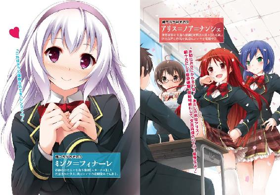

| シンマと世界と嫁フラグ ～びっくりするほどハーレムです～ (ＨＪ文庫) | |
| 空埜一樹 | |
| (2012) | |


口絵・本文イラスト にろ
第一章 神魔の右手は世界を握る
「君はいずれ世界を滅ぼすだろう。しかし、救うことになるかもしれない」
全くもって唐突に。
「え？」
日鎖心真は、その予期せぬ言葉を投げかけられた。
不必要なほど照明が絞られた室内で、周りにはいくつかの人影があった。暗闇のせいでその詳細はようとして知れない。シンマの前でテーブルらしきものに肘をつけ、ゆったりとした椅子に座した人物も顔が見えなかった。
「このような事態は初めてで、我々も多少、困惑している。よって細かい説明は後々に回してもらうとして、まずは端的に告げることにした」
無言の他の者達を代表するように、対面に座する何者かはこう告げる。
「日鎖心真くん。君は──はっきり言えば、【神】になるやもしれん男なのだ」
「......はあ」
なにを言っていいか分からず、シンマは、ただ間の抜けた声を漏らした。
それは長く苦しい受験生活が終わり、明日からいよいよ高校生活が始まるというタイミングでのことである。
「日鎖心真様ですね」
買い物に行こうと家を出たシンマは、路上でそう声をかけられた。
振り返ると、そこには同年代だと思われる少女が一人。スレンダーな体躯に薄紫の布に包まれた長い棒のようなものを携えていて、直立不動な体勢をとっている。
少女は艶やかな髪をアップして纏めており、その顔はぞくりとするほどの美貌に形作られているが、全くといっていいほど表情がなかった。まるで能面を被っているかのようなその様は一切の感情を窺わせず、こちらを撥ね除けるかのような拒絶を思わせる。
彼女の背後には長々とした黒い車が止まっていて、シンマはそれをリムジンと呼ぶのだと、昔観た映画から知っていた。お金持ちが使うものの定番で、彼らは皆それに乗ってピザを食べながら映画を観たりするのだ。多分。
「ええと、あんたは？」
「日鎖心真様ですね」
有無を言わせぬ口調で尚も問いかけてくる。仕方なく、シンマは頷いた。
「そうだけど......」
すると少女は背後に目配せをした。音を立ててリムジンのドアが開き、中から黒服を着た男たちが現れる。彼らはぞろぞろとシンマに近寄ると、その両手を掴んだ。
「な、なに!? なに!? ゆ、誘拐!? うちは妹と二人暮らしだから大した余裕もないですよ!? 昨日も特売のサンマ食ったんだから！ 特売の！」
特売を主張して憐みを誘ったが無駄な抵抗であった。シンマはそのままずるずると男たちに引きずられ、リムジンの中に放り込まれる。続いて滑るように少女も入り込んできた。彼女が席につくと同時にドアは閉まる。
「いってぇ......。なんなんだよ、一体。あんたら、何者？」
「申し遅れました。私は御守紅刃と申します」
「ああ、こりゃご丁寧に......っていや、そうじゃなくて」
「出発します」
「どんだけマイペースなんだよ......」
こちらの質問を受け付けるつもりはないようだ。車は音を立てて動き出した。後ろを見るともう一台、同じようなリムジンがついてきている。一般人を捕らえるためにしてはやけに大仰なやり方であった。車種を考えても、ただの金に困った犯罪者ではないようだ。
「......オレをどうするつもりだ？」
「ご安心下さい。我々は貴方を営利目的で誘拐したわけではありません」
「そうなのか。でも、営利目的以外で拉致するってことは、ひょっとすると──あんたらはオレのファンか!? おいおい、だったらちゃんと事務所通してもらわないと」
「貴方に暴力を与えるつもりも、金銭を要求するつもりもありませんので、どうかこのままお付き合い願えればと思います」
「......結構渾身で放った洒落のつもりだったんだけど」
物凄く綺麗にスルーされてしまった。立つ瀬がない。
「まあ、いいや。なんの目的があるか知らないけど、どうせ何も出来そうにないし。とりあえず全部終わったら帰りに本屋寄ってくれない？ 漫画買いたいから」
「......随分と落ち着いていますね」
目をしばたたかせて、コトハが尋ねる。ひょっとすればそれが彼女なりの不思議に思う表情なのかもしれなかった。
「そりゃ突然あんなことされた時はびっくりしたけど、こうして車に入れられちまった以上、慌てたって事は解決しないよ」
肩を竦めた自分に、彼女は軽く頷く。
「さすが、というべきですか。選ばれただけのことはありますね」
「なにが？」
無言。やはり質問には答えてくれないのかと思って、シンマはかなり投げやりに訊いた。
「......それで、目的地はどこよ」
しかし、その言葉にはしっかりと、コトハは答えてくれた。
「国会議事堂です」
「え？」
あまりに予想外で把握できない。慎重に尋ねた。
「オレの耳が悪くなければ、今、【国会議事堂】って言った？」
「そうです」
「......。あ、そうか。あんたの出身地では方言でレストランのことをコッカイギジドーって言うんだな。なるほどなー。日本って広いよなー！」
「この国の政治中枢を担う重要施設である国会議事堂です」
「容赦のない説明するなよ......せっかく現実逃避してたのに」
「申し訳ありません。ただ目の前のことから目を逸らしていても事態は前に進みませんが」
「拉致された人間からすごいまっとうなこと言われたぞ!?」
どうやら嘘や冗談ではなさそうだ。ますます分からない。ごく普通の一般人を連れて国会議事堂に行く？ どういう状況なのだ。
「......それで、国会議事堂に行って誰に会うの」
呼吸を一つ。映画のように間を置くこともなく、あくまでも率直に、コトハは言った。
「──内閣総理大臣です」
間違いなく時が止まった。微動だにしないシンマに、コトハは語りかける。
「着くまでの間、ピザと映画はいかがですか」
「いや、いらない」
やはり、そういう決まりらしい。
何かの間違いか、あるいは冗談、もしくは壮大なドッキリか。色々な考えが過ぎったが、コトハに連れてこられたのは間違いなく国会議事堂だった。しかもコトハたちは警備員に軽く顔を見せただけで門を通り抜けてしまう。あっさり内部に入ると、ある一室にシンマは通された。そしてコトハたちが退場した後、こう告げられたのである。
君は、神になると。
だが、当然ながらシンマには全く身に覚えがない。
「悪いんですが、オレはどこにでもいるごくフツーの学生なんですけど......」
仕方なくそう告げると、目の前にいる人物は深く頷いた。
「確かにそうだった。......数日前まではな」
わずかに手を上げると、部屋が明るくなる。相手の顔がはっきりと見えた。シンマは驚いて目を丸くする。そこにはテレビなどでよく目にする壮年の男がいた。つい最近、首相の座についた人物だ。それでも尚、シンマはそれが整形である可能性を疑ったが、だとしても見分ける術がない。ならばひとまずは本物と信じようと思った。コトハも言っていたが、現実から目を逸らしても事態は前進しない。
「お初にお目にかかる。この国の内閣において首長の立場にある、峰倉良鉄という」
相手が深々と頭を下げたので、シンマも慌てて同じように返した。左右にいる者達も一様に礼をする。大人からこんな風にされたことがないシンマは、どうにも妙な感覚を味わっていた。しかも、メディアの前に度々その姿を見せるいわゆる官僚と呼ばれる者達や、明らかに外国の人間だと思われる者も何人かいる。テレビのニュース番組等で見覚えのある顔があるところを考えると、彼らもまた政治家なのかもしれない。息苦しいような緊張が、漂っているように思えた。そんなシンマを安心させるように、峰倉首相は微笑む。
「周りの人間は皆、私が信頼を置けると判断した者達ばかりだから安心して欲しい」
「......はあ、そうですか......。あの、ところで、オレが神って？」
「うむ、それなのだが......」
息をついて、峰倉首相は問いかける。
「日鎖心真君──突然だが君は、【奇跡の力】と呼ばれるものを信じるかね？」
「奇跡の力？」
唐突な問いかけに面食らう。
「奇跡の力って......要するに、超能力とかそういうもののことですか？」
「言ってしまえばそうなるね」
「そりゃまあ、あったら面白いなとは思いますが。でも、実際ああいうのってトリックとかが多いんじゃないですか」
「確かにそうだ。多くの場合、彼らの見せるものは何らかの仕掛け、もしくは心理的な誘導による誤認を元に発生している。......しかし中には、それだけでは説明できない現象を起こす者も居るんだ」
シンマは怪訝な顔で、はあ、と相槌を打つ。
「あらゆる科学的分析をもってしても真相を解明できない、物理法則を完全に無視した能力の持ち主たちが、この世にはわずかだが存在している。......いや、正確には居たのだ」
「......あの、話が見えないんですが」
「我々はそれを──【資格者】と呼んでいる」
とりあえず話を聞け、ということだろうか。仕方なく黙ることにした。
「彼らは歴史上においてその力を駆使し、時にこの世界を操ることさえ可能としたのだ」
「でも、そんなすごい人たちをどうしてオレは知らないんですか？」
浮かんできた疑念をぶつけると、峰倉首相は深々と顎を引いた。
「いい質問だ。彼らの存在は、極めて秘匿とされていてね。一般の人はおろか、我々政治家でも限られた人間しかその事実を知らない」
「どうしてですか？」
「考えてもみたまえ。文字通り天地をひっくり返すような力の持ち主がこの世界にいると知ったら、一般市民はどう思う？ 利用する者、ただ恐怖する者、様々だろうが皆、一様に混乱は免れないだろう。それは社会的秩序の崩壊だ。だから隠す他なかった」
言われてみれば、確かにそうだろう。納得できる。この話が本当であれば、の話だが。
「【資格者】は歴史の流れの中でその存在を抹消され、彼らの行いのほとんどは別の人間がやったこととすり替えられた。はるか昔の人間などは、実際に奇跡の体現者として崇め奉られていたらしいがね」
「......例えば、誰です？」
「そうだな。現在、確認されている上でもかなり有名な資格者は──」
峰倉首相はあっさりとその名を告げた。
「──イエス・キリストだ」
思わず、目をしばたたかせる。神の子とさえ呼ばれた存在。歴史にそう詳しくない自分でさえ名を聞いただけで驚くような超有名人物だ。続けて、峰倉首相はいくつかの名を挙げた。それはかのアレクサンダー大王や日本では織田信長などいずれもかつて世界や、それぞれの国々で良くも悪くも歴史に残る事件を起こしたり、偉業を成し遂げてきた人物たちばかりである。二度に亘る世界大戦中にも、大きな貢献をした者がいるとの話だった。
「【資格者】の特徴として、彼らは【破壊】か【再生】、そのどちらかの力を宿していた。文字通りあらゆるものを壊す力と、どんな病気や傷も治す力だ。個人によってその大小はあったようだが、いずれにしろ尋常ならざるパワーを有していた」
「ええと。話を整理すると、その【資格者】のもっている破壊か再生の力が、オレにも宿っていると？」
「察しが良くて助かる」
シンマは、思わず笑ってしまった。
「キリストと同じ力を？ オレが？......いやぁ、そんな、まさか。さっきも言いましたけど、オレはほんとにただの一般人ですよ。そんなすごい能力もってません」
立ち上がると、峰倉首相はシンマに近づいてあるファイルを差し出した。
「開いてみて欲しい」
再び席についた首相に頷いて、ページをめくってみる。最初は何やら難しい言葉の羅列ばかりであった。しかしある地点でシンマは手を止め、わずかに目を見開く。
「これは......」
白黒やカラーなどの違いはあるが、それらは全て体の一部を写した写真であった。中にはその技術さえない時代であったものなのか、絵に描かれているものもある。
そして、そのどれもに、あるものが写りこんでいた。
紋章だ。腕や腹、背中や頬──場所に違いはあるが、どれにもアザのような、タトゥーのようなものが彫り込まれている。それらはいずれも剣、もしくは盾のように見えた。
だが、シンマが驚いたのはそんなところではない。それよりもっと根本的なこと──、
「どうだね、シンマくん」
峰倉首相が言った。これで分かっただろう、と言外に含むかのように。
「君にもあるんじゃないか？──その写真に写っているような、紋章が」
シンマの視線が右手の甲へと落ちた。わずかな間があり......そして、ゆっくりと頷く。
「ええ。......あります」
確かにそこには存在していた。峰倉首相の言う【紋章】が。
少し前に、焼けるような痛みと共に突如として発生したものだった。
「【資格者】は力が目覚めると同時に体のどこかへ、アザのような紋章が刻まれる。破壊の場合は【剣】を、再生の場合は【盾】を、それぞれ模したようなものがね。それらを我々は【聖痕】と呼んでいるが......つまりそれは、その者が資格者である証なのだよ」
しかし、
「......でも、オレのやつはこれのどれとも違います」
シンマは顔を上げる。なにかの間違いではないか、という可能性を信じて。
「オレの奴は、形が違うんです。この写真に写っているものとはどれとも」
だがその答えも承知していたものらしい。峰倉首相はただ、頷いただけだった。
「そう。それこそが、君を特別である【資格者】の中でも更に特別へと昇華させたものだ」
「......特別？」
「先ほども言ったが今回の君に起こったことは前代未聞で、当然、世界各国の代表が緊急招集されて行われた議論も容易には終わらなかった。だが、一応のところ出た結論もある」
峰倉首相は告げた。厳かに、シンマへ最後の裁定を告げるがごとく。
「恐らく──現段階で君は【破壊】と【再生】......二つの力を有している。即ちそれは、世界を滅ぼすのも、逆に弱き人々を助け救うのも、君の意思にかかっているということになる。これが意味するところは......即ち、全人類の生死は君の手の中にあるということだ」
静かな部屋に、その声はどこまでも重く、遠く響いた。
「分かったかね、日鎖心真くん。君は──【神】になるやもしれん少年なのだ」
なんと返していいか分からず、押し黙る。そんなシンマに、
「世界を代表して、日本国首相である私が話すこととなっている故、率直に伝えよう」
峰倉首相は、感情を交えずに告げる。
「現状、国連では君を【即刻殺すべきだ】という意見がある。それほど、【破壊】の力とは恐ろしいものなのだ」
「............」
「しかし、【様子を見るべきだ】という意見も同時に存在している。これは、【再生】の力を持つ者が過去に何度も世界を救い、あるいは恩恵をもたらしてきた記録があるからだ。君がどちらの選択をとるか、破壊者となるか、救世主となるか、その結果を見守るべきだという者もいるのだ。二派に分かれた議論はまだ継続中だ。君には酷な話となるかもしれないが、しかしある種の覚悟をもって──」
「......ああ、いや、まあ、それなら心配いらないと思います」
だが信じ難い事実に対してようやくシンマが返したのは、そんな軽い言葉だった。
「オレ、いらないんで。そんな力。使わないと思いますし」
「いらない？......【神】になれるやもしれない資格がかね？」
それまで静けさを保っていた室内がざわめき始める。シンマは鼻の頭を掻いて、
「実は、オレにはやらなくちゃいけないことがありまして」
「やらなくてはならないこと？」
頷く。そして、シンマははっきりと言い放った。
「実はオレ、将来──」
視線が痛かった。
「......なんでこうなるかなぁ」
入学式を終えた生徒たちはそれぞれ割り振られたクラスに入り、シンマもそれに倣って一年Ｂ組の後ろから二番目、窓際の席という割合恵まれた席についている。
初対面の人間が数十名、一つの空間に閉じ込められるわけだからまだ皆、どことなくぎこちない。中には中学からの知り合いなのか既に親しげな感じで軟球のキャッチボールなどしている連中もいるが、ほとんどの場合、互いに探り合うような素振りで視線を合わせたり合わせなかったりしていた。
だがその中でも特に注目を集めているのは他でもないシンマだった。しかし自分は、お世辞にも目立つ生徒であるとは言えない。よく言えば協調性のある、悪く言えば没個性とも呼べる人間だ。それでも皆の視線を集めているのは、
「シンマ様、どうか致しましたか」
「......いや、別に」
隣にいる少女──御守紅刃のせいだった。
あの後、シンマは来た時と同じように、家に送られていつも通りの晩を過ごした。そして今日、高校へ向かうべく家を出ると、昨日のコトハと、そしてリムジンの姿が待ち受けていたのである。高校まで送り届けたいと言われ、はじめは断ろうとも思った。が、それより気になることがあって同席したのだが、それが仇となったというわけだ。
学校の前に高級車で乗り付け、中から女性を伴って現れたかと思えば、彼女と寄り添うようにして入学式の会場に入って行く生徒。あいつは何者だと噂になってもおかしくない。教室に入った後も皆がこそこそと自分のことを囁き交わしていた。
「ところで......本当なのか？ オレを警護するって」
「はい。それが元々、私が授かった役目ですので」
そう、シンマが気になったのは、迎えに出たコトハが、シンマの合格した高校の女子制服を着ていたことだ。もしや、と思って確認したが、やはり彼女はこう言った。
『シンマ様の御身は最早、貴方だけのものではありません。事は国家に関わることです。よって、二十四時間警護させて頂きます』
つまりそのために、同じ学校の生徒にまでなったというのだ。
「......こりゃ本当かもなあ」
手の込んだドッキリ──という可能性をまだ考えていたシンマだが、これでその線は完全になくなったと思った。いくらなんでも冗談で出来る範囲を超えている。まあ、国会議事堂に行った時点でありえないのは分かっていたはずだったのだが。しかしそうなると、今もどこかで自分のことを誰かが監視しているのかもしれない。非常に居心地は悪いが、現状、どうすることも出来なかった。
「神様の力、ねえ」
手に巻いた包帯をシンマは見る。アザ......昨日会った峰倉首相の言葉を信じるのならば【聖痕】と呼ばれるものが、そこには刻まれている。隠すため急場の措置でこうしたが、いつまでも怪我を装うわけにはいかない。いずれこちらにも何らかの手を打たなければならないだろう。
「まだ信じられませんか？」
コトハの質問に、苦笑した。
「まあ、あんなこと言われていきなりほいほいと受け入れられるほど、オレの器はでかくないんだよ。基本的には小市民だからな」
「なるほど......。ところで、先ほどから皆が私たちの方を見ているのですが、一体どうされたのでしょうか」
そりゃそうだろう、とシンマは息をつく。
「オレが皆でも多分、注目すると思うよ」
「私に何かおかしいところがありますか？」
「コトハが悪いわけじゃないけどさ......」
「ではシンマ様に問題があるのですね」
「いやいや！」
「私に出来ることであれば改善のお手伝いを致しますが」
「申し出は大変ありがたいけど！」
「大丈夫。長く時をかければ水滴でも岩に孔を穿てるように、諦めぬ心が大切です」
「すごい説得されてる！ オレじゃないのに！」
がっくりと肩を落として、シンマはペンを指先で回した。
「別にいいんだけどな。ただまあ、オレ、あんまり目立つの好きじゃないからなあ」
「そうなのですか？」
「なんていうか、平穏無事っていうかな。波風立てず、クラスに溶け込み、友達はいるけど人気者じゃない。そんな位置に居たいんだ」
「そうですか。ならばこれからそうなれるよう、一層の努力をしなければなりませんね」
「ははは。ありがとう。初手で既に詰んだけどね」
乾いた笑いで遠い目をしたシンマに目をしばたたかせつつ、コトハは小首を傾げる。
「......それにしても、シンマ様は変わっておられますね」
「なにが？」
「私の知るところ、十代の男性というのはとかく派手な生き方を望むものであったはずですが。異世界の少女と冒険に出るとか、特異な才能を見抜かれて弱小チームを伝説に導くとか、異性にモテて酒池肉林の日々を送るだとか」
「一体何を教科書にして十代の男を学んだの」
「なるべく普遍的に物事を見聞きしたはずですが」
「偏ってる偏ってる」
シンマは手を振って、ため息をついた。
「......まあ、確かにそこまでいかなくても、普通はオレくらいの年なら【特別】を望むものなのかもしれないな」
一番、未知の可能性が残されている年代だ。それも当然だろう。
「でもなあ。オレはなるべくなら、可もなく不可もなく人生を渡り歩いていきたいんだよ」
「なぜですか？」
「なぜですかって言われても、これがオレの生き方としか。まあ、世の中にはいろんな人間がいるもんだってことかな」
コトハは、そうですか、と漏らして一応は納得してくれたようだった。シンマは話の矛先を変えてみる。
「......そういえば、コトハって何者なんだ？」
「貴方の護衛です」
「いや、そういうんじゃなくて。素性とかそういうの。どう考えてもオレと同じくらいの歳だしさ。気になるんだよ。言えないなら仕方ないけど」
「......そうですね」
頷き、考え込むような沈黙を置いた。そして、コトハは口を開く。
「私の家系は代々ＳＰをしています」
「ＳＰ？」
「セキュリティポリス。警視庁警備部警護課に属し、主に要人警護任務に従事する警察官を日本ではそう呼びます」
ドラマか何かで聞いたことがあった。よく黒スーツを着て、政治家が演説している時に周りへ散って彼らを守っている者達のことだろう。
「そのＳＰの中でも御守家は特別で、現在は首相をはじめ国内の重鎮の護衛を専門として請け負っております。元々は室町より続く武術の一門でしたが、その腕を見込まれて江戸開幕時より今のような任を負ってきたのです」
「......へえ」
すごい話になってきた。いや、それを言えば昨日から信じられない話の連続なのだが。
「私はその末裔。幼い頃より父から教えを受け己を磨き続けて来ました。その結果、御守家の力を継ぐに値すると認められ、その証左である代々当主が名乗ってきた【疾風迅雷】の二つ名を襲名したのです」
相変わらずの無表情で、コトハはシンマの方を見た。
「そこに来てシンマ様に聖痕発生との知らせを受け、同年代ということもあり、未熟ながら私が護衛の任を受けたというわけです」
シンマは曖昧な顔で頷く。話が飛躍し過ぎていまいち把握し切れていないが、とにかく彼女は彼女なりに仕事として来ているということなのだろう。
「そうか......しかし大変だな。そんな小さい頃からずっと修行してたんだろ？ 他にやりたいこととかなかったのか？」
「......他にやりたいこと、ですか」
「そう。例えば夢とかさ」
初めて、かもしれない。シンマがそう言った時、会って今まで一度たりとて崩れなかったコトハの表情が、わずかに動いた気がした。しかしそれは気のせいだったと思うくらいわずかな間で、すぐに元の能面に戻る。
「どうでしょう。シンマ様にはそのようなものがあるのですか？」
「ん、まあな」
机に突っ伏して、シンマは頬を掻いた。何かを言おうと、口を開いたその時。
「あぶねぇ！」
風を切るような音がして顔を上げたその時には、先ほどキャッチボールをしていた奴らが投げ合っていた軟球が既に眼前へ迫っていた。思わず腕で庇おうとして、
「疾っ！」
鈴鳴りのような音がした瞬間、それは真っ二つに割れる。
「ええ!?」
度肝を抜かれつつ、ふと気配を感じ、そちらを向いたシンマは目を見開いた。
刃だ。教室の照明を鈍く返す滑らかな刀身がボールの迫る線上に真っ直ぐと伸びている。
それを持っているのは、大方の予想通りコトハであった。
彼女は真剣と思われる日本刀を手に、ボールを叩き斬ったのだ。はらりと、薄紫の布が落ちる。彼女がずっと携えていたのはこれだったらしい。
「......御免」
優美な動作で刀を振ると、涼やかな音を立ててコトハは納刀した。そしてくるりとシンマの方に向き直ると、平坦な口調で尋ねる。
「お怪我はありませんか」
「い、いや、大丈夫だけど......。それ、本物......か？」
「はい。御守家に代々伝わる宝刀です。此度、任務を受けるため父上よりお借り致しました。ご覧になりますか？」
コトハは刃を抜くとそれをかざし、シンマによく見えるようにする。
「いや、分かった。分かったから仕舞って。目立ってる！ 目立ってるから！」
頷き刃をわずかに払うと、彼女は流麗な仕草で刀を仕舞った。
「っていうか軟球くらいで刀抜かなくてもいいよ......」
「しかし私は貴方の護衛ですので」
「別に当たっても死ぬわけじゃないから」
「万が一という場合もあります」
「オレの脳が豆腐並だったらありえるかもね」
「豆腐並なのですか？」
「確かめられるとは思わなかった！ 多分違うと思う！」
しかしそんなやりとりをしている間にも、教室はざわめきから、悲鳴に変わろうとしていた。まずいな、とシンマが思っていると、
「うぉーい、授業始めんぞぉー」
まるでそのタイミングを見計らったように扉が開く。タールが絡まり合ったような、鈍く低く、そしてたるい声だった。教室中の視線が集まる。しかしそれを気にすることもなく、現れた男は教壇に立った。
手入れされていないぼさぼさの髪は長く、目を完全に隠してしまっている。よれよれの白衣はあちこち薄汚れて、みすぼらしいという言葉がよく似合うように思えた。
「お前らとっとと席につけー。俺をわずらわせるなー」
適当な発言をした後で、彼は背後の黒板にチョークで【訓堂亮真】と乱雑に字を書く。
「えー、さて、俺がお前らの担任である訓堂亮真だ。先生でもリョーマでもくどうさんでもなんでも呼べや。んでまあ、これから色々説明するが、まず......」
「せ、先生！ あの子が日本刀をもってるんです！」
一人の生徒が、立ち上がると勇気を振り絞ったようにそう伝える。まずい、と思ったがもう遅かった。訓堂はそれを聞いて、ふむと呟く。
「なるほど、そりゃ大変だ」
しかし、
「えー、さて、今日のカリキュラムだが、初日ってことで簡単な説明をして終わる。本格的な授業は明日からだ。やったなー。まず年間の行事だがー」
「せ、先生！ 大事件を受け流さないで下さい！」
訓堂はその尤もな訴えに、明らか面倒くさそうな顔を向けた。
「日本刀くらいでぐだぐだ言うんじゃないよ。いいか、今でも世界のあちこちでは戦争が起きて、毎日のように人が死んでるんだぞ。自分たちだけが不幸だと思うんじゃない」
「大分と違う方向の話のような!?」
「うるせぇな。俺をわずらわせるなって言っただろ。いいか、そこの御守紅刃っていうのは侍の家系なんだ。だから日本刀もってるんだ。自然じゃねえか。格好いいじゃねえか」
「先生、平成って言葉をご存じですか？」
「えー、で、明日は在校生によるお前らの歓迎会があるからー」
どうやら無視することに決めたようだ。甚だ適当というか、揉め事が嫌いな性質らしい。それに対して教室中から非難が起こると、彼はいかにもかったるいという風に、
「わぁーったよ。こいつは特別に許可もらってるから大丈夫なんだ。な、安心しただろ」
「先生、日本で刀持つのを許可されるってどういう事情ですか！」
「大人の事情だ」
きっぱりと言い切られ、それ以上の説明をする気はないというように訓堂は別の話を始めた。教室内は、少しずつ静まっていく。それでも当然、納得がいかないといった視線がちらちらとコトハに、そして、彼女と共に現れたシンマの方に向いていた。
コトハは刀を布でくるむと、再び席につく。
「すみません。確かに少々軽率でした」
「いや、いいんだけどね、コトハは自分の仕事しただけだから。ただ......次からもうちょっと動く前に色々気を付けてもらえると助かる」
「分かりました。では今度から手裏剣を使います」
「うん。根本的に分かっていない気がしてきた」
がっくり、と机に突っ伏したシンマは、そのままで訓堂の説明を聞いていた。話はだらだらと続いたが、十五分ほどで終わる。
「んじゃあま、そーいうことで、明日っから宜しくな。まっすぐ帰れー。寄り道すんなー。俺に面倒かけるな。それさえしなけりゃ、人殺しでも革命運動でもなんでもやれや」
とんでもないことを言って、訓堂は手を振り教室から出て行こうとした。だがその間際、足を止めて思い出したように言う。
「ああ、そうだ。日鎖心真」
「あ？ ああ、はい」
突然呼ばれて驚いていると、彼は前髪の隙間から覗く目でこちらを見ながらこう続けた。
「後で裏庭に来い。御守紅刃と一緒にな。......ちっと個人授業をしてやる」
校舎裏の敷地は陰になっているためか、じめじめとしてどこか蒸し暑かった。足を踏み入れるとそこにはシンマの身長、数倍はあろうかという巨大な岩が厳然と聳えている。
「なんだこれ」
拳で叩いてみると当然ながらこつこつと硬い感触を返す。明らかにこんなところにあるのは不自然で、何処からか持ってきたに違いない物質だった。
「......まあ、いいか」
不思議に思いつつもそう呟いた後で、シンマはその岩にもたれかかる。そしてしばらくしてからため息をつくと、
「......なあ、やっぱりまずかったかな？」
そう、コトハに問いかけた。彼女は岩を見上げながら答える。
「なにがでしょう」
「日本刀。先生から呼びつけられるとはなあ。厳重注意で済めばいいけど」
「もし問題になりそうならば、私がなんとか致します」
「え、国に手回ししてもみ消すとか？」
「ええ」
コトハは頷いた。
「先生の方を」
「消さないで！ 社会的にも物理的にも消さないでね!?」
「承知しました。記憶を抹消する為に脳の部位を削ることと致しましょう」
「ナチュラルに法に触れる言動をしないでくれ」
「物騒なこと言われてんなぁ。善良な三十路をあんま苛めんなよ」
背後からたるい口調でそう声をかけられて、シンマ達は振り返った。訓堂亮真が、タバコを咥えながら歩いてくる。
「先生......」
シンマはとにかく上手く説明しようと、頭を巡らせながら口を開こうとした。しかし、その前に訓堂はそれを手で制す。
「あー、いい。大丈夫だ。全部分かってる」
「......どういうことですか？」
「日鎖心真。お前が何者で、どんな力をもっていて、どんな使命を帯びてるのか、全部分かってるって言ってんだよ。なぁ──神様？」
「......何者ですか？」
警戒するように、コトハが前に出て布を取り払った。刀の柄に手をかける。しかしそれより前に、彼は両手を上げた。
「おいおい、勘弁してくれよ。御守家の虎の子に抵抗するつもりはねぇーって」
「......私のこともご存じなのですか」
「ああ、知ってる。なんせ俺は、お前ら側の人間だ」
「政府の人間......ってことですか？」
シンマの質問にゆっくりと頷く。煙を吐き出して、訓堂は無精ひげの生えた顎を摩った。
「自己紹介が遅れたな。俺は訓堂亮真。表じゃこの学校の教師だが......実際は、研究者だ」
「研究者？......もしかして、【資格者】のですか？」
「歳の割には察しがいいな。その通りだ。俗に【資格者】と呼ばれる人間──つまり常識外れの力を持つ奴等を研究、分析する政府機関。オレはそこに属してる。もちろん、一般には秘匿とされているがね」
未だ自らの得物をいつでも抜けるようにしながら、コトハが問いかける。
「......私は存じ上げませんが？」
「政治家でもごく一部の奴しかしらねぇーさ。それだけ極秘でね。何せ、国家の存亡を揺るがしかねない存在なんだ。【資格者】って奴はな」
「では貴方が嘘をついていても私達には分かりかねますね」
そのまま臨戦態勢に移ろうとするコトハの肩を、シンマが叩いた。
「コトハ、今は話を聞くべきだと思うよ。判断はそれからしても遅くない」
「......シンマ様がそう申されるのであれば」
頷いて彼女が下がるのに、訓堂は軽く手を上げて「ありがとよ」と礼をした。
「いえ。それで、その研究者ってのがオレになんの用ですか？」
「ああ。言ったろ？ 個人授業をするってな。【資格者】についてある程度は首相から聞いているだろうから、いわゆる補足説明ってやつだ」
そう言って訓堂は、近くにあった石に腰かける。そして、紫煙をくゆらせた。
「......さて。シンマ、お前の力はもう聞いたと思うが、かなり特殊だ」
「そうらしいですね」
後ろ頭を掻いて、なんともいえない顔をする。それを見て、訓堂は片口を上げた。
「心配すんな。誰だってそうだ。今までの奴らもそうだったはずだ」
「なにがですか？」
「戸惑ってんだろ？ 突然、とんでもない力を持ってるって言われてよ。おまけにお前の場合、それは今までにないものだって言う。神様の資格を持つ者──十五、六のガキが背負うには、ちっと現実離れし過ぎた話だ」
言われて、シンマは息をつく。全て見抜かれているなら、話は早い。
「......まあ、正直に言えばそうですね」
「まだ信じては頂けませんか？」
「ある程度は納得してるんだけどな。ただ、なんていうか実感がないんだよ。別に嘘だとは思わないんだけど」
改めて、手の甲に視線を落とした。そこには数日前、突如として発生したアザがある。
「受け入れられない──そうだろ？」
訓堂の言葉に頷いた。そう、それが一番正しい。コトハの話を、全て疑っているわけではない。ついていけない部分はあるが、否定出来る要素が今のところ見当たらないからだ。しかし、それと自分の中で実感として持てるかという話は別だった。
訓堂の言う通り、とかくリアリティがないのだから。
「別にお前に限った話じゃないのさ。記録によれば、今までの資格者だって最初は困惑していたみたいだからな。だからこそ政府は俺を派遣したってわけだ」
立ち上がると、訓堂はぶらぶらと歩き始めた。
「オレが教えてやるよ。お前の中に起こった異変を、身を以て実感してもらうためにな」
そのまま二人の間をすり抜けると、彼は後ろにある大きな岩の前に立つ。こつこつと叩いて、事も無げに言った。
「とりあえずこれをお前に──粉々にしてもらう」
どういうことだ、とシンマは思わず目をしばたたかせる。それに対して訓堂はくつくつと笑った。
「分かりやすい奴だな。別にお前の拳でぶっ壊せっつってるわけじゃねえよ」
タバコを挟んだ指を、シンマに向ける。
「眠ってるお前の力を呼び起こすのさ。──資格者の力をな」
「......そう言われても」
ちら、とコトハを見るが彼女は首を振った。彼女もそこまでは知らないのだろう。
「どうやればいいんですか？」
「どうとでも。既にお前は力をもってるんだ。後はそれを使おうと思えばいい。それだけで、お前自身が応えてくれるはずだぜ？」
唸った後で、シンマが首を傾げる。
「でも先生、運転したこともない素人を車に放り込んで、『それじゃ動かせ』って言ってもどうにもならないでしょう」
「はは、上手い例えだ。......まあ、とりあえずやってみろよ。岩に向かって、【壊れろ】って思えばいい」
「壊れろ、ですか」
「ああ。と言ってもいくら資格者でも初めから上手く出来るわけじゃない。ちょっとずつ訓練を積んで初めて本格的に使えるはずだからな。まずは傷をつけるところから始め」
と、訓堂が言いかけたその直後だった。
「えーと......こうですか？」
なんとなく、壊れろ！ と念を込めて、シンマが軽く手をかざした瞬間。
──空気がわななくような音が響き、掌から黒々とした光が迸った。
「なっ──」
訓堂の口から、煙草が落ちる。
「うお、すげえ！ なんか出た！ 先生、これなんですか!?」
それは例えるならば、闇色の雷であった。不安定な力が顕在化し、シンマの手首の周りで踊っている。
「......驚いたな。こんなにあっさりと出るとは。そうだシンマ。それが、お前に宿った【破壊】の力だ」
「へー、これが。ほへー。ほいりゃっ！」
そう言って、シンマは無造作に手を振った。
その動作に従うよう、雷は大気を打ち砕くようにして直線状に走る。閃光が瞬いた。思わずシンマは逆の腕で目を覆う。と同時に轟音が鳴り響いた。
そして、視界が元に戻ったその時、目の前には【なにもなかった】。
先ほどまで確かにあった巨大な岩が跡形もなく消え去っている。ぱらぱらと欠片となった石が周囲に散らばる様子だけが、かつてそれが確かに存在していたことを物語っていた。
「......すげー。びっくりした」
「びっくりしたのはこっちの方だ。これほど短時間で力を使いこなしたのは記録上、一人もいねぇぞ。......これも【神】の資格を持つ奴の資格かね」
訓堂の言葉にシンマは小さく顎を引いた。それまで情報としてしか存在していなかった数々の話が、全て気持ち悪いほどのリアリティを帯びてくる。どれほど荒唐無稽なことであっても、目の前に、ありありと横たわっている。それは、現実という名の化け物だった。
「てか、あの、言われるままやっちゃいましたけど学校でこんな力使って大丈夫なんですか？ 騒ぎとかになりません？」
人が来ないかときょろきょろ見渡しているシンマに、訓堂は笑った。
「ああ。まあ、今回は俺が人払いしといたから大丈夫だけど、今後何があるかも分からないからな。その辺はこっちも考えてる」
言いながら訓堂は懐から何かを取り出して放り投げた。受け止めて見ると、ケースに入った半透明の水晶球だった。
「それは【アーティファクト】って言ってな。名前は......【水鏡無限】」
「アーティファクト......？」
「資格者が死亡した時、理由は不明だがその体内から物体が現れることがある。それらを総称してそう呼んでるんだ」
訓堂は、アーティファクトは死亡した資格者が持っていた力を宿しており、それを砕いて武器や道具に加工することで様々な効果を生み出すことが出来る、と説明した。
「アーティファクトのほとんどは国連が所有しています。シンマ様に資格者の力が目覚めたのを知ったのも、国連本部に保管されている別のアーティファクトによるものです」
コトハが付け加えるのに、シンマはやや戸惑いながらも、理解したと頷く。
「この【水鏡無限】は手で握って離すと、使用者の周囲を一時的に外部から完全に隔離するんだ。使用時間は最大で一時間程度で、その間の一定範囲内は外の人間から見えず入ることも不可能になる。解く時は使用者が同じように握って離せばいい。お前がもっときな」
そう言って訓堂から渡された小さな球を、シンマは礼を言いながらポケットに仕舞った。
「さて、話を戻すぞ。お前の力だが、実はまだ完全じゃない。お前は資格を得たばかりだからな。これからどんどんと強くなっていくだろうが......」
「これで全部じゃないってことですか？」
「歴代の【資格者】でさえもっと強かった。記録に残っている中でも資格者は、戦いで名も無い島を一つ吹き飛ばしたり、どんな病や傷も治したり、あらゆる兵器から身を守る術をもっていたりと、他にも色々尋常ならざる現象を起こしたと記録にある。......ましてお前は特別だ。専門家の俺でさえ、どこまで上り詰めるか分からねぇのさ」
それだけの力がたった一人の人間の中にあるのだとすれば、確かに資格者の誕生は世界にとって何らかの変革をもたらす兆しにもなるだろう。今回、今までにない力が目覚めつつあるのだとすれば余計にだ。......しかしシンマは特に気にすることもなく、先ほど凄まじい力を発動した自分の手の甲を眺めていた。
「なるほど。これが【破壊】の力ですか」
コトハの声に視線を傾ける。彼女は興味深げに岩の残骸を見つめていた。しかしその表情にはやはり色がない。シンマは彼女が感情を乱すことは果たしてあるのか、と場違いなことをふと考えた。
「そうだ。尤もこれは一番、初期の段階。本格的に目覚め始めれば、やがてシンマの力はある特定の方向性を持つようになる」
「特定の方向性？」
シンマの質問に、訓堂は頷く。
「記録によれば【資格者】はいずれも【破壊】か【再生】の力を持った時、後にいくつかの属性に分かれるようになるそうだ。それらは自然現象に則っていて、それぞれ火、水、土、風となる。破壊は壊す、奪う等のマイナスの力。再生は創る、護る等のプラスの力と、それぞれ分かれるんだが......今のシンマはただ無秩序な力を振りかざしたに過ぎない。応用も利かなけりゃ、使い勝手も悪いってわけだな」
「ふぅん。なんかゲームの魔法みたいな感じですね」
そう、シンマは自分なりに分かりやすい形にして表現してみた。
「ああ、似ているだろう。ただ、その威力は段違いだが。......さて、次だ。ここがお前の異常の中の異常ってところだな」
訓堂は懐から小刀を取り出して鞘を抜いた。刃で、躊躇いもなく自らの腕を切りつける。
「先生？ なにしてるんですか？」
訝しげに見るシンマの前で、顔をしかめた彼の腕からは赤い血が流れ始めた。訓堂はそれを見せて、
「シンマ、手を翳し、目を閉じて念じな。さっきと同じ要領で、今度は【治したい】と思うんだ」
「え？ こうですか？」
要はさっきと同じ要領なのだろう。言われた通りにし、暗闇の中で、強く願った。不思議だった。一度やっただけなのに、もう体がやり方を覚えている。
やがて、指先がほのかに温かくなり始めた。うっすらと目を開くとシンマの手から光が溢れ、その粒子は訓堂の腕に取りつく。すると、見る間もなく傷は修復され元通りとなった。
「やっぱりな。これで立証されたが、お前はどっちも使えるってわけだ」
咥え煙草を指で挟み、訓堂はにやりと笑った。
「こいつが【再生】の基本的な力だ。普通、【資格者】となった人間は破壊か再生、どちらかの力に選ばれる。逆を言えば、通常はどちらかしか使えないということになる」
「ですが、シンマ様はどちらも使うことが出来る」
コトハの言葉を、訓堂は首肯する。
「その通り。【資格者】が神と呼ばれる存在によって破壊か再生、そのどちらかに選ばれた人間だとすれば......シンマ、お前はそのどちらかを自らの手で選ぶ力を得た特別の中の特別。即ち──神、そのものだ」
シンマは、静かに頷いた。
「このまま力が強くなれば、お前はいつか選ぶことになる。救世主か──あるいは、破壊者になるかを」
──君はいずれ世界を滅ぼすだろう。......しかし、救うことになるかもしれない
「......あの、先生」
しばらくしてからシンマは、顔を上げた。
「質問なんですけど、オレ、このまま日常は送れるんですか？ 昨日訊いたんですけど、オレが【資格者】だっていうのは世界中に知られちゃっているんですよね。色んな国の人がやってきたりしませんか？」
「ああ、その辺は問題ないだろう。少なくともしばらくの間はな。......お前、力を使わないって言ったらしいな？ 連中の前で」
はい、と答えると、訓堂は口の端を歪める。
「それがどうも随分とキいたらしい。実はあの場に居たのは日本をはじめとした世界各国のお偉方なんだが、お前が予想にもしてない発言をしたせいで、ちょっとした混乱がおきてな。【本人がああ言ってるんだから、下手に刺激しない方がいい。このまま見守るべきだ】って意見が多くなってきたんだよ。まだまとまっちゃいないんだが現状、各国が互いにけん制し合っていて、ひとまず日本が代表してお前を監視するって方向で落ち着いてるんだ」
「なるほど......分かりました。妹がいるんですけど、そっちは平気でしょうか」
シンマにとっては自分よりも気にかかる事項を尋ねると、訓堂は、
「安心しろ。そっちの方にも手を回して、気付かれないよう、特殊部隊のチームを組んで守ってる。個人には勿体ないくらいの警備体制だぜ」
息をつく。どうやら、当面の心配はいらないらしい。
「......力を使うつもりはないのですか？」
コトハが問う。その目はやけに真剣で、何かを確かめているように思えた。それを奇妙に思いながらもシンマは頷く。
「オレには、【夢】があるからね。神の力なんてもの、いらないんだよ」
「......そうですか」
そんな自分に、訓堂が尋ねた。
「夢か......あれはマジなのか？ 昨日、首相の前で言ったっていう」
「はい、マジですけど」
「夢、ですか。どのような？」
コトハの質問へ、シンマは微笑む。そして何の躊躇いもなく、堂々と言い放った。
「──いや、オレ、お嫁さんが欲しいんだ」
「......お嫁さんですか」
「うん。出来のいいお嫁さんもらって、幸せな家庭を築きたいんだよ」
「......ん？ おいおい、それだけか？」
怪訝な顔の訓堂に、シンマはきょとんとしながら、
「それだけですけど」
「本当にそれだけ、なのですか？」
コトハの問いかけにも、シンマは頷く。
「本当にそれだけだよ」
長い沈黙の後、訓堂はぼそりと漏らした。
「......っかしいな」
「え、ダメですか？」
「いや、それはいいんだけどよ。つか改めて考えるとせせこましいな。十代が持つのにその夢は本当にいいのかお前」
「せ、せせこましいですかね？ いや、これ結構大変だと思うんですよ。出来のいいお嫁さんって今の世の中なかなか難しいですよ、探すの。趣味とか嗜好もあるし......」
そんな変なことを言っただろうかと慌てていると、訓堂は苦笑した。
「まあ、お前がそう言うならこっちからこれ以上、口出すことは出来んが......変わった奴だな。......しかし、それはちょっと難しいかもしれんぞ」
「どういうことですか？」
「お前が今言った、嫁が欲しいってことだけど、昨日首相にも同じように言ったろ？ それ、本来の意味とは違う形で伝わってるぞ」
眉を顰めるシンマに、彼は肩を竦める。
「おまけにそのせいで、お前を狙ってる奴が現れるかもしれねえ。【資格者】は全部が政府の管理下にあったわけじゃなくて、中には反旗を翻して独自の組織や集団を作っていた奴らもいたからな」
「え、でもオレの情報って秘密にされてるんですよね？」
コトハが頷いた。
「確かにそうです。しかし彼らもまた、独自の情報網を持っています。それを使い、シンマ様の存在を知ったとしてもおかしくはありません」
「資格者の死後、どの組織も動きはなくなったが......だからって全部が全部、そのまま消えちまったわけじゃねえ。中には再び自分たちが活動する力を持つために、次代の【資格者】の誕生を待ちわびてる奴らもいる」
訓堂は煙草の先を揺らしながら、
「確かに各国は今のところ、お前に対する接触は控えちゃいるが......代わりに数十年ぶりに現れた【資格者】の存在を知ったそんな奴らが、勝手に日本へやってくるかもしれねぇ。......お前を求めてな」
困った話だ。シンマはなんとも言えない気分だった。
「まあ、世界各国の人間が来日するなんてことよりは遙かにマシだろうが。いずれにしろ、以前と同じように平穏無事な学園生活ってわけにはいかんかもしれんな」
しばらく考え込むように、シンマは視線を落としていた。しかしやがて、
「まあ、なんとかなるでしょう」
「軽いなおい」
「誰が来てもオレがやることは変わりませんからね。適当にかわしますよ」
「......本当に面白い奴だな、お前。普通こんなこと言われたら焦るか変に虚勢を張るかのどっちかなんだが」
シンマは目をしばたたかせて、首を傾げる。
「そういうもんですか？ そうやった方がいいですかね？」
「いや、別に必要はないが。......まあ、頑張れよ」
へらりと笑って、訓堂は背を向けた。手を振りながら去っていく。
「......神の力、ねえ」
拳を握って、シンマは静かに呟いた。
第二章 神魔の願いは彼女の為に
「......本当についてくるのか？」
「二十四時間警護するよう、命を受けていますので」
放課後。さすがにリムジンでの出迎えは勘弁してくれと申し出て、それは了承されたものの、やはりというべきかコトハだけは継続してシンマの傍にいた。追い返そうとも思ったが、彼女も仕事でやっている以上は無下にするのもあんまりだろうと、結局それ以上はなにも言わなかった。
（それにしても奈々になんて説明すればいいんだろうなあ......）
頭の中でもっともらしい言い訳を考えるがどうも説得力がない。そもそも未成年が同じ歳の女性を同居させるに足るまっとうな理由など、あると思う方が間違いだ。
（まあ、なるようにしかならないか）
そう思って玄関の前に立ったシンマは、ふと左に視線を傾け怪訝な顔をした。
「あれ......？」
「どうか致しましたか」
隣の家に大型のトラックが止まっている。そのコンテナ部には【イトウ引っ越しセンター】というペイントがしてあった。
「いや、あっちは空き家だったはずなんだけどな」
「以前は誰か住まれていたのですか？」
「うん、昔、オレが小さい頃にな。長い間誰もこなかったんだけど」
「......不審であるなら私が確かめて来ましょうか？」
既に動こうとしているコトハへシンマは首を振る。
「いや、いいや。コトハの場合なんでもなくてもなんでもあるようにする可能性があるし」
「そのような事例を見せた覚えはありませんが」
「今日の朝、真剣でボールを叩き斬った子が言っても説得力ないなあ」
やれやれと軽く息をついてノブを握り、シンマは自宅の扉を開いた。
「ただいまー」
玄関に足を踏み入れてそう声をかけて、数秒。
──だっ。
鈍く大きな音が聞こえた。と、思うや否や、
だだだだだだだだだだだだだだだだだだだだだっ！
「に──い──く──ん──っ!!」
目の前にある階段を凄まじい勢いで降りる人物が現れた。年の頃は十歳前後。おかっぱ頭で太い眉毛が特徴的な、可愛らしい少女だった。
「にいくぅうううううんっ！」
ばんっ！ と少女は最後の一段を蹴ると、そのままシンマに飛びかかる。だが、そんな彼女に怯むことなく、シンマは大きく両手を広げた。そして、
「奈──々ぁ──っっ!!」
それまでどこか落ち着いた雰囲気をかもし出していたはずのシンマが、満面にて全開の笑顔で奈々と呼んだ少女を受け止める。
「にいくんっ！」
懐に収まった彼女を、シンマは全力で抱きしめた。
「奈々っ！」
「にいくんさんにいくんにいくんにいくんにいくんにいくんにいくん！」
「奈々奈々奈々奈々奈々奈々奈々奈々──っ！」
そのままシンマは奈々と一緒にその場でぐるぐるとまわり始める。実に楽しそうに。
「に──い──く──ん──っっ！」
「奈──々ぁ──っ!!」
ひとしきり踊りまわった後、至福の顔で彼は床に転がった。
「ウフフフフフにいくん！」
「フフフフフフ奈々ー！」
飽きることなく二人でピンク色の時間を楽しみ、しばらくしてから、
「......あ」
シンマはようやく気付いた。いつもと違い、この家には第三者が居たことを。
視線を感じて顔を上げると、コトハが無表情でじっとシンマを見つめている。
「......見、見ないで」
その発言に目をしばたたかせ、彼女はゆっくりと頭を下げた。
「どうぞご自由に」
「お、終わりました！ 終わりましたよ！ べ、別にいいよな!? 兄妹の数時間ぶりの再会だよ!? 秒数にしてどれくらいになると思う!?」
「私は何も言っていませんが」
「雰囲気で分かる！ 分かるの！ ごめんな！ 妹が好きなんだ！ 大好きなんだ！」
「家族の仲が良いのは結構なことかと」
「......コトハの場合、冗談で言ってるのか真面目なのかわからないんだよなあ」
「なんだ、にいくん、お客さんか？」
ようやくコトハの存在に気付いたのか、奈々が不思議そうに言った。
「御守紅刃と申します。以後宜しくお願い致します」
丁寧に頭を下げたコトハに、彼女もまた、体を起こして同じように返す。
「おう、よろしくお願いします！ 日鎖奈々です！」
立ち上がったシンマにぶら下がりながら、興味津々といった体で奈々が尋ねた。
「にいくん、誰だこの人は。恋人か！」
「違う。なんていうかその......」
「愛人です」
「そぉい！」
飛びかかると同時にコトハの口を塞ぎ、全速力でシンマはその場から離れた。
「なんでそんなこと言うのなんでそんなこと言うのなんでそんなこと言うの!?」
「一番同居するに足る形をとったつもりですが......」
「一個のつじつまを合わせるためにどれくらいのものを失えばいいの!?」
「にいくん、あいじんってなんだ？」
きょとんとしている奈々に、シンマは妹が耳年増でなかったことを安堵しつつ、
「が、外人の進化系」
と答えておいた。
「そうか、外人さんかー。日本の人みたいな名前なのにな？」
「あ、あっちで暮らしてたんだけど、最近戻ってきたんだよ」
「げこくじょうだな」
「帰国子女な。お前は頭がいいのか悪いのか分からんなあ」
頭を撫でながら、そうだ、これを利用する手はないと思ったシンマは言った。
「この人は、兄ちゃんの友達でな。引っ越しのゴタゴタでまだ両親が日本に帰ってきてないらしいんだよ。その間、一人で暮らすのもなんだからうちで世話することになったんだ」
我ながら強引な話だと思いながら説明すると、奈々は怪訝な顔をして、
「なんだかよく分からんが、コトハのお父さんとお母さんが帰ってくるまで一緒に暮らすことになった、ということでいいのか？」
「そう、その通り！ 奈々は偉いなあ！」
どうにか上手くいったようだ。今年で九歳になる奈々は年の割には敏いところもあるが、まだまだ子どもの部分もあるということだろう。色々と安堵する。
「自分にかかる生活費は全て私が負担致しますので、ご安心下さい。父と母が戻るまでお世話になります」
合わせてくれたのか、コトハもまたそう言って再び深々と頭を下げる。それににこにこしながら、奈々もぺこりとした。
「おう、よろしくお願いします！」
「不束者ですが、何卒」
「その言い方はまた誤解を招くからやめてください」
「にいくんふつつかものってなんだ。お茶漬けの人か」
「それはぶぶづけものだね。お前はどうしてそう、よく分からない知識をもってるんだ」
「テレビで学んだのだー！」
そう言って飛びついてくる奈々をおんぶしながら、シンマは小さく息をついた。
『それでは次のニュースです。先月の十四日に起きたテロにおける被害者救助のため新興宗教団体【エターナル】の信者たちが訪れました。怪我に対する治療を行った他、物資の供給等も行っており、現地住民から感謝の声が上がっています。【奇跡の力】を使うとされる【エターナル】においてはそれが詐欺行為ではないかという疑問が長らく続いていましたが、教主はそれを強く否定しており──』
夕方のテレビからは、お決まりの退屈なニュースが流れている。
「──複合企業【アルタイル】による新製品発表会が行われ、会場には多くのマスコミ関係者や一般の参加者が訪れました。今回【アルタイル】が発表するのは次世代型ＡＩ搭載の二足歩行ロボットで、主に介護等で使われることを目的とし......」
特に興味を惹かれるものはなかった。シンマはリモコンをとって、電源を切る。
「シンマ様は奈々様とお二人で暮らしているのですか」
次いでフライパンをコンロに上げたシンマに、コトハがそう尋ねた。奈々は洗濯物を取り込みに二階へ上がっており、キッチンにいるのは二人だけである。
「うん」
そう答え、シンマは油を垂らしながらなんでもないことのように言った。
「小さい頃、うちの両親が事故で死んでな。一応、名義上の保護者はいるけど滅多に家にはこない。実質それ以来、二人で生活しているようなもんだな」
「......そうだったのですか」
相変わらずの平坦な口調であったが、微妙に沈んだ声に聞こえたのでシンマは笑う。
「別に大したことでもないよ。あいつは三歳かそこらだったからもうほとんど覚えてないだろうしな。オレももう慣れたもんだよ」
溶き卵を混ぜ込んだご飯を入れて、ゆっくりとほぐしていく。
「しかし大変ではありませんか。お二人で生きていくというのは」
「親の遺産と生命保険、それにオレが毎朝、新聞配達してる。それでなんとか、多くを望まなければやっていけるもんだ」
「多くを望まないのですか？」
ちら、とシンマは視線を移す。コトハが隣で、こちらを見つめていた。それは非難するでもなく、かと言って肯定するわけでもなく。ただ純粋に、疑問として問うていた。
「貴方には力がある。それは実証した通りです。それでも......多くを望みませんか？」
「......んー」
切り揃えたハムを入れ、手際よく炒める。思えば小さい頃はこうして家事をするなど考えたこともなかった。どちらかと言えば、料理は嫌いな方だったのだ。だが奈々はまだ幼く、彼女に任せるわけにはいかない。そうして独力で学んだものだったが、いつのまにかいっぱしのものは作れるようになっていた。
「先生の前でも言ったけど、オレの夢は出来のいい嫁を貰って、妹が大きくなるまで一緒に、幸せな家庭を築くことなんだよ」
「......そうですか」
それ以上は何も訊かれなかった。シンマはコトハに、皿に盛ったチャーハンを手渡す。
「はいこれ、コトハの分」
「......え？」
目をしばたたかせて料理を見つめた彼女は、ふるふると首を振った。
「私は貴方の護衛です。こんなことをして頂かなくても」
「護衛だってご飯は食べるだろ。それに、コトハは一応、オレの友達ってことになってるし、今日からうちの家族みたいなもんだ。食わせないわけにはいかないよ」
「......友達、ですか」
「オレ達が食ってる横で、あんたがそんな無表情で突っ立ってたら奈々が不思議に思うしな。ほら、もってけ、もってけ」
「......。なるほど。分かりました」
口ではそう言ったものの、まだ不可解といった様子のコトハ。それでも彼女は皿を受け取ると、無言のまま机まで運んで行った。
「手をあわせて下さい！」「手を合わせて下さい！」「......手を合わせて下さい」
食卓についたシンマと奈々、それにコトハは揃って両手を合わせてこう言った。
『いただきます！』
銘々、箸やスプーンをとって食べ始める。ギョーザを口に放り込んだ奈々は、何度か咀嚼して飲み込んだ後、目を輝かせた。
「う──まぁ──いっ！」
そんな反応にシンマが笑うと、奈々はにこにこと話しかけてくる。
「相変わらずにいくんのご飯はがっぺいだな！」
「絶品な。共同経営してどうすんだ」
「......美味しい」
ぼそりと聞こえた声に振り向くと、コトハがスープを飲んでほっと息をついていた。
「なあ！ おいしいなー！」
「はい。とても美味しいです」
相変わらず表情は変わらないものの、その言葉には嘘はないようだった。その証拠に彼女は、箸をとって餃子を齧り、よく味わうようにして食べている。
「口に合ったようで何よりだ」
「......このように誰かとご飯を食べるのは、生まれて初めてのことかもしれません」
淡々としていながらも、どこか感慨深げに、コトハは呟いた。
「そうなのか？ お父さんとお母さんは一緒に食べてくれないのか？」
奈々が尋ねると、彼女は軽く頷く。
「私の父も母も、家にいることは滅多にありませんでしたから。私はいつも、用意されたご飯を温めて、一人で食べていました」
「......そうだったのか」
ＳＰという職業がどんなものかは分からないが、普通のサラリーマンのように、とはいかないことくらいは想像がついた。
「平日も休日も、私は先生に習って訓練をしていましたから、家族で共に暮らしたという記憶はありません」
「なんだかそれは、さみしいな？ 奈々もにいくんと二人だけど、いつも一緒に居てくれるから楽しいぞ」
「......寂しい、ですか」
初めて聞いた言葉のように、コトハは繰り返す。
「子どもの頃から修行ばっかりってのはきついな。辛くはなかったのか？」
「それが私に与えられた使命ですから。全てはいずれ来たるべき任を果たすためです。人間的な感情は、全て殺すよう幼い時分に教えられました」
淡々と彼女は答えた。
「......ふぅん。なんだか大変そうだなあ。オレなんかはすぐ音を上げそうだけど」
「音を上げる、ですか」
「いやぁ......だってそれだと、楽しいことも嬉しいことも、全部我慢しなきゃならないんじゃないか？ 予想だけど」
「ええ、そうですね」
「そういうのオレ、苦手だからさ」
美味しそうに餃子を食べる奈々の頭を撫でながら、
「毎日、毎日、そういうのが続くなら、耐え切れない気がする。コトハはすごいな」
そんなシンマの言葉に、コトハは、そうですか、と静かに返した。
「うん。でも、もう訓練は終わったんだよな？」
「終わり、というわけではありませんが、この任務中はひとまず休んでおります」
「だったらもう、コトハは我慢しなくてもいいってことだな」
顔を上げ、コトハが見つめてきた。その瞳は言葉の意味を問いかけているように思える。
「いや、訓練やらないんだったら、もう色々楽しんでもいいってことじゃないか？」
そう言って、シンマは自分の頬を掴んで横に引っ張った。
「まずはこうやって、笑ってみるとかさ」
にぃ、と強引に上げてみる。それを見て、奈々が笑った。
「......変わったことを仰いますね」
目をしばたたかせ、コトハが答える。
「楽しむ、ですか。考えたことがありませんでした」
自分の顔を触りながら、奈々の方を見て、
「笑うことも......長く、忘れていた気がします」
「そっか。まあ、じゃあ、笑えるといいな。そうしたらきっと、楽しいってことも分かるはずだと思うから」
「そういうものですか......」
コトハは不思議そうに、それでもこっくりと頷いた。シンマはチャーハンをかっ込む。
「ごちそうさまー！」
食器を重ねると、奈々はそれを流し台にもっていった。そして同じく食べ終えていたコトハの傍にいき、彼女の袖を引っ張る。
「コトハ、一緒にゲームしよ！」
「......私ですか？」
「格闘ゲームできるだろ！」
「格闘......武芸全般なら通じていますが」
「よぉし、やろうぜ！ ぼっこぼこだー！」
「奈々様が私をボコボコにするのですか。興味深いですね」
「待ちなさい。どこか話が大きくズレている気がします」
リアルファイトに発展しそうな事態を大きく手で制して、シンマは言った。
「奈々、ちょっと兄ちゃん、コトハと話があるからさ。先に自分の部屋行っててくれ」
「えー。にいくんもゲームやろうぜぇ」
「お前、宿題あるだろ。昨日もあったけどサボったこと、兄ちゃん知ってんだからな」
「なんだよー、奈々のぷらしーぼを覗くなよー」
「プライバシーな。お前の心理的作用までは兄ちゃん知らんよ」
口を膨らませながら、奈々は渋々と引き下がっていった。
「......何か御用ですか？」
二人になってから尋ねられたその問いに、シンマは頷いた。
「いや、今日先生が言ったこと。コトハ、なにか知ってる？」
「......シンマ様の情報が既に大きく知れ渡っているということですか？」
「そう、それそれ。どれくらいの奴が把握してるんだ？」
もし訓堂の言ったことが事実なら、近く、早ければ明日にでも接触してくるかもしれない。その前にある程度は事前知識として仕入れていく必要があると思ったのだ。
「私も全てを知っているわけではありません。ですが、世の中に【資格者】の存在を望む者は貴方が想像している以上に多くいるはずです」
「確か戦後以降、現れてないんだったっけ」
「はい。ですが、資格者の中には組織を指揮していたものも多くいます。その残党は彼らの死後も、復活する機会を虎視眈々と狙っています。新たな指導者を、置くことによって」
「......つまりオレをその座につけようと仕掛けてくるかもしれないってことか」
「そうなります」
頷き、シンマは茶を飲みながら考える。少し、面倒なことになるかもしれない。
「それらをどうなさるかは貴方の自由です。その結果が神か悪魔か......いずれにしろ」
コトハの言葉が、しんと静まり返った室内に殊の外大きく響いた。
「──シンマ様の意思如何で、世界は大きくその姿を変えることになるでしょう」
水滴が、落ちる。濛々と籠る湯煙が、室内を満たしていった。
「............ふぅ」
風呂に浸かっていると、今日あったことの全てが夢であるように思えてくる。
だが、そんなものはただの逃避でしかないことくらい、シンマにも分かっていた。
現に濡れた右手を照明に翳してみれば、そこにはくっきりと刻まれた証があるのだから。
資格。紋章。聖痕。
普通を望むシンマを、その枠組みから取り外したもの。強引に、理不尽に、突然に。
「......同じかあ、あの時と」
そう呟いて、苦笑する。そして思い出した。放課後に目の当たりにした光景を。自らの何倍もあろうかという大きな岩が一瞬で粉々になり、傷があっという間に治ってしまう力。そんなものをもった人間が世界に現れたとしたら。
確かにコトハの言う通り、それを利用しようとする者は現れるだろう。
そしてシンマがその気になれば、そいつらを意のままに操り、文字通り神のようにしてこの世に君臨することも出来る。
誰もそれを止める術などもたない。それが【資格者】というものなのだから。
「ま、いいや」
気軽に、シンマは考えた。結局、自分次第だろう。
「うん、オレはオレだ」
それが自分のスタンスだ。確かにこの力は邪魔だが、だからと言ってそれに囚われていても仕方ない。いつも通りの自分でいればいいのだ。そう思って頷き、シンマは音を立てて湯船から上がった。そろそろのぼせそうだったのだ。その時。
「失礼します」
全くもって唐突に、がらりと扉が開いて、コトハが現れた。
よく漫画で煙のせいで体が隠れてしまっている描写があるが、あんなものはフィクションに過ぎないことを、シンマは身を以て知る。
隠れるわけがないのである。だって湯気だもの。
「......お背中をお流ししましょうか？」
タオル一つ纏っていない、文字通り生まれたままの姿であるコトハが立っていた。
服を着た状態では分からなかったが、体つきはスレンダーである割にその胸にある双丘は想像以上に大きい。彼女が一歩踏み出すごとに効果音をつけたくなるほど見事なまでに揺れる。揺れまくる。揺れ放題になる。
だが視線を下に落とすとその腰はよく引き締まっており、それが想像以上のギャップを生んでいた。そして、そんなつもりはないがこれは人間と言えど動物であるが故の、オスであるサガとして更に視界を下げて行って──、
「うわあああっ!?」
ふと冷静になって、シンマは、恐らく今まで生きてきて初めてであろう、大きく、そして、喉が焼けるくらいの悲鳴を上げた。
飛び上がると同時に壁に張り付き、手近にあったタオルで股間を覆う。
「どうかされましたか」
「オレじゃなくてそっち！ そっちの問題！ なんで裸なの!?」
「お風呂だからですが」
「全くそうだね！ でもなんか違うなぁ！ なにかが違うような気がするなー！」
「......？ よく分かりませんが、ご一緒させて頂いてもよろしいでしょうか」
「宜しくはない！ 宜しくはないよ！ そこは譲れないからね!?」
「では私は先に体を洗いますので、その間に」
「そういう問題でもないし譲歩する場所が違うと思う！ 恐い！ 恐いよコトハさんの冷静さが！」
「なにを仰っているのか分かりかねますが......」
「なんでオレがいるのに堂々と素っ裸で入ってくるのって言ってるの！ すごい基本的で分かりやすい疑問だと思うんだけども!?」
「ああ」
ようやく合点がいったというように、コトハは頷いた。
「二十四時間警護致しますので。ご心配なく。刀は所持しています」
「そっちに注目がいくと思われてんのが意外です！ 表で待ってて下さい！」
「それでは中で何か起こった時、即座に反応出来ませんので」
「真面目ですね！」
「有難うございます」
「褒めてる風に捉えるところも真面目です！」
大きく手を振り上げてそう叫ぶシンマを、コトハは心持ちきょとんとした顔で見つめる。その後、彼女は何かを思いついたように「ああ」と言った。
「もしやシンマ様は、私に欲情なさっているのですか？」
「なさってない！ コトハはその手のことに敏いのか疎いのかどっちなんだ！」
「それでしたらご安心を」
その大きな胸に手を置いて、きりりとした顔で、コトハは頷く。
「いつでも準備は出来ておりますので」
「前向きになんないで!?」
「もうご承知のことだとは思いますが、シンマ様は強い力をお持ちです。そして十代という年齢はこと、性に対する衝動が強い傾向にあります。なればシンマ様がその力を使って同年代の女生徒に無理矢理迫ることなどないよう、どうぞ、その気になったのであれば私の体で発散して下さい」
「今までの人生の中で一番嫌な気の遣われ方です！」
そこで、コトハはしばらく黙った後に、シンマを窺うよう言った。
「......もしや、私はお気に召しませんか？」
「最早そういうレベルじゃないよ！ もっと下げて！ 原点に帰って！」
「あるいは私の身を案じているならご心配は無用です。幼い頃よりの教えによりそういった方面に関する恥じらいは捨てております故」
「出来れば金庫にでも入れて保存しておいてほしかったんだけど......」
脱力してその場に突っ伏し、もう目の前に女性の裸があるかどうとか、そういった問題はどうでもよくなってきた。
「......えーと、とりあえず、出てもらえると助かる」
「しかし警護が......」
「いや、コトハの言い分も分かるんだけどね。ただ、こんなところ、妹に見られたらどうなることか──」
「にいくん！」
ばたん、と音がして、閉じていた浴室の扉が開いた。
「奈々も一緒に入るぜぇー！」
「............」
「............」
その場で固まる、全裸の兄と妹、そして同居人。
だが止まった時間はやがて、サウナに置いた氷のようにあっさりと溶け去った。
「う──うわああああああああ！ にいくんがあああああ！」
「ち、違うんだ奈々あああああああ！」
「つつもたせだあああああ！」
「どえらい間違いをしないでええええ！」
狭い浴室に、兄妹の叫び声だけがいつまでも響いていた。
第三章 神魔と闇と光と日常
次の日、教室に入るなりシンマは妙な空気を感じていた。
昨日、入学式を終えたばかりだ。クラスの雰囲気が未だぎこちないのは良いとしよう。しかしそれ以外にも何か、皆が心なしかそわそわしているように思えた。
「なんかあったのかな」
「分かりません」
一緒に登校してきたコトハが知るはずもなく、それはそうだとシンマは席につく。前で友人と語らっている男子生徒はどこか高揚としていて、ちらちらと入口の方を窺っていた。
気になるなら尋ねてみればよいのだが、いかんせんシンマは昨日起こった事件により悪い意味で有名人になってしまった。なんだかんだあって、コトハの刀は模造であるということで彼らの間には決着がついたらしいが、それでもシンマが危ない輩を傍に置いている男であるという認識は変わらない。現に今も彼が入って来た時、クラスのざわめきが一旦止まって、しばらく沈黙を置かなければ元に戻らなかったほどだ。
「うーむ、オレのスクールライフは崩壊寸前だ......」
シンマはなるべくコトハを直視しないようにしながらそう言った。どうしても彼女を見ると、昨日の風呂場のことを思いだすからだ。照れくささを誤魔化すように咳払いしていると、コトハが頭を下げた。
「シンマ様の学校生活を乱すような真似をしてしまい、申し訳ありませんでした」
「いや、まあ、いいんだけどね......止められなかったオレも悪いし」
「いえ。......責任は取りますので」
コトハは立ち上がると共に、つかつかとシンマの前の席に座る生徒の前まで移動する。そして足を止めると同時、
「そこの御仁」
「はい？」
躊躇いなく刀を抜いてその切っ先をつきつけた。
「今からする質問に答えて下さい。虚言や誑かしは命取りと思うが吉ですよ」
「ひいいいいいいいい！」
「やっぱり根本的に分かってないよねコトハさん!?」
慌てて背後から、シンマはコトハを羽交い締めにする。
「......なにか」
「お願いだからこれ以上オレを孤立させないで！ 学校行事で班にあぶれちゃう！」
「それは何か問題ですか」
「学生にとっちゃ死活問題なんです！ 『はーい、仲の良い二人で組んでー』の恐怖を教えてあげようか!?」
「......すみません」
よく分かっていない顔で、首を傾げつつコトハは謝罪する。
「質問に答えない場合はこういった方法も辞さないという覚悟を持てと、父上と先生に教えられていたもので」
「クラスメイト相手に死の恐怖で喋らせようとしないでくれ......」
そもそもＳＰとはそんな仕事ではなかった気がした。どんな勘違いがあったのか分からないが、ともあれ彼女が訓練漬けで常識知らずであるという情報だけは確かのようだ。
「し、新入生が来るんだって」
若干怯えつつも、男子生徒は律儀に答えてくれた。それに感謝しつつ尋ねてみる。
「新入生？ って、オレらもそうじゃないか？」
「なんか、外国から来たみたいでさ。入学式には間に合わなくて、今日やっと登校してきたんだとさ」
「ふうん。外国人か」
「なんかすっげー可愛いらしいぜ。しかも四人」
シンマたちが意外と普通に受け答えしているのに安堵したのか、違う生徒が若干気軽に教えてくれた。
「可愛い外国人か......」
珍しいこともあるものだ、と思う。シンマの住んでいる街はそれほど外交が盛んというわけではないし、外国人も多く居るわけではなかった。
「気になりますね」
コトハが考え深げに言う。
「このタイミングで外国人が四人......。シンマ様を狙う輩でないといいのですが」
「考え過ぎじゃないか？ オレの手に聖痕......だっけ？ その変なアザが浮かんだのは最近だし、いくらなんでも用意が良過ぎる──」
扉が開く音がした。振り返るとちょうどクラス担任の訓堂亮真が昨日と同じくだらだらと現れているところだ。そして、次いで登場した二人に、クラスからどよめきが起こった。
どちらも女子生徒だった。ただし先ほど聞いた通り、日本人ではない。
一人は燃えるような赤い髪を腰まで伸ばした少女だった。その瞳は大きくどこか挑戦的で、尖った唇が彼女の勝気そうな印象を強くする。肉体的にそう育っているわけではないが、逆にそれが快活そうな雰囲気にはよく合っていた。
そして二人目は、鮮やかな銀髪を一本の三つ編みとして後ろに垂らした女の子だ。下がり気味の目にぷっくりとした桜色の唇、そして幼さを多分に残した顔立ちをしており、全体的に清楚な空気を纏っていた。それに反して豊満とも思えるプロポーションが、ギャップを誘って妙な色気を醸し出している。
その二人に続いて入って来たのは、眼鏡をかけた大人しそうな少女と、鞄を提げた怜悧な相貌をもつどこか武人のように堅苦しいオーラを持つ少女の二人組だった。ただし彼女たちは銀髪の少女と同じように隣へ並ぶのではなく、赤髪の人物、その後ろへとついた。まるで御付きの人間であるかのようだ。
「うぇーい、全員、適当に席へつけー。出来るだけ喋るのも控えろー」
相変わらず間延びした喋り方でおざなりな注意をして、少し静まるのをぼけっと待った後、訓堂は口を開く。
「さて、横の四人はお前らのクラスメイトだ。昨日は色々手続きでゴタってて入学式には来れなかったが、今日からこの教室で一緒に勉強する。それなりに仲良くしてやれ。俺が指導する手間が省ける」
「あの先生は基本、自分本位だなぁ......」
シンマは呟いた。
「で、四人とも日本語は話せるが、外国からこっちに越してきたばかりで、あんまりこちらのことには詳しくない。色々教えてやれ。俺は面倒くさいからいやだ」
訓堂の正直すぎる台詞を受けながらも、クラス中は興味津々といった様子で四人の新入生を見つめている。銀髪の生徒がそれに対して微笑んでいるが、赤髪の方はそんなものを気にすることもなく、きょろきょろとクラスを見渡していた。残りの二人は直立不動で目を閉じたままだ。
「こっちの銀髪の奴は、ミンク＝フィナーレだ。両親の都合でこっちに引っ越してきたらしいから、皆、よろしくしてやってくれ」
「皆様、よろしくお願い致します！」
ミンクと呼ばれた少女が頭を下げる。その拍子に胸元に下げていたペンダントが軽く揺れた。上げた顔にあるのは、こちらの心をふわりと包み込むような眩いばかりの笑顔だ。男子生徒のほぼ全員がそれで一気にノックアウトされたかのように弛緩した表情を見せる。
「ええと、で、こっちが──」
訓堂が赤髪の少女を紹介しようとしたが、当の本人は相変わらず落ち着きなく教室内に視線を飛ばしている。物珍しいものがあるのかもしれないな、などと考えていたシンマは、ふと、その彼女と目が合った。
その途端、彼女は瞬きを繰り返してじっとシンマを見つめる。まるで、何かを確かめるように。怪訝な顔をしたシンマへ、少女は突然、
「......写真とそっくり」
呟いたかと思うと、びしっと指差して声を張り上げた。
「見つけた！ あんたね！」
ミンクと同じく流暢な日本語だった。そのままずかずかと訓堂の了解も得ず机の波をかき分けるように進む。彼女に続き、眼鏡の娘と武人風の娘もついて歩いていた。
そして赤髪の少女はシンマの前に立つと、腰に手を当てまるで睥睨するかのように背を逸らして見下ろす。
「......なにか用？」
シンマは警戒して刀を抜こうとするコトハを押し止めながらそう尋ねた。少女はそれを見て軽く鼻を鳴らしたかと思うと、手を振り払う。
「ノンエ！ 音楽！ レイ！ 花吹雪！」
「はい！」「委細承知」
眼鏡の少女は懐から慌てたようにオーディオプレイヤーを取り出す。そのまま小型スピーカーに繋いで再生ボタンを押すと、壮大なクラシックが流れ始めた。武人風の娘が鞄を下ろすと、チャックを開けて中から袋を取り出す。その中には桃色の、細かくちぎった紙きれが入っていた。それを掴みとると、彼女はばっと赤髪少女の頭上から散らす。
「準備万端！ いざ行くわよ！」
足を振り上げると同時、赤髪少女はそれを勢いよくシンマの机に乗せた。派手な音が鳴る。驚くこちらに構わず、彼女は居丈高な様子でこう名乗った。
「お初にお目にかかるわね！ あたしの名はアリス！ アリス＝ノア＝ナンシェ！ 齢十五にして容姿端麗、頭脳明晰にして、文武両道のハイパー留学生よ！」
「............」
もうどこから突っ込んでいいのか分からない。
「あら、沈黙してしまったわ。どうしたのかしら？」
「きっとアリスの魅力にやられてしまったのだ。ビビっときたというやつだな」
レイと呼ばれた少女がそう言うと、ノンエと呼ばれた眼鏡娘も頷いた。
「きっとそうですよ！ アリス様ときたら、美と名のつくものは右に並ぶものがいないほどの、絶世にして完璧な美少女なのですから！」
「二人ともそれは言い過ぎだわ。せめて女神アフロディテにも等しい美少女と呼びなさい」
「よく恥ずかしげもなくそんなことが言えるな......」
ようやく言葉を発したシンマに、アリスは目を細めて唇を舐めた。
「あら、事実は事実として認めなきゃ。過ぎた謙遜は却って失礼というものよ」
「その底知れない自信だけは評価するけど、なにか用？」
「あんた、日鎖心真ね？」
「......何者ですか？」
初対面からいきなり名前を当てられ、ただ者ではないと思ったのだろう。いつでも得物を抜けるように構えながら、コトハがにじり寄る。
「誰よあんた」
「シンマ様の護衛です」
「そう。要するに下っ端ね？ そんな奴に用はないわ。下がっていなさい」
「コトハはオレを守ってくれてるんだ。そんな言い方ないだろ」
「なによ、あたしに意見する気？」
「意見じゃなくて注意だ」
「......どう違うの？」
「意見するっていうのは自分の考えを言うこと。注意っていうのは相手の行動をいさめることだよ」
アリスが振り返った。レイとノンエは揃って頷く。彼女はまた前を向いた。
「あたしに注意する気ね!?」
「わざわざ訂正する辺り結構素直な子だな......」
「う、うるさいわね！ まだ日本語がそれほど得意じゃないのよ！」
「あ、それと机の上に足を乗せたらダメだよ。マナー違反だ」
「あたしの出身国じゃ問題ないわよ！」
レイと呼ばれた武人風の少女が言った。
「いや、全世界共通で良くはないと思う」
「レイちゃん、そこでツッコムとアリス様の立場ないよ......」
ノンエのフォローも無駄に終わり、アリスは足を机の上に乗せたままぷるぷると震えている。従うのも癪だし、かと言ってマナー違反をし続けるというのもどうだろう、という葛藤が見え隠れするようだ。そして、
「......まあ、相手の国の流儀に従うのもたまにはいいわね」
顔を赤らめて、足を下ろした。スカートの裾を払う。
「悪いと思ったらプライドより過ちを正すことを優先するのか。やっぱり素直ないい子だ」
「うるさいわね！ な、なんであんたに上から目線でそんなこと言われんのよ！」
「ご、ごめんごめん。それで、オレの名前を知ってるあんたは何者だ？」
「あ......ああ、よ、よくぞ訊いたわね！ いいでしょう、教えてあげるわ！」
こほん、と咳払いして主導権を取り戻し、アリスは高らかに告げる。
「あたしはアリス＝ノア＝ナンシェ。絶世の美少女であり、世界にその名を轟かせる大企業──【アルタイル】の社長の娘よ！」
その名が出た途端、クラス中がざわめきだした。シンマも目をしばたたかせる。
「アルタイル？......ってどっかで聞いたような」
「多分野において高評価を得ている複合企業の名です。特に科学技術においては世界的に見てもトップクラスの技術力を持ち、最近ではロボット工学に力を入れているようです」
コトハの助言に、ようやく思い出した。確か昨日のニュースでもそんな名前が出たはずだ。ついでに言えば、テレビやパソコン、車からお菓子に至るまで、あちこちにその企業名が刻印されているのを何度も見たことがある。
「......そのお偉いさんの娘がなんでオレの名前を？」
「フフフ、教えてあげてもいいけど、この場ではちょっと言えないわね」
その細く長い指を差しだして、アリスはシンマの顎をくっと上げた。顔を近づけて、囁くように言う。
「後で顔を貸しなさい？──か・み・さ・ま？」
「............」
やはりか、と心中で頷く。そんなところではないかと思っていた。だとすれば彼女が、訓堂やコトハが言っていた自分を狙って現れる組織の手先ということなのだろうか。
「......オレが従う義理はないと思うけどなあ」
「あら。それは残念ね。でも来ないとどうなるか分からないわよ。こっちがその返答を予想していないとでも思った？」
不敵に笑うと、アリスはその唇をシンマの耳元に寄せた。
「逆らうとあんた以外の──例えばクラスメイトがどうなるか分からないわよ？」
「......なるほど、そう来たか」
やれやれと息をつく。
「シンマ様。どうかなさいましたか？」
不審なものを感じ取ったのだろう。コトハが伺いを立てるが、シンマはそれに首を振った。まだことが起こったわけではない。単なる脅しと捉えることも出来る。しかし、彼女が何者かも気になるところではあった。その正体を知るために、従うのもありだろう。
「分かった。人に見られたくないから校舎裏でいいか？ 後で行くよ」
「......別にいいけど、やけに落ち着いてるわね。もっと取り乱すと思ったけど」
「慌てて事が解決するならそうするさ」
肩を竦めたシンマを不思議そうに見つめていたが、アリスはやがて、「まあ、いいわ」と微笑んでシンマの頭を撫でる。
「ふふ。少しは素直なところがあるじゃない」
「見事だぞアリス。素晴らしい手際だ」
「こ、これでご党首様もアリス様のことを見直されますね！」
「お、お父様のことはいいのよ！ 別に関係ないわよ！」
あたふたとノンエの口を塞いで、アリスは再びシンマの方を見た。
「と、とにかく......放課後、そこに来なさい。あんたに話があるわ」
それに対して沈黙を保っていると、ふと視線を感じてシンマはアリスの背後を見た。
そこにはもう一人の銀髪の少女が居て、彼女もまたじっとシンマを見据えている。
（......どうにも平穏ってわけにはいかなくなってきたかもな）
そちらの方にも嫌な予感をひしひしと感じて、シンマは困ったように息をついた。
訓堂の個人授業で訪れたのと同じ場所に足を踏み入れたシンマは、そこへ既に先客がいることを確認した。
アリス、ノンエ、レイの三人組だった。二人が彼女の部下らしいというのはどうやら当たっていたようだ。レイの方は、何か大きな四角い箱のようなものを背負っている。
「来たわね」
口端を上げたアリスは、腕を組んでわざわざ後ろに位置する二人より一段高い石の上に立っていた。どこまでも己を偉く見せたいらしい。
「だけど余計なものまでくっついているようね？」
背後にいるコトハのことを言っているのだろう。対してコトハはシンマが口を開く前に、布を取り払った刀の柄に手をかけながら代わりに答えた。
「貴女は何者ですか。なぜシンマ様に接触しようとするのですか」
「どうしてあんたに答えなきゃいけないのかしら？ そこにいる男ならともかく」
「じゃあオレから訊くよ。あんたは何者で、なんでオレに関わろうとするんだ？」
「敬語を使いなさい！ 私を誰だと思っているのかしら!?」
「............」
シンマはおもむろに右手を翳した。そして、
「五秒あげるから、その間に答えてもらえるとありがたい」
「そんな言葉で、素直になるほどわたしは安い女じゃな──」
「五」
激しい音を立てて黒々とした光が現れ、それは直線状になってアリスを襲撃した。
「いやあああああ！」
土煙と共に爆発音が轟く。わざと足元を狙ったので当たってはいないだろうが、驚いたアリスがその場で腰を抜かしていた。
「アリス！ 大丈夫か！」「アリス様！ パンツが丸見えです！」
「な、なによぉ！ ちゃんと五秒数えなさいよお！」
反論の声が上がるが、そんなものを聞く義理は全くなかった。
「五秒あげるとは言ったけど、それまで待つとは言ってない」
「ひ、卑怯よ！ 日本人はすぐそうやって言葉のロジックで翻弄するんだわ！」
「悪いけど、あんたの要求になんでもかんでも従うつもりはないよ。拒否すべきところは拒否させてもらうし、やるべきことはやらせてもらう」
「......シンマ様。【力】を使わないのでは？」
コトハの問いに、シンマは片口を上げた。
「オレが平穏無事に過ごせるなら、使うつもりはないよ。ただ、それを邪魔するような余計なトラブルを解決するためには、便利だからどんどん使うけどね」
「なるほど。合理的な考えです」
感心したように、コトハは頷く。
「しょ、しょうがないわね。答えてあげるわよ」
「それはありがたい」
「ふ、ふん！ 脅しに屈したわけじゃないわよ。最初から答えるつもりだったんだから！」
「だろうな。あんたはそんなに安い女じゃない」
「......わ、わかってるじゃない。いいわ。教えてあげる」
腕を組みつつ、得意げにするアリス。
「アリス様、いいように操られている気が......」
「今は言ってやるな。答えるつもりだったのは本当だし、指摘すると面倒なことになるぞ」
「二人とも、なにか言いたいことあるんだったら言ってよ」
頬を膨らませて振り返るアリスに、レイとノンエは首を振った。怪訝な顔をしつつもアリスは前を向く。そして深呼吸すると、彼女は静かに言った。
「あたしは、いずれ【アルタイル】を継ぐ女よ。──でもそこにはもう一つの顔があるわ！」
声を張り上げて、ばっと右手を振った。
「ノンエ、音楽！ レイ！ 花吹雪！」
「はい！」「委細承知」
ポータブルプレイヤーを取り出したノンエがそれをスピーカーに繋ぎ、スイッチを入れる。荘厳な音楽と共に、懐から取り出した袋より、レイが細かく切った紙きれを散らした。
「ある時は大企業【アルタイル】の跡取り娘！ ある時は謎の美少女新入生！ しかして、その実態は！」
先ほどまで立っていた石の上に振り上げた足を落とし、アリスは大きく叫んだ。
「──秘密結社【夜明けの星々】、その創始者たる破壊神の正統なる後継者よっ！」
「ん、そうか」
「驚きなさいよ！」
あっさりと頷いたシンマに、アリスは飛びついた。
「なんでそんなクールなのよ！ この瞬間の為に色々考えてたあたしの立場どうなんの!? がんばったあたしの努力をどうしてくれんの!?」
「そうだぞ。ノートに色んな名乗りを書いては消し、書いては消していたアリスのことももっと考えてやれ。それはとてもとても、健気で情けない姿だったのだぞ」
「アリス様は本来、あまり考えることが得意ではないのですよ!?」
「ご、ごめん......興味なかったもので」
「恐縮しながら正直に言ったわね!? 誰よ、日本人が建前ばかりなんて言ったのは！」
その時コトハがシンマの手を引いて自分の側に引き寄せ、前に出ると刀を抜いた。
「【夜明けの星々】......そう、貴女はあの女が作り上げた組織の残党ですか」
「......知ってるのか？ コトハ」
「ええ、少しだけ。シンマ様、【資格者】の何人かは自分たちの組織を作ったという話を覚えておられますか？」
シンマが顎を引くと、彼女は続ける。
「そのうちの一つが彼女の言った【夜明けの星々】なのです。【破壊】の力をもって生まれた女に率いられ、かつては大規模な破壊活動をあちこちで行っていました」
「そうなのか。聞いたことないぞ」
「【資格者】の情報は歴史的事実の中で抹消されたり、違う形に変えられたりすることが多いですから。とにかく......油断しないで下さい」
切っ先をアリスに向けながら、コトハは油断なく構えた。それに対し、彼女はようやく自分のフィールドを取り戻せたというように片口を上げる。
「あら、あんたはそっちの男と違って少しはこっちの事情に通じているのね。そうよ、あたしはその【夜明けの星々】の生き残り」
「......しかし貴女がたは、党首の死亡をきっかけに壊滅状態に陥ったと聞きましたが」
コトハの言葉を聞いて、アリスは舌打ちした。不快そうに顔を顰めて、髪をかき上げる。
「そうね。確かにあんたの言う通り、あたしたちは一度、滅ぼされかけたわ。でも完全に消えたわけじゃなかった。その後、生き残った者達で密かに集まり、表向きは【アルタイル】としてやっていきながら、密かに復活の時を待っていたのよ」
「......そういうことですか。そして今回のシンマ様が目覚めたことを知ったと」
得心いったよう返したコトハの言葉へ、アリスは誇らしげに鼻を鳴らした。
「その通り。世界に名だたるアルタイルの情報網を使えば、このくらい御手の物よ。そこから手を回してこの学校に入り、シンマのクラスに所属したってわけ」
「......なんか完全に置いて行かれてるんだけど」
いまいち把握しきっていないシンマが頭を掻いた。
「つまりあんたたちは悪者ってことか？」
「悪ではないわ。破壊によって新たな世界を創ろうとする崇高な使命を帯びた集まりよ」
「つまり悪役だと」
「あたし日本語間違った？」
アリスが振り返って訊くが、後ろの二人は首を振った。
「いや、大丈夫だったと思うぞ」「自信をもって！ アリス様！」
大きく頷いて、アリスはシンマに向き直る。
「悪じゃなくて、崇高な使命を帯びてるって言ってるでしょう！」
「そういうことを言う奴ってのは大概悪なんだけど......」
「そ、そうなのかしら？ じゃあ、あたしたちは悪？」
慌てて後ろの二人に訪ねるアリスだが、レイとノンエは揃って首を振った。
「惑わされないで、アリス様！」「そうだ。そんな単純な問題ではない」
「そ、そうよ！ そんな単純な問題じゃないわよ！」
「はっきりとした自分の意見を持とうよ！」
がっくりとうなだれて、「とにかく」とシンマは言った。
「あんたが悪かどうかは別として、要は自分たちの目的のためにオレの力を借りにきたって解釈でいいのか？」
「......まあ、そうなるわね」
「なるほど。分かった。お断りします！」
シンマは、深々と頭を下げる。
「それじゃあ帰ろうか、コトハ。今日の晩御飯はカレーだ」
「カレーとはなんですか」
「知らないの!?」
「ちょっ、ちょっと待ちなさいよっ！」
そのまま去ろうとしたシンマは、またしてもアリスに引き止められる。
「......なにか」
「そう簡単に帰られちゃ困るのよ。あたしはお父様......党首から直々に命を受けて来てるんだからね！」
「そんなこと言われてもなぁ......オレにだってオレの都合があるし」
「そうはいかないわね。どうしても帰るというのなら、こっちだって考えがあるわよ」
「......やるのか？」
シンマの【力】が黒々とした光となって体から立ち上る。
「さっきも言ったけど拒否すべきところは拒否させてもらう。あんたがクラスメイトに手を出すっていうなら、こっちにだって考えはあるよ」
「ふ、ふん、さっきの言葉はあんたを呼び寄せるための嘘よ。【夜明けの星々】をその辺りのチンケな悪党と一緒にしないでよね。本当にどうしようもなくなる限り、手荒な真似はしないわよ」
「いや、テロリストに言われても」
痛いところをつかれたようで、アリスはぐっと言葉に詰まるもすぐに切り返した。
「しょ、初代のことは知らないけど今はそういう、乱暴な組織じゃないのよ！ あたしたちは極めて平和的な世界征服を狙ってるんだから！」
「......なんかチョコレートとサンマくらい、相反するものの組み合わせだな。平和と世界征服って」
とりあえず、話が進みそうにないので信用して力を打ち消した。そんなシンマに、ようやく己のスタンスを取り戻したアリスが言う。
「それに、そんな姑息なことをしなくても方法はいくらでもあるわよ」
不敵に笑って、すっと右手を掲げた。
「......何するつもりだ？」
「大体、もう想像つくでしょ？ 素直にならない相手を従わせるなら、昔から──」
ばづん、という音が鳴る。レイが背中に負った箱を下ろし、前に出したのだ。留め金を外していく。音を立てて開いたその中にあったのは、巨大な斧だった。
「──実力行使って、そう決まってんのよ」
アリスがそれを両手で掴むと、柄頭にはめ込まれていた黄金色の宝玉らしきものが発光し始める。その瞬間、アリスはそれをいとも容易く箱から取り外し、軽々と振り上げた。
「覚悟なさい！」
落とす。──それと同時、耳をつんざくような爆音が轟いた。地面が砕け、大量の砂煙と土くれが空高く舞い上がる。
「......すげー、なんだこりゃ」
非現実的な光景に目を見開くシンマ。その時、コトハがぼそりと呟いた。
「──アーティファクト」
「これもそうなのか......」
そういえば、武器にも加工されると訓堂が言っていたのを記憶している。
「ええ。神に選ばれた者達の力を仮初に扱うもの──それらを総称して、神々の玩具と呼びます」
「でもアーティファクトは国連が管理しているんじゃ？」
「あくまで【ほとんどは】です。全てではありません」
そうか、と頷いてシンマは呟いた。
「......ってことはあいつはオレと同じような力をもってるってことか？」
「全てが同じというわけではありません。それに、完全に覚醒した状態のシンマ様であれば到底、アーティファクトなど足元にも及びません。しかし......」
「なにをこそこそ──」
刹那。アリスの得物が、宙に振り上げられた。
「しゃべってんのよおおおおおおおおおおおっ！」
そのまま彼女の目の前の地面に刃が落下する。
ずどんっ！
大地を揺るがす轟音がその場に居た全員の身体を震わせた。濛々と砂煙が、そして巨大な土塊が浮かび上がる。風に取り払われたそこにあったのは、隕石でも落ちたかのような巨大なクレーターと、その中心に佇むアリスの姿だった。
「安心なさい。殺しはしないわ。ただ動けなくはするけどね」
「......わーお、冗談じゃ済まないなこれ」
このまま易々とやられている場合ではない。シンマは黒い光を呼び出した。
「悪いけど動きだけ止めさせてもらう。──ちょっと痛いぞ！」
うねる蛇のようにして空中を走った力が、牙を剥いてアリスに襲い掛かる。しかし、
「ふんっ──がぁっ！」
大上段から大気を砕くがごとく振るわれた一撃が、その光と真っ向から衝突した。その瞬間、柄頭についた宝玉が輝き、シンマの力を真っ二つに叩き割る。爆発が起こるがアリスは傷一つ負わず、その場から吹き飛ばされることもなく立っていた。
「あれ、どういうことだ？」
「いけません、シンマ様。未だ未覚醒状態の貴方ではアリスの使うアーティファクトには勝てません」
「なんで？ 【力】ではオレの方が上なんじゃないの？」
次の攻撃に備えるよう構えるコトハが言う。
「完全に覚醒した状態では、です。百パーセントそのまま使えるわけではないにしても、アーティファクトは【資格者】の力です。今のシンマ様では分が悪いかと」
「その通りよ！ さっきは武器を使う前で危なかったけど、今度はそうはいかない！」
巨大な斧を突き付けて、アリスが高らかに声を上げた。
「大人しくあたしに従いなさい。【夜明けの星々】に来て【破壊者】となるのよ！ あんたにはその道しかない！」
「......こりゃ参ったな」
「シンマ様、昨日渡されたアーティファクトを使って下さい」
シンマは頷いてポケットからケースを出し、蓋を外すと中の水晶球──【水鏡無限】と呼ばれるそれを取って、握った後に離した。同時に水晶球は光を放ち、瞬く間に周囲が半透明の壁によって囲われる。蜃気楼のように揺らいだそれは、水の膜のようにも思えた。
「おー！ 原理が分からんが、これは【水】の力か？ すげえな」
「シンマ様はそのままお下がり下さい。ここは私が」
コトハが、静かに声を発する。
「御守紅刃、【疾風迅雷】──参ります」
走った。切っ先で土をわずかに削りながら、神速の刀が牙を剥く。シンマの使ったアーティファクトの現象に驚いていたアリスは、慌ててそれを柄で受け止める。そのままどうにか次々と攻撃をさばいていった。それでもなお、コトハが果敢に攻めていく。
一撃、二撃、三撃四撃五撃──六撃。
「くっ！ この！」
身を引いたアリスは、得物を立てて壁としていた。数度、金属を削るような鋭い音が鳴る。防戦一方となった彼女が舌打ちして後方へと下がるとコトハは息をつき、一旦、その場から退いてシンマの下に戻った。
「コトハ、大丈夫か？」
「私は平気です」
「そうか......しかし、あいつ細腕で、よくあんな重そうな武器振り回せるな」
「恐らく、彼女が使っているのは【土】の力を宿したアーティファクトでしょう。資料によれば重力制御という効果があったはずです」
コトハはそう説明した後で、
「しかし、妙ですね。アーティファクトにしては攻撃が単調過ぎる。重力制御にも色々と使い方があるはずですが......まさか」
息を整えているアリスを前に、小首を傾げる。シンマが言った。
「まさか？」
「アリス。......あなた、アーティファクトを上手く扱えないのでは？」
コトハの問いに、こちらへ走ろうとしていたアリスは慌てたように足を止めた。そして、引きつったような笑みを浮かべる。
「え、そ、そんなわけ、な、ないじゃない！ あたしは、党首の娘よ!?」
「その割には攻撃が単純です。やはりそうなのではないですか」
「そんなこと、あるのか？ 使い手によって変わるとか」
「ええ。アーティファクトといっても所詮は道具です。使用者によって力の大小が──」
「そんなわけ......ないって言ってるでしょ──っ！」
その言葉を遮るかのように、アリスが距離を詰めるよう再び走り出す。咄嗟にコトハが動こうとした。そこへ、そういえば、とシンマはあることを思い出す。
訓堂が【再生】はプラスの力だと言っていた。それは防御の術にも使えたはずだ。
「コトハ、ちょっと待った」
「......なんですか？」
肩を叩いて、シンマは前に出た。
「シンマ様、なにを」
コトハが全てを言う間もなく、
「喰らえええええ！」
大上段に斧を構えたアリスが、高らかに跳び上がる。そこへ、手を翳した。一瞬迷うように間を空けるも、
「......なんでもいいか、とりあえず」
真っ向を睨み付けるように集中すると同時に、呟く。
「【風】よ──」
足を踏ん張った。真っ向から迫りくる脅威へ向けて、シンマが高らかに叫ぶ。
「──来おおおおいっ！」
その瞬間、手の甲に焼けつくような痛みと発熱が走った。思わず顔を顰めたシンマだったが、すぐにその感覚は途絶える。代わりに、
「こ──これはっ!?」
アリスが、その動きを止めた。
......いや、違う。【止めさせられた】のだ。
何か巨大な壁のようなものが間に立ちはだかり、彼女の得物をそれ以上、シンマの方へは侵入出来ないようにしていた。
──轟々と。怪物の唸りがごとき音が、響いている。周囲の草が、木が、悲鳴を上げるようにざわめきその身や葉が千切れ飛んでいく。それどころか地面までもが少しずつ抉られていっていた。散らばったゴミが飲み込まれ、いくつも中空で踊り狂っている。その場に居た全員の髪が、服が、台風の只中に立つかのように激しく揺れ、はためき、ともすれば吹き飛ばされそうになっていた。
それは巨大な、風の壁だ。しかもただ、攻撃を押しとどめているだけではない。少しずつ、少しずつではあるが、押し返しているのだ。アリスは空中に浮かんだまま、あたふたと周りを確かめている。
「な、なにこれ!? なんなの!?」
「......へぇ、これが【力】の覚醒ってやつか」
火、水、土、風──資格者の力はそのいずれかを扱うことが出来る。ふと視線を手の甲に移すと、紋章の周囲に新たな文字が一つ刻まれていた。恐らくこれが、【風】を意味するものなのだろう。
「う......嘘でしょ、この土壇場で......!? そんな素振りなかったじゃない！」
当然だが計算外だったのだろう。うろたえた様子のアリスにシンマは頷いた。
「オレもびっくりしてる。なんとなくやれるんじゃないかと思ったら出来た！」
「っ......調子に乗らないでよね！ でやぁっ」
アリスの斧が壁にぶち当たる。しかし音もなく、風は敵による攻撃の、それ以上の侵入を許さなかった。
「しかしこんなに上手くいくとはな。もしかして防御の術が一番いけるんじゃないか？」
「まさか、こんなに容易く【再生】の力を......」
やや、驚いたかのようにコトハが言う。それはアリスも同様らしかった。
「くっ......この！ こんの......！」
更に攻撃を加えるが、依然として通らない。
アリスが奥歯を噛み締め、次の瞬間、怒涛の攻撃を繰り出し始めた。
「このこのこのこのこのこのこのこのこのァッ！」
休みなく放たれる重さを伴った鉄槌、それらはシンマの作った【壁】を容赦なく打ち続ける。だが、それでも壁は少しも揺るがない。
「このー！」
最後の一撃とばかりに放つも、全くなんの意味もなさなかった。
疲れ切ったかのように、荒い息を繰り返すアリス。
「......大丈夫か？」
「な、なんでよ......。な、なんで通じないのよぉ......！」
斧を杖代わりにして、絶望したような顔でへなへなと力無くその場に膝をつく。
「ご、ごめん」
「謝らないでよぉ！」
じわり、とアリスの目に涙が浮かんだ。今にも泣きじゃくりそうだ。
「せ、せっかくお、お父様に約束してきたのに、こ、こんなんじゃ......こんなんじゃ、また失望されちゃうよぉ......！」
案の定、ぽろぽろと水滴が地面へと落ちた。ぺたんとその場に座って、鼻を啜り上げる。
「......や、やっぱりあたしじゃダメなんだ......あたしじゃ役立たずなんだ......」
その態度に、シンマは怪訝な顔を向けた。命令されてきているからというより、それは、親の期待に応えたいという子どもの反応に思えたのだ。
「......あんたも色々背負ってきてんだな」
思わず同情するようなことを言ってしまう。アリスはキッとシンマを睨み付けた。
「う、うるさい......あんたに──あんたになにが分かんのよぉ──っ！」
彼女は立ち上がると再び斧を構え、連撃を始める。シンマも咄嗟に【壁】を張るがアリスはそれでも構わず斧を振り回し続けた。
「うきぃ──っ！」
（......どうにもこのままじゃ埒が明かないな）
あっちの猛攻は防いでいるが、こちらから打って出ることは出来ない。このままではいずれじり貧だ。
「シンマ様、お逃げ下さい」
不意に、背後にいたコトハが呟いた。
「逃げるって......あんたはどうするんだよ」
「私は貴方の護衛です。──こういう時の覚悟など、とうに出来ております」
コトハの疾走する体がアリスに肉薄し、抜身の刀が空を走る。
「邪魔なのよ......あんたはあああ！」
真っ向からの衝突。巧みに刃を逸らせたコトハはアリスの斧を受け流し、そのまま懐へと入って切り上げようとした。だが、
「アリスの邪魔はさせん」
頭上から現れたレイが、服の裾から二本のナイフを取り出して襲い掛かる。体勢を崩すようにしてかわしたコトハは、起き上がり様にそれを受け止めて何度か攻防する。そこへ、
「そうですよ！ あなたは少し大人しくしていてください！」
懐から引き払った自動式拳銃を構えたノンエが引き金を絞った。刀の腹を盾にそれを防ぐも、間髪容れずに横手から接近するレイへ素早く反応しなければならない。結局コトハは、アリスの部下二人を相手にするだけで手一杯となってしまった。
「......フン、これで邪魔者はいなくなったわね」
肩に斧を担いだアリスが、まだ少ししゃっくりを上げながら睨み付ける。
「【夜明けの星々】が初代党首より受け継いだのは【土】のアーティファクト......これだけでも脅威だわ。だけどね、アーティファクトもそう多くあるわけじゃないの。ウチにはもっと、圧倒的な存在が必要なのよ。世界が震撼し、即座にひれ伏すような。そう、例えば──【破壊】と【再生】......二つの力を使える、あんたのような男がね、神様」
「......あんたにも色々事情があるのかもしれない。でも悪いけど、オレは神になるつもりはないよ」
「あんたがどう考えているか、そんなのは関係ないのよ。あんたは選ばれたの。そうであるなら従わなきゃいけない。破壊か。再生か。神か。悪魔か。どちらにでもなれるが故に、どちらかを、絶対に！」
そんなアリスの断言にもあくまでも威風堂々と、シンマは佇んだ。
「オレには夢があるんだ。たとえ神の資格を持ってたとしてもそれを放棄するつもりはない」
「......夢？ ああ、あのこと。それなら安心なさい」
胸に手を当て、アリスが口端を歪める。
「あたしのような絶世の美少女が相手なのよ。あんただって満足でしょ？」
「......どういうこと？」
「だから、嫁よ。嫁。あんた、自分で言ったこと覚えてないの？ とぼけても無駄よ。こっちはとっくに把握してるんだから」
「いや、なに言ってるのか分からないんだが」
意味不明だ。自分の夢と言えば出来のいい嫁を貰い、平凡だけど幸せな家庭を築くことだ。それがなぜアリスを相手にして満足という話になるのか。
話がかみ合わないのに怪訝な顔をして、アリスは言った。
「だから......あんた、嫁探してるんでしょ？ 自分に相応しい、さ。だからわざわざ、あんたと同年代であるあたしが組織から送り込まれたんじゃない」
「......はい？」
理解不能、といった顔をした後で、シンマは思い出した。訓堂の言葉を。
──昨日首相にも同じように言ったろ？ それ、本来の意味とは違う形で伝わってるぞ
驚愕。そして、激しく動揺した。
「あ......あんた！ どこを抜き取って拡大解釈してるんだ!?」
「はあ？ なにがよ。嫁でしょ、嫁。まあ、あんたみたいなチンチクリン、本来なら願い下げなんだけど。力をもっている以上、この際仕方がないから──」
「いやいやいや。オレの夢は出来のいい嫁をもらって、平凡だけど幸せな家庭を築くことだって！ 別に嫁さんだけを探してるわけじゃないの！」
「だからその嫁にあたしがなってあげるって言ってるのよ」
やや得意げに、アリスは胸を張る。そんな彼女にシンマは、
「......いやぁ、悪いけどいいわ。うん。......いいわ」
「なっ──なによ！ その心底から嫌そうな顔は！ 腹立つ！ 不愉快マックス！」
得物を振り上げると、怒りで顔を真っ赤にしたアリスが柄を握る手に力をこめる。
「あったまきた！ 死なない程度に痛めつけた後組織に連れて行って、そこで無理矢理結婚式をあげてやるわよ──っ！ もちろん、丘の上の教会で！」
「嫌々やってる割に夢見てるね!?」
だが、軽口を言い合っている場合ではなかった。斧の宝玉が輝き始める。それにシンマが防御の術を使おうとした瞬間、
「おっと──レイ、ノンエ！ そいつを捕らえなさい！」
その言葉に、二人と戦っていたコトハは目を見開く。咄嗟に身を引こうとするも、既に不利な戦いを強いられていた彼女は隙をつかれ、レイにその体を掴まれてしまった。抵抗するも、相手も手練れだったようだ。素早く喉元にナイフを突きつけられる。
「......私としたことが」
「ふ、フフフ。よくやったわ、レイ。さあ、シンマ！ 防御の術は使わないでね。......じゃないと人質がどうなるか分からないわよ？」
「人質をとるような真似はしないんじゃなかったか？」
「ぐっ......ば、場合によっては、とるのよ！ 大丈夫よ！ 傷はつけないから！ でも動くとどうなるか分からないわよ!?」
「ものすごい矛盾してる気がする......ま、いいや」
ため息をついて、シンマは言った。
「そろそろカタつけた方がいいと思ってたところだ。いいよ。防御の術は使わない」
「シンマ様！」
コトハの声が聞こえる。珍しく声を荒らげていた。
「お逃げ下さい！ そのままでは御身に危険が及びます！」
「............」
たとえ、それが正しい選択だったとしても。
「御免だねぇ」
拳を握る。そして、
「シンマ様！ お逃げ下さい！」
何度もそう呼びかけるコトハに、シンマは息をついた。その態度に侮られていると思ったのか、アリスが怒りで顔を赤くする。
「──ぶちかます！」
放たれる必殺の一撃。距離を詰めたアリスが得物を真っ直ぐに振り落とす。だが直接当てるつもりはないのだろう。方向はわずかにズレていた。しかし、それでも上から押し潰すかのような圧迫感が襲う。恐らく、アリスの使うアーティファクトがもっている重力を制御する力だ。それはいずれ、シンマを地面に叩きつける。......だが、それでも。
「悪いな、コトハ」
シンマは、目の前の現実を強く睨み付けた。
「逃げるのは、好きじゃないんだ」
手を翳す。漆黒の稲光が、激しく音を立てて唸りたわんだ。
「そんなもん無駄よ！ 掻き消してあげるわ──っ！」
叫ぶアリスに向かって、シンマは高らかに吠えた。
「【風】よ──」
「......は？」
「──唸れええっ！」
世界を揺るがす咆哮。それはそう称する他ないほどに強烈で、凶暴な突風だった。まるでシンマの何十倍もあるような風の獣がその全てを飲み込むような口腔を開け、襲い掛かったかのように、それはアリスへと凄まじい勢いで衝突する。
「っ──きゃああああああああっ！」
防ぐことも耐えることも出来るはずはなく、そのまま彼女は背後にいた三人もろとも吹っ飛んだ。勢いを殺しきれなかったダメージで集団はもつれあい、無造作に倒れて転がる。
「コトハ！」
呼び声に応える声があり、拘束を逃れ素早く体勢を整えたコトハが飛び出してきた。そのままシンマの位置に戻る。
「そ、そんな......【破壊】の力まで一緒に目覚めてるなんて......！」
アリスが痛みをこらえながら、苦々しい顔で腰を上げた。
「あんた、どこまで常識外れなのよ......！」
「そういうもんなのか。再生も出来たんだからこっちも大丈夫だろうと思ったんだけど」
気軽にそう返すシンマに、コトハが言った。
「シンマ様、なぜ、お逃げにならなかったのですか。上手くいったからいいものの、もしそうならなければ......」
「まぁ、アリスが無抵抗な人間を傷つけられるようなヤツじゃないって思ったのもあるけど。第一に、コトハを見捨てるわけにはいかないじゃないか」
「私のことはどうか御気に為さらずとも大丈夫です。こうなる可能性も当然、考慮しておりましたから」
「......うーん」
腕を組んで唸った後、シンマは言った。
「奈々がな。今日の朝、言ってた。帰ったらコトハとゲームをするんだってな。オレは強過ぎて手加減しているのが分かるから、同レベルくらいの奴とやりたいんだとさ」
そして、ゆっくりと微笑んだ。
「......妹の願いだ。聞き入れないわけにはいかないだろ」
「シンマ様......」
コトハは、深々と頭を下げた。
「......申し訳ありません。護衛する役目の私が逆にシンマ様に守られるとは......不甲斐ないにも程があります」
「いやいや、いいよ。最終的に二人とも無事だったんだ。よしとしよう」
笑って、彼女の肩を叩く。
「しかし、私は......」
「コトハはちゃんと守ってくれたよ。あんまり自分を責めない方がいいとオレは思う」
尚も何かを言おうとするコトハの言葉を押しとどめ、シンマはアリスの方を見た。
「それで、そっちはまだやる？」
ぺたん、と地面に座ったままで、アリスは頬を膨らませていた。
「あんたには、あんたの事情があるんだろうけどさ」
苦笑してしゃがみこむ。ちらりとこちらを見る彼女へ、シンマは頷いた。
「やり過ぎちゃダメだな。強引に連れて行こうとしたり、その気がなかったとは言え、人質をとるなんていうのは以ての他だ」
「う、うるさいわね。自分でも分かってるわ、そんなの」
アリスは頬を朱に染めながらそっぽを向いて、立ち上がった。
「斧だってまともに当てるつもりはなかったわよ！ 力を発動して重力圏に捕らえることさえできれば、動きを止められたんだから！ 直前で寸止めするつもりだったの！」
「その割に結構な勢いで迫ってた気がしたけど......」
「あ、あれは、あんたが防御の術なんて生意気に使うから......その」
ぶつぶつと呟いて、腕を組んだままバツが悪そうに視線を逸らしている。
「じゃあ、反省しなきゃな」
「......う、うるさい！ な、なんであんたに説教なんかされなきゃいけないのよっ！」
赤くなった顔をシンマへと向けると両手を上げて、アリスは叫んだ。
「お、怒るなよ。気に障ったのなら謝る」
「べ、別に謝ってなんて言ってないでしょ！ うー。うー！」
自分でもどうしていいのか分からなかったのだろう。その場で地団駄を踏み始める。
ひとまず、もう暴れ出すことはなさそうだと判断してシンマはポケットから出したアーティファクトをもう一度、握って離す。途端、光を放つと壁は瞬く間に消え去った。
「......どうしたものかな」
涙目になって睨み付けるアリスにシンマがしばらく対処に悩んでいると、
「シンマくん！」
不意に背後から声が響く。全員がそちらに注目した。
「ここにいたんですね！」
そこにいたのは、教室でアリスと共に現れた銀髪の少女だ。
「探しましたよ、シンマくん。この学校、結構広くて迷っちゃいました」
「あんた、一体なんで......オレを探してたって？」
シンマの質問に、彼女はあっ、と口に手を当てた。
「ええと、すみません、ご紹介が遅れました！」
服装を正しながら、勢いよく頭を下げる。
「わたくしは、ミンク＝フィナーレ──シンマくんのため、【エターナル】より遣わされた者です！」
「エターナル？」
その名を聞いて、アリスが、不愉快そうな声を上げた。
「......妙な女だと思ったら、そう、あんた、あの偽善者集団の関係者だったの」
「偽善者とは何事です！ エターナルは清き心を持つ敬虔なる者達の集まりですよ！」
「フン、その言い分がそもそも胡散臭いってのよ」
アリスは大きくため息をついて、振り返った。
「もういい。面倒くさいのが来たし、今日はここまでにしておくわ。二人とも、帰るわよ」
頷いたレイ、ノンエと共に、彼女は歩き始める。
「......シンマ。諦めないわよ。力で従わせるのが無理なら、別の方法をとってやるわ」
背中越しに、そんな言葉を投げかけて。
「まぁ、次は平和的な方法で臨んでくれることを希望するよ」
そんなシンマに舌を出して、アリスはその場を走り去って行った。
「......やれやれ。なんか大変だったな」
一時はどうなることかと思った。が、結果的にはどうにかなったのだからそれでいいと思った。少し予想だにしない横入りではあったが。
「シンマくん、彼女たちは何者ですか？」
駆け寄ってきたミンクが尋ねてくるが、本当のことを話すわけにもいかない。
「まあ、なんかちょっと学校のこととか訊かれてて......」
「そうなんですか。なんだか失礼な人たちですね......と、それよりも！」
目をきらきらと輝かせ、ミンクはシンマの手を握った。
「ああ！ シンマくん！」
その迫りくるような勢いにシンマは若干引いたが、本人は全く気付かずに続ける。
「クラスメイトの皆さんに囲まれて中々時間がとれませんでしたが......やっとお話しする機会が出来ました！ これはきっと運命！ そう！ 救世主様のお導きなのです！ わたくしを、覚えていませんか!?」
怪訝な顔をする。残念ながら外国人と縁をもった記憶などない。しかし、ミンクは今にも泣きださんばかりの顔で言った。
「これはきっと運命なのです、シンマくん！ わたくし──わたくしです！」
「いやいやいや、知らない知らない。え、なに。詐欺？ うち、お金ないよ？」
「覚えていないのですね......でも、仕方ありません。随分と昔のことですから」
手を離して胸に置き、ミンクは微笑みながら頭を下げた。
「お久しぶりです、シンマくん。わたくしはミンク」
教室では、話さなかった自己紹介を付け加えながら。
「あなたと会う為に、わたくしはここに来たのです。人々を救う大いなる意思の下、結成された素晴らしき組織──【エターナル】の使者として！」
【エターナル】は第一次世界大戦中に発足し、以後、急速に信者数を増やし成長を続ける新興宗教団体である。
『奇跡の力によりあらゆる病や怪我を治癒する』という触れ込みで現在、世界各地に支部を展開しており、医者の手が届かぬ地域に使者を送ってはボランティア活動に精を出していた。近年においてはそれなりに名を知られた団体であると言える。
一見して胡散臭いとも言えるその標榜がなぜこうも簡単に人々の間に浸透したのかと言えば、それは一重に彼らに救われた人間が実際に存在したことにあった。
そう、彼らの言う【奇跡の力】とはトリックやまやかしなどではない。正真正銘、誤魔化しようのない本物の効果を持っているのである。
エターナルの信者が手を翳せば、たちどころに重い病も怪我も治る。故にこそ彼らは多くの人々に支持されることとなった。
シンマもエターナルの評判は聞き及ぶところであったが、いくら本物の奇跡だと言われたところで信じる気などさらさら起こらなかった。歴史上、多くの人間が神の遣いを騙って次々と信じられぬ出来事を起こしてきたが、それら全てはあらかじめ仕組まれたものに過ぎなかったのだ。今回も上手く立ち回っているだけで、実際はそんなところだろう。
そう思っていたのだ。少なくとも、少し前までは。
「......つまりあんたたちは、【再生】の力を持つ男が作り上げた団体だってことか」
「その通りです、シンマくん！」
校舎裏から場所を移して、食堂。自動販売機で買ったミルクティーの缶を手にしながら、世界にその名を轟かす宗教団体から来たと名乗ったミンクは言った。
「【エターナル】の創始者──エルスタイン様は【再生】の力に目覚めた後、二度に亘る戦時中、組織を創り上げ仲間を募りながらあらゆる国の戦地を巡りました。そこで何千、何万という人々をその力をもって癒し、時に守ったそうです。戦後、エルスタイン様がいなければ戦況はもっと酷くなっていただろうと国連より評価され、【エターナル】はエルスタイン様が亡くなられた後も、アーティファクトを使うことを特別に許されているんです」
そういえば、と思い出す。峰倉首相も言っていた。【再生】の力が世界を救う、あるいは恩恵をもたらしてきたこともあると。エターナルも、その一つなのだろう。
「それじゃあ、【夜明けの星々】とは正反対ってことになるなあ」
「その【夜明けの星々】とは？」
ミンクが、小首を傾げた。
「ああ、ごめん。さっきはまさか、ミンクがこっちの事情に関わってる人だとは思わなくてはぐらかしちゃったんだけど......あんたと同じく外国から入学してきたあのアリスたちが属しているのも、エターナルと同じように、【資格者】によって創られた組織らしい」
「そうなんですか！」
「ただ貴女の属するところとは違い、【破壊】の力を持っていた者によるものですが」
紙コップに注がれた緑茶に視線を落としながら、コトハが説明する。心なしか元気がなさそうに見えるのは気のせいだろうか。
「【夜明けの星々】......破壊の力を手に入れた人間により創られた秘密結社は、今より随分と昔、十六世紀の中頃にヨーロッパのある国で発足したそうです。彼らは圧倒的なまでの勢力で数々の国を攻め、最終的にはヨーロッパを支配した上で、それを足掛かりに世界征服を企んでいたと資料にありました」
「世界征服か......彼女たちも言ってたけど、子ども向け番組の悪役みたいだな」
そう呟いたシンマに、ミンクが言う。
「あらシンマくん、世界を支配しようとした人間は過去に何人もいたのですよ。その全てが上手くいったわけではありませんが」
意外な事実だ。シンマは思わず「へぇ」と目を丸くした。
「でもそんな恐ろしい組織が......どうして今まで知られていなかったんですか？」
次いでミンクが投げかけた問いに、コトハは答える。
「ある時、【夜明けの星々】に窮地が訪れたからです。それが、党首の死亡。党首──女性だったそうですが、彼女は若くして癌に侵されそのまま治療の甲斐なく、この世を去ったそうです」
「......神によって選ばれた人間も病気には勝てないってことか」
皮肉な話である。それともその結果までも天上の者によって用意されたものだったのだろうか。コトハは続ける。
「【夜明けの星々】はそれを機に目に見えて力を失い、ついには本部が攻め落とされるのをきっかけに、それぞれの支部も壊滅状態となったそうです。以後、活動は見られていませんでしたが......」
言葉を切って考え、彼女は言った。
「初代党首の女性は破壊の力の他に非常に優れた頭脳を持ち、両方の能力を最大限に利用して膨大な資金を獲得しました。更には独自に研究を進め、数多くの兵器を作り上げたそうです。その遺産を利用し、彼らは世間より身を隠しずっと復活の時を狙い続けていたのかもしれませんね」
「そうか......大体わかったよ。ありがとう」
「何やら、思っていた以上にシンマくんの周りは大変なことになりつつありますね......」
沈痛そうな面持ちで息をついたミンクだったが、しかし、すぐに笑顔になって胸を叩く。
「でも安心して下さい、シンマくん！ わたくしが居る限り、そんな輩にはシンマくんを渡しません！ 必ずお守りしますよ！」
「......その申し出は非常にありがたいんだが」
彼女は彼女で不穏な気配を感じるのは多分、間違いではないと思う。
「シンマくん、わたくしを覚えていませんか？」
また同じ質問だ。シンマが怪訝な顔をすると、ミンクは頷いた。
「二人とも幼かったから無理はないかもしれません......。あのね、シンマくん。わたくしは幼い頃、日本に住んでいたことがあるのですよ？」
「へぇ、そうなのか？」
「しかも、しかもです！ わたくしは──シンマくんの家の、隣に住んでいたのですよ！」
目をキラキラとさせながら、両手を組んで感極まったように言う。
「......へ？」
「シンマ様。昨日、帰宅前に隣は空き家だと申されていましたが」
「あ、ああ。言ったな。ありゃ小さい頃には誰かが──」
と、そこで脳裏に電流が走ったような気がした。幼い頃の記憶......つまり両親が生きていた頃のことは、出来るだけ思い出さないようにわざと蓋をしていたのだ。だがそれが今、コトハとミンクの言葉により、ありありと蘇った。
──シンマくん、かみさまの話、してあげる！
居た。昔、隣に外国人の家族が引っ越してきたのである。事情はよく分からないが彼らは日本語がペラペラで、両親共々よく交流していた。その娘が銀髪で、名前が......、
「......ミっちゃん、か!?」
「そうです！ ミっちゃんです！」
嬉しそうに、ミンクは何度も頷いた。
「わたくしは幼い頃、両親と共に日本に【エターナル】の布教活動へ訪れていました。その時、シンマくんのご家族ともよくお話ししましたね！」
「あ、ああ、そうだな。ごめん、すっかり忘れてた」
素直に謝ると、ミンクは微笑みながら首を振る。
「いいんです。実はシンマくんのこと、教祖様よりお聞きしました。とても辛いことがあったとか......無理もありません。昔のことを思い出さないようにしていたのですね」
「そんなことまで知られてるのか......」
自分のことが会ったこともない他人に把握されているというのは決して気持ちのいいことではない。だがそんなことに気付いた素振りもなくミンクは大声を上げた。
「シンマくん！ これは、運命だと思いませんか!?」
きょとんとするシンマを放って彼女は立ち上がると、両手を広げて天を仰いだ。
「幼い頃に友好を深めた人がまさか次代の神の遣い......いえ、話によればシンマくんは今までにない力を持っているとか。ならば神様。神様です！ そんな人がわたくしの幼馴染みであったなんて！ 産まれそして今まで生きてきたのは、この時のためだったのですね！」
「いや、なんか人生の意味まで悟っちゃってるところ悪いけど、ただの偶然だと思う......」
「偶然とは即ち必然に至る積み重ねです！」
ばんっ、とテーブルを叩いてミンクが叫ぶ。
「シンマくん、わたくしはあなたを迎えにきたのです！ さあ、わたくしと共に本国へ参りましょう！ そして、再生の力を高めて新たなエターナルの指導者となるのです！」
「ええと、お断りします」
「ああ、そうなればなんて素敵なのかしら。わたくしは神と初めに交流を持った信者となるのですね。なんて感動的なの。素晴らしいです。いずれこの日を記念日と定めて世界中で祝いましょう！」
「えええええ。なにこの人、いきなり日本語通じなくなったよ!?」
どうやら妄想の世界に入り込むと聞く耳をもたなくなる性質らしい。
「......でもあんた、オレのところに来たってことはその、そういう目的ってことか？」
「そういう目的って？」
「いや、なんだ、ええと......オレの嫁、とか」
シンマが言い辛そうに伝えると、ミンクは合点がいったように声を上げた。
「あ、ああ、えと、そういうことですか」
そして、彼女は照れくさそうに頬に両手を当てる。
どうやらシンマを狙う【夜明けの星々】は以前、お偉方の前で宣言した『嫁をもらう』というところだけを拡大解釈してアリスを寄越したらしい。ということは【エターナル】もまた、そういうことなのではないだろうか。
「......その覚悟はあるか、と教団より申しつけられたその時、わたくしはこう答えました。ご希望にお応えしたいのは山々です。ですが正直まだ、お嫁さんになるなんていうのは想像できません、と」
「うん、まあ、だろうね。ってことはミンクはまともにただ勧誘しにきた──」
「で、ですが！」
ぽっと両の手を添えた頬を赤らめて、恥ずかしそうに言う。
「......ですが、シンマくんにならその......いいですよ？」
「よくはないよ!? なんでやる気になってんの!?」
「だ、だってシンマくんはわたくしにとって......きゃっ！ なに言わせるんですか！」
「わあ！」
ミンクから鋭いビンタが飛んできた。慌てて避けるとコトハが刀の柄に手をかける。
「新手の殺人術ですか」
「いや、大丈夫、すごく普通の痛そうな平手だから大丈夫！ 落ち着いて！」
「......あ、申し訳ありません。つい」
こほんと、咳払いして、ミンクは微笑んだ。
「とにかく、シンマくんは明日からわたくしがお守りしますね」
「守るって......オレ、もうコトハがいるんだけど」
「コトハさん、ですか。確かにそのようですが......でもわたくしだって【エターナル】の信者ですよ？」
そう言ってすっと腰のベルトから、ミンクは細く短い棒のようなものを取り出した。先端に宝石のようなものがはめ込まれている。それをシンマの腕にかざした。そこには先ほどの戦いで受けた傷がまだ残っている。大体は再生の力で治したが、そうするまでもない程度のものがあったのだ。
ほのかに杖が......いや、その先の宝石が輝く。それと同時に、傷跡は跡形もなく消え去ってしまった。
「アーティファクト......」
「はい。シンマくんの下に向かうに当たり、特別に教祖様よりお貸し頂きました！ アーティファクトは人によって扱える力の大小が違ってくるのですが、わたくしは殊の外、得意分野だったようです。防御の術だって中々なのですよ？」
そう言って、シンマの頭を撫でると、ミンクは片目を瞑った。
「それでは今日はこの辺りで。また明日から、よろしくお願いしますね！」
「......はあ。まあ、ええと、よろしくお願いします」
「はい！ それでは、失礼します！」
ミンクはそう言い残して去って行った。
「......なんか、次々と人が増えるなあ。別にいいんだけども」
これも神の力の影響だろうか。平和だった生活にも乱れが起き始めていた。
「......シンマ様は、彼女に守って頂くことを望むのですか？」
それまで黙って二人の動向を見守っていたコトハが口を開く。
「んん？ ああ、いや、そりゃありがたいとは思うけど」
「私だけでは力不足でしょうか」
「いや、全然そんなことないよ。どうしたんだよ、いきなり」
「いえ。......そうなっても無理はないと思いまして」
つと息をつき、コトハは緑茶を啜った。
「先ほど私はシンマ様をお守りすることが出来ませんでした。己の命を犠牲にしても使命をまっとうしろと厳しくしつけられてきたにも拘らず、それを実行出来なかったのです。世が世なら切腹ものでしょう」
「随分と大げさだなぁ。......てか、なんか、コトハって妙にそこに執着するよな」
小首を傾げた彼女にシンマは言った。
「何も知らないオレが勝手なこと言ってるならごめん。でも......コトハにとって使命ってのは、そんなに大事なものなのか？」
「............」
しばらく考えた後に、コトハはわずか頷く。
「......ええ。私にはそれしかありません。この世に生を受けたその時からわたくしは御守家の跡取りです。父も母も祖父も祖母も、そしてその前に生まれた者達も。全てが血を絶やさぬように絶えず己を鍛え続けてきました。ならば私もそうしなければならないのです」
「そういうもんか......オレには分からないけども」
シンマは腕を組み、細く息をついた。
「やっぱり大変なんだな、コトハは」
「いえ、特には。御守家に属した時点で、そうしなければならないだけです」
「......でもさ。誰かに何かを決められるって、すごく辛いことだと思うんだよ、オレは」
「それは、どういうことですか？」
「コトハはコトハで、誰かじゃないってことだよ。だから、自分でなんだって決めてもいいと思うけどな」
「ですが私は御守家の人間として......」
「うん、コトハが決めたのならそれでいいと思う。コトハ自身の意思でね」
虚をつかれたような顔を、一瞬だけだが、コトハが作る。それは初めて見たかもしれない、彼女の極めて人間らしい表情だった。
「私の意思......ですか」
「別にコトハのことを否定しているわけじゃないんだ。オレみたいな考えもあるってことでさ。だから、そんな深刻に考えないでもいいと思うんだけど。......コトハはそういうこと考えたことないのか？ 自分でこんなことをやりたい、とかさ」
黙り込む。しばらくの間、そうして無言でいたが、彼女はやがて言った。
「......ないですね。今の私は、シンマ様をお守りすることだけが役目ですから。それをまっとうすることしか考えていません」
「そっか。それならいいんだ。変なこと言ってごめんな」
謝る自分に、コトハは言った。
「シンマ様は不思議なお方ですね」
「うん？ そう？」
「ええ。今まで私の周りの人間は、ただ定めに従えと言っていました。それこそが生まれてきた意味なのだと。人は誰も、運命に導かれ辿り着く場所がある。故にこそ、それに頭を垂れて歩むのだと」
唸って、シンマは答える。
「確かにそういう考え方もあると思う。だけど......なんていうか、子どもみたいなもんなんだけどさ。単純に、嫌なんだよ。オレは」
「......嫌、ですか」
「うん。細かい理屈も、ややこしい訳もなくてさ。嫌なんだ。ちゃんと全部、自分で決めたいっていうか。そんな感じで」
「そうなのですか」
「多分な。だから......こう、神の力ってやつ？ それも、別にいらないかなって思うんだ」
「......そうですか」
小さく呟いて、コトハは頷いた。その時。
「なぁんか面白そうなことになってんなぁ。邪魔していいかい、お二人さん」
ひょっこりと、姿を現したのは訓堂亮真だった。その手にはコーヒーがある。
「先生......オレはいいですけど」
コトハも異論を挟むつもりはないらしく、会釈する。訓堂は軽く手を上げて席についた。
「さて......シンマ、【夜明けの星々】と【エターナル】から接触があったな？」
「知ってたんですか」
「だって最初の方は見てたもの。あ、助けてくれたらいいじゃんとか言わないでくれよ。俺、一般人よ？ お前らのドンパチに付き合う根性はないわー」
そう言われると、確かにそうだ、としか言えない。訓堂は禁煙の食堂で火のついていない煙草を咥えながら、
「にしても、まさか【夜明けの星々】まで出張ってくるとはな......。壊滅した時に幹部連中の何人かは逃げ出したとは聞いていたが。今まで組織として生き残っていたとは驚きだ」
「私たちが思う以上に、シンマ様を狙う人間は多いのかもしれません」
「先生、なんとかなりませんか？」
シンマの願いに、訓堂は難しい顔をした。
「一応上にかけあってはみるが、コトハが言うようにお前を狙う輩はこれからも現れる可能性がある。個別に対処するには手が回らんから、総合的に解決する手段を考える必要が出てくるんだが......何分お前に関しては世界レベルだ。何をするにも時間がかかるんだよ」
「......要するに、すぐには無理ってことですね」
ため息をつくと、訓堂は「察しがよくて助かる」と肩を竦める。
「そんじゃとりあえず、状況を整理するか。数十年ぶりに、しかも今までにない力を持って生まれた【資格者】。つまりお前を利用しようとする輩は他にもいるはずだ。だが、中でもとりわけやっかいなのが多分、あの二人だ」
「そうなんですか？」
「いいか？ シンマ。【資格者】は今までに何人もいるが、その力には大小がある。しょっぱい奴もいれば、ど級に強い奴もいる。歴史上、その中でも特に脅威とされた者が何人か存在していたわけだが、その中の一人がエルスタイン、【エターナル】の創設者だ」
先ほども聞いた名にシンマが頷くと、訓堂は続ける。
「そして──【夜明けの星々】の初代党首、キアラという女もその一人だ」
「......では、歴代の中で強いとされた者の関係者が二人も、シンマ様の傍に居ると」
「そうなる。まあ、尤もどっちも当の本人はくたばっちまってるんだが、今回の件でいち早く動いたところを考えると、残された組織の力も大したもんだろう。そういう意味で、あいつらはそう簡単にお前を諦めねえだろうぜ。なんせ恐らく、それぞれでっかい期待をかけられて日本まで来てるだろうからな。その意気込みたるや恐ろしいもんがあるはずだ」
アリスとミンクの勢いを思い出して、苦笑いする。確かにあの調子では、ちょっとやそっとでは帰国するなんてことはありえないだろう。
「で、どうすんだ？ お前は」
「どうするって......まあ、どっちにも従うつもりはないですけど」
「どっちかに決めちまった方が楽だと思うけどなあ」
にへらと笑って、訓堂はコーヒーを冷ましながら飲んだ。それにシンマは首を振る。
「確かにそうなんですけど、別に興味ないですからね」
「......つくづく、変わった奴だね。お前くらいの年ごろなら、覇王になって世界を支配するとか言いそうなもんだが」
「そういうの、なんか面倒くさそうじゃないですか？ 後処理とか大変そうですし」
くつくつと笑って訓堂は、
「......まあ、お前がそう言うならオレからはなんともな。力を操る術ならオレが出来る範囲で教えてやるが」
「あ、それはお願いします」
「お？ 随分と積極的だな。てっきり使わないから必要ないって言うのかと思ったぜ」
訓堂の言葉に、シンマは「そのつもりだったんですけどね」と答えた。
「今後、アリスみたいな奴が出てくるのなら、無防備だと日常を送りたいっていう自分の考えも貫けないじゃないですか。その為ですよ」
「なるほど。まあ、お前らしい考えだな。了解した」
訓堂はそう返した後、タバコを懐に仕舞いながら、
「......ああ、それと。お前、【使徒】くらいは決めといたほうがいいぜ」
「......使徒？」
聞きなれない単語に眉を顰めると、訓堂が頷いて、
「【資格者】は自らの力の一部を与えるに足るとされた者に、それを授けることも出来るんだ。力を貰った人間は、それがどんな奴であろうと資格者の右腕となるに相応しい体となる。おまけに【資格者】程ではないがそれに近い力を、アーティファクト無しでも使うことが出来るって寸法だ」
「そんなことも出来るんですか......。それで、なぜ使徒を決める必要があるんですか？」
「単純な話、アリスとミンクもその【使徒】の座を狙ってきてるからだ」
視線を上げて考えた後に、シンマは口を開いた。
「えーと。つまり、オレ自身が欲しいんじゃなくて力を利用したいだけってことですか」
「結構深刻な事情をあっさり言うな、お前」
そんなシンマを、どこか面白がるように訓堂は口元を緩めた。
「まあ、あの二人、特にミンクがそこまで深読みしてるかは分からんがな。とにかく、てっとり早く使徒を選んであの二人に、お前らの組織に属する意思はないって明確に示すのもありって言えばありってことだ。それで諦めるかどうかまでは知らんがね」
「はあ、そうですか......」
不安そうな顔をするシンマに、訓堂はコーヒーを飲み干すと立ち上がった。
「ま、選ぶに越したことはねぇって話さ。特に一番初めの使徒は、【資格者】に一番近い存在として知られててな、力も強い。......一応、それでも慎重にした方がいいのは確かだけどな」
「......使徒、ですか」
それじゃ、と帰っていく訓堂の背を見ながら、シンマは複雑な顔で息をつくのだった。
第四章 神魔と芽生えは夜這いと共に
初めに、一振りの刀があった。
「お前にはこれから、人であることをやめてもらう」
目の前に居る父は、そう口火を切る。
「我を捨て欲を捨て、執着を捨て願いを捨ててもらう。そして己というものを全て消し去り、ただ必要とされる時にのみ本意を発揮する道具となるのだ」
例えばそう、そこにある刃のように。
「我が御守家はそうやって代々、古くは江戸の世より将軍家直参の護衛となってきた。御守の人間に我はない。欲はない。執着はない。願いはない。己はない。故に護り手として相応しい。命を失うことを恐れないが故、雇い主は身の安寧を任せることが出来る。分かるな、コトハ」
自分はそれに頷く。それ以外の選択などない。物心つく頃から周囲の人間にそう言い聞かされてきた故に。
「時代は変われど御守家の人間としての生き方は同じままだ。お前は盾となるために生まれてきたのだ、コトハ。お前が御守という名を持つ以上は定めに従わなければならぬ」
それが絶対の命。存在する意義。正しき、ただ一つの道。
「刃をとれコトハ。そして主を守れ。ひたすらに、それのみを心に命じ、お前は一振りの刀その物となるのだ」
そして始まる訓練。幼い自分には異常とも呼べるその数々をこなしてこれたのは、特別な才能があったとか、身体能力が優れていたというわけではない。ただひたむきに、愚直なまでの懸命さで取り組んできただけだ。
これしかない。これ以外許されない。
刃を抜き、構え、敵を討つ。弾丸を受け、傷つき、背後の誰かを護れ。
これまでの何百年と同じように。そしてこれからの何百年も同じように。
連綿と受け継がれてきた宿命の連鎖。自分はそれを次に繋ぐ楔でしかない。
だからこそ、感情を捨てた。故にこそ、望みを捨てた。
年相応に備わるもの全てを犠牲に。血反吐を飛ばし、肉体を傷つけ、嘆きも許されず、ただひたすらに己を鍛え続けた。そうして十数年が経ち、コトハは父より命を受ける。
「長い間、秘匿とされてきたことだが......」
聞かされたのは、【資格者】の話。歴史の裏に埋もれた異能者たち。そして、
「今度、誕生した男はしかし、今までの者達とは一線を画しているようだ」
破壊と再生。その両方を扱う資格を持ち、神となる力を持つ男。
「この者を守るよう、国から命が下っている。件の者はお前と同じ歳だ。私ではいささか二十四時間の警護をするには無理が生じるであろう。そこでコトハ、お前に此度の任務を任せようと思っている」
突如として訪れたその時。いつか来ると思っていた定めの始まり。
「私に、その者を警護せよということですか」
「それもある。が、それだけではない」
父は告げる。ただ淡々と、抑揚もなく。
「もしその男が破壊者へと傾きつつあると上が判断したならば、お前が──一番近くにいるお前が、その命を断つのだ」
「......私にその男を殺せ、と？」
「そちらの任は、本人にはひた隠せ。そして、必要とあらば実行するのだ。これもまた、国を守るという意において御守家の使命なり」
目の前に置いた刀を抜いて、父はその切っ先をコトハに突き付けた。
「良いか、コトハ。今この瞬間をもって、お前は死んだ」
静かに殺意を孕んだ得物が、その牙を剥き出しにしている。
「その魂は、刀となって甦る。道具は命を恐れぬ。退避を考えぬ。お前はそれと同じ、故にその覚悟をもって任務に臨むのだ。──良いな？」
コトハは頷いた。最初と同様だった。他に選ぶ道などない。これのみを糧にし、これのみを貫くために生きてきた。だからこそ彼女は、あまりにも容易くこう答える。
「承知致しました。御守紅刃、これより一振りの刀となりて任につきます」
道具は何も望まない。道具は何も願わない。道具は何も感じない。
刀となった己に必要なのは、刃を振るい──何も恐れず、ただ一歩踏み込むことだ。
だから彼女は自己を形成する全てを捨てた。ありとあらゆる【個人】をなきものとした。心の底に沈め、蓋をし、そして宿命をまっとうするために努めた。
そうするべきで、それ以外はないのだと......自分に強く、言い聞かせながら。
汚泥の底をかき分けて這い上がるように、御守紅刃は眠りより目を覚ました。
薄い闇の中に、淡い月光が差し込んでいる。
（......夢）
珍しいこともあるものだ。普段は短時間で効率的な眠りを取れるようにしているため、夢など滅多に見ないものを。しかも昔の、この任務につく前の記憶など。
判然としない視界の中、室内には玩具やゲーム機が散らばっていた。
わずかに身じろぎすると、隣で動くものがある。
視線をやると、毛布にくるまれた小さな何かがあった。目をこらすとそれは、太い眉とおかっぱ頭が特徴的な少女だ。
「奈々様......」
彼女はコトハに寄りかかるようにして、寝息を立てていた。その小さな手は自分の服の裾を、決して離さぬように握っている。
よく見ると、自分にも毛布がかけられていた。記憶にないところを見ると、誰かがかけてくれたのだろう。
（......ああ、確か）
ようやく意識が覚醒し始める。そして思い出した。
昨日の、晩のことだ──。
「コトハ、ゲームやろうぜぇー！」
奈々がそう誘いをかけてきたのは夕飯が終わってすぐのことだった。相変わらず自分の分まで作ってくれたシンマに感謝の意を伝えていたコトハは、彼女に向かって首を傾げる。
「ゲーム、ですか？」
「昨日はやれなかったから一緒にしたいのだ」
ゲームというものについて知識はあったが、どんなものかを目にしたことはなかった。
「奈々！ 兄ちゃんとはやらないのか!? いつもゲームは兄ちゃんとやってるだろう!? 兄ちゃん、ここ、いる！ 現実！ 今ここに！ 兄ちゃんがいる現実！」
シンマが大きく嘆くようにしてそう訴える。彼は普段、何にも囚われないような生き方をしているが、こと妹が関わると我を忘れる傾向にあった。
「えー、でもにいくん湯加減知らないしさー」
「知ってるよ！ 四十二度だよ！」
「奈々様、それは手加減では」
「おお、さじ加減か」
「知ってるよ！ 大さじ二杯だよ！」
動揺し過ぎてまともな思考が出来ていないらしい。シンマは近寄って奈々の肩を抱いた。
「奈々......いつからそんな寂しい子になったんだ。いつもにいくん、にいくんって言ってるじゃないか。オレは小さい頃からそんなお前を見て日々の生きる糧にしていてだな、明日も奈々と会える、明日も奈々と遊べると思って人生を強く生きて......いかな試練も乗り越えて......ぐぅ！ ぐううう！ 妹の成長が妬ましい！」
本当に同一人物かと思えるほどの変わりようだ。彼にとって妹である奈々は、文字通り何物にも代えがたい存在らしい。
（シンマ様は、彼女の為に神の力を捨てようとしているのだろうか）
もしそうだとしたら、凄いことだと思う。たった一人の人間のために、世界を支配出来るほどのものを必要ないと言い切ったのだ。
「だってにいくんゲーム強いんだもの！ 奈々だってたまには勝ちたいんだ！」
「わ、分かった！ 兄ちゃん負ける！ もう初めからコントローラーとかもたない！ 画面とかも見ない！ 寧ろゲームやらない！」
「それはそれで気のつかわれようにはらがたつ」
というより何かが大きく間違っているような気がする。
「奈々様、私は傍で見ておりますから、どうぞシンマ様とおやりになって下さい」
「いやだ！ コトハとやるんだ！」
「私にはシンマ様を護るという仕事がありますから」
「？ なんでにいくんをまもる？」
そこで失言をしたと気付いた。彼女の前では言ってはいけないことだったはずだ。
「っと、いや、コトハはだな」
慌ててフォローに入るシンマに代わって、コトハは自分なりに頭を巡らせて言った。
「愛人ですから」
「ＮＯＯＯＯＯＯＯっ！」
口をふさがれ壁に追いやられる。
「り、理解！ 理解して頂けてますか!? 二回目ですよ!?」
「......私なりに考えた結果なのですが」
「前回のことを踏まえてなんで同じ結果になるの!?」
「愛人というのはやはり不味いのですか」
「どう考えたら『いける！』って思うの......」
諸々の事情を説明するのに一番手っ取り早いかと思ったのだが、どうやら違うらしい。
「では恋人だと申した方がよかったのでしょうか」
「......いや、いい。うん。ありがとう。オレがどうにかする」
首を振ってシンマは奈々に向き直り、「コトハは武術を嗜んでるから、世話になる代わりにオレを守ってくれるって言ってるんだ」という説明をした。なるほど、そう言えばよかったのかとまた一つ学ぶ。
「なんだよー。そんなことしなくてもいいのになぁ。コトハは神雷掌だなあ」
「心配性ね。どんな必殺技だよ」
兄妹は軽口を言い合いながら、手を繋いで居間へと行った。テレビのスイッチを入れて、ゲームを起動させる。
画面に浮かび上がったのはタイトルのようだったが、コトハには何のことか分からない。ゲームはおろか、漫画や映画などにもほとんど触れたことがないのだ。
「奈々はこの女にする」
コントローラーを操って、奈々が十数人いる人物達の中から一人を選んだ。胸の大きな、中国人風の女性だ。チャイナ服を着ている。
「奈々はいつもそれだなぁ」
「奈々も将来こうなる」
「お前がこんなんなっちゃったら兄ちゃん困るなー。男にモテそうだからなー」
「奈々が男にモテモテになったらにいくんどうする？」
「地球を滅ぼすかな」
まったくもって躊躇のない発言だった。シンマが言うと洒落になっていない。
シンマが選んだのは柔道着を纏った格闘家。二人がセレクトを終えると、画面が移ってどこかの道場のような場所になった。よくは分からないが、どうやらこれから二人が戦いを始めるらしい。
「これがかくげーというものですか」
「そうだぞ！ けんかできない人が、せめて架空の中で相手をぼこぼこにしたい、という願いでやるものだ！」
「格ゲーやってる人全員を敵にするから撤回しとこうね、その発言」
「まえに、にいくんがそう言ってた」
「......。だって別に間違ってはいないもの」
開き直りだった。その後、ファイト！ の声と共に二人の戦いが始まる。
しばらくの間、互いに無言でコントローラーを操る時間が過ぎる。その間にコトハは大体のルールを把握した。パンチやキックが当たると上にあるバーが減っていき、それがなくなると負けになるらしい。
最初、奈々の方が優勢かと思われた。チャイナの格闘娘は巧みに技のようなものを駆使しながら柔道男を翻弄していく。奈々が嬉しそうに微笑みながらどんどんと攻めていった。
だが、不意に柔道男が跳躍と共に蹴りを繰り出し、それがチャイナ娘に当たった瞬間、攻防は一転した。
「ああ！」
そのまま勢いに任せてシンマは怒涛のごとき攻撃を加えていく。拳や蹴りのタイミングが絶妙で奈々は防ぐことさえもできず、端っこに追い詰められて次々と連打を加えられていった。そして、
「終わりだー！」
最後、遙か上空から繰り出された踵落としにより奈々の操るチャイナ娘はノックアウト。
『Ｋ．Ｏ！』
審判の高らかな声がテレビから響き渡るのだった。
「わああああん！ 手加減するって言ったのにぃー！」
「勝負の道は厳しいのだ、奈々よ」
「にいくんのはげ！ けち！ まぬけー！」
「はっはっは。他愛のない悪口だなあ。逆に微笑ましくなってくるぞ。もっと心を抉るような斬新な言葉はないのかな？ 妹よ」
「ひとりよがり」
「ち、違うよ！ そこそこ社交性に長けてるよ！ やめてよ、そういう生々しい罵倒文句！ どこで覚えてくるんだ！」
「知らないよぉ！ ばーかばーか！ あほー！」
コントローラーを放り投げると、奈々はコトハに飛びついた。
「やっぱりコトハがいいぜー！ にいくんは外道だー！」
「そんな時だけ正しい言葉使ってもう......」
「しかし私は......」
護衛対象を放っておいて遊ぶことなど出来ない。それを上手く誤魔化して説明する方法がないものかと考えるが思いつかない。困っていると、やがてシンマが言った。
「いいんじゃないのかな。コトハさえよければ、相手してやってくれないか？」
「ですが、シンマ様」
「コトハだって今はウチの家族だ。ゲームくらいやったって罰は当たらないと思うけどな」
「......家族」
予想外の言葉を聞いて、目をしばたたかせる。しかし彼は気にした様子もなく、コントローラーをもってやってきた。
「オレがオッケー出せばなんとかなんない？ コトハは、オレの護衛なわけだし」
確かにその通りではある。それでも手を出すのを躊躇していたコトハに、シンマはコントローラーを手渡した。
「......ダメか？」
「いえ。......分かりました」
そこまで言われては、反論することは出来ない。コトハはコントローラ─を握って画面の前に正座した。
「このボタンを押すとパンチするんだ。で、これがキック。この十字キーで操作。な？」
奈々の言葉に頷くと、シンマが彼女の頭を撫でる。
「コトハは初めてだから、必殺技はなしな」
「おう！」
そう言って微笑み合う兄妹に、コトハは不思議なものを感じていた。
（家族......ですか）
先ほど、シンマに告げられた言葉を思い出す。
家族、そう呼ばれるものを当然コトハも持っている。だが自分にとってそれは、ただの記号に過ぎなかった。父や母、祖父や祖母。それらは己が定めを果たす上で必要な情報を与えるだけの存在──これはコトハだけでなく、彼らもまた自らのことをそう言っていた。
自分たちは、今まで授かった役目を次代へ繋ぐためだけに存在するモノに過ぎないと。
だからそう呼ばれても、何も実感がわかなかった。だが、
「コトハ、そこだ。そこでパンチ！」
「にいくんアントニオはなしだぞ！ ずるいぞ！」
「......アドバイスのことか？ お前、たまにわざと間違ってる気がするなあ」
「気にするなー！ あー！ 負けるー！」
「よし、いいぞ！ そのまま攻めろ！」
なぜだろうか。こうしてゲームをしていると、それが分かってきそうな気がする。
「......こう、ですか？」
「違う！ そこでジャンプして避けた後に下蹴り！ 浮かんで下がってきたところで再び下蹴り！ 蹴り！ 蹴りだ！ はめ！ とにかくはめだコトハ！」
「にいくんやめろよー！」
奈々が怒ってシンマを叩き、彼はそれを見て笑う。
恐らくシンマと奈々のやりとり、その一つ一つが【家族】と呼ばれる象徴なのだろう。彼らはたった二人だが、その絆は少なくとも、コトハのもつそれよりはよっぽど明確に思えた。そして、そこに加わっていると自分までもが、その一部になれるような気がして。

コトハは今まで味わったことのない感覚に、少しずつ浸っていった。そして、
「......あのまま眠ってしまったのですか」
恐らく、毛布をかけてくれたのはシンマだろう。奈々が自分の袖を握っているのを見て、起こさずにしてくれたのだ。彼らしい優しさと言えば、そうだった。
（破壊者となるのであれば、シンマ様の命を断て......）
彼という人間を見た後では、まずありえないことだろう、と思う。あれだけはっきりと「力は必要ない」と言ったシンマの顔を見て確信した。
......だが、それでもこの先もし何かがあってシンマが変わってしまえば。
彼を、殺さなければならない。
（......変ですね）
任務につく前はなんとも思っていなかったことが、妙に引っかかる。やりたくない、とでも思っているというのだろうか。自分が。
「まさか......」
「......うに」
思わず呟いた言葉に反応したのか、眠ったまま妙な声を上げる奈々を見て、コトハはゆっくりとその頭を撫でた。それに微笑み、奈々はその頬を寄せる。
自分がもし感情を素直に出せるのであれば、ここで顔を綻ばせるところなのだろう。だがとうの昔にそんなものを捨て去ってしまった身としては、自分がかつてどのように笑っていたのかさえも思い出せなかった。
（シンマ様と奈々様、そして私が家族......）
シンマの傍につくようになってから、彼には知らないことを随分と教わった。つくづく不思議な人物だ、と思う。
普通、突然、自分が神になれる資格をもっていると知らされれば多少なりとも混乱と、そして傲慢さが表れるものだ。選ばれた人間とは皆そんなものだ。歴史の中の支配者達、そして今までの【資格者】達もそのほとんどが力を手にしたその時から変わってしまった。まるで彼らへ力を与えた運命の、意のままに操られるかのごとく。それは【エターナル】の創始者も、【夜明けの星々】の党首も同じことであった。
だが日鎖心真は違う。彼はあまりに泰然としていた。年齢不相応に過ぎるほど。
シンマにはまるで、初めから確固としたなにかがあるようだった。何物にも揺るがない、揺るぎようのないはっきりとしたなにかが。だからこそ抗うとはっきり意思にしたのだ。神であろうがなんだろうが、自分の道の邪魔になるのならば捨て去る覚悟はあると。
（一体、なにがそこまでシンマ様を......）
駆り立てるというのか。分からない。だが、分からないからこそ、
（私は、知りたいのかもしれない）
──コトハはそういうこと考えたことないのか？ 自分でこんなことをやりたい、とかさ
シンマの言葉に返した己の答えは、偽りだった。シンマを護る、それは使命であり役割ではあるが、コトハ自身の中から生み出されたものではない。
自分にはあるのだろうか。シンマがもつようなものが。
それを知りたかった。何をどうしたいというわけではない。あるのかどうか、それだけを確認したかったのだ。
なぜ、と問われれば、自分自身にもよく分からない。己が間違っている、とは思っていない。だがそれでも、シンマのように生きられたらどんな感じだろう、とも思うのだ。
（......いえ、無理ですね）
所詮、自分にはそんな力も、強さもない。ただ粛々と、定めに従う方が向いている。そうすべきなのだ。そんなことを、つらつらと考えていたその時だった。
がたり、と二階の方で音が聞こえてコトハは目を見開いた。シンマの部屋がある方向だ。しまった、と思った。完全に気を抜いていた。
「私は......一体なにを......」
自分のことにかまけて任務をおこたるなど言語道断だ。奈々を起こさぬようにして立ち上がるとコトハは駆けた。棚に立て掛けてあった刀を手に取り、階段目指して走り始める。
珍しく、慌てている自分に気付いた。
金縛りというものがある。
レム睡眠とノンレム睡眠の関係がどうだとかいう話を聞いたことがあるが、そんなものはどうでもいい。幽霊がいるかどうかも見たことがないから分からないし、科学的かオカルトかなんて区別も興味ない。
とにかく、それでも、シンマは金縛りになっていた。体が動かない。ぴくりともだ。
こういう時は目を開けない方がいいとどこかで聞いた覚えがある。よくないものを見てしまうからという話だ。どうすべきかと迷っていると、不意に耳へ聞こえる音があった。
「ウフフ......」
女の笑い声だ。まだ年若い。
（おいおい......まじ？）
まさか本当に幽霊なのか。まあ、【資格者】なんてわけのわからない奴がいるのだから、死んだ奴が霊魂になるくらいありえてもいいのかもしれないが、それはともかく。
（どうすりゃいいんだろう、この場合......）
力でも発動させようか、と考えたがここは自分の家だ。下手なことをして階下にいる奈々に被害が及ぶのだけは避けたい。
「......ふふ」
尚も笑いは続く。そしてこちらを誘うように、細やかな声が聞こえた。
「ねえ、起きてるんでしょう──？ 分かっているのよ。さあ、目を開けて、こっちを見なさい......」
まずい状態だ。これで言われた通りにしたらどうなることか。
（そういえば色情霊ってのがいるとか聞いたことあるな......）
文字通り男を襲う女の幽霊だ。こいつにやられて童貞を卒業した奴もいるとかなんとか。
（や、やだなあ。初めにセックスした女性が死んだ人なんて。男なんて絶対、生きてる中で【初めにヤった奴は誰か】っていうどうでもいい話題で盛り上がるんだ。その時、『オレはさー、死んだ奴とやったんだぜ。なにをやったかって？ そりゃお前、端的に言ってズッコンバッコンズッコン』──なんて言えるわけない）
......どうしたものか。などと考えていても選択肢などない。
「目を開けなさい。遠慮なんかいらないわ......」
どっちみち、そうするしかないのなら変に迷っている場合ではなかった。
（ええい、どうにでもなれ......！）
そう思って、シンマは瞼を開けた。──と、そこにいたモノに、呆気にとられる。
「あら、やっと開けたのね。ふふ、素直でいいことよ......」
下着姿の女が己に伸し掛かっていた。窓から差し込む月の光が、その肌を青白く浮かび上がらせる。胸は手の平に収まる程度しかないが、その細い腰回りや適度に肉付きのいい尻と合わせると寧ろちょうどいい大きさではあった。均整のとれた体つきは黄金比に則っていると言ってよく、ほれぼれするほどに素晴らしいプロポーションだ。そしてその肢体を包み込んでいるのは、闇夜にも妖しく映る扇情的な深紅のランジェリー。薄く透けた生地で作られたそれは、ともすれば裸よりも蠱惑的だった。
そんな相手に両肩を掴まれ、動けなくされている。しかし、シンマにとって問題はそこにはない。更に上にあった。ぼやりとした暗闇の中、【赤い】髪がさらさらと流れる。
吊り上がり気味な目が細められ、ルージュを引いた赤い唇が妖艶に歪んだ。
見覚えのある顔だった。......というか今日の放課後に襲ってきた奴だった。
「──お、おわっ！ な、なに!? なにしてるんだ、アリス!?」
幽霊の正体に気付いて動揺を隠せないシンマに、彼女......アリスは笑みを深める。
「あら、強引に連れて行こうとしたら言うこと聞かなかったから、こうしてやり方を変えてきたんじゃない」
「その結果が夜這いなの!? アグレッシブにも程があるんだけども！」
「褒めなくてもいいのよ。あんたのカビの生えたチーズのような脳みそでは、想像もつかなかったでしょうが」
「いや、そりゃ思いつかないよ！ 会ったばかりでドンパチやらかした子がその夜半裸でご登場って、どれだけ急展開だよ！ そういうのが今時の子のやり方!?」
「ウフフ、素直じゃないんだから」
被さるように体を下ろして、その手を差し出しアリスはシンマの頬を撫でた。
「本当は嬉しくてどうしようもないんでしょう？ 目を覚ましたらあたしみたいな美少女が裸でいるんだから。我慢ならないんじゃないの？」
「ちょ、ちょい待ち！ 別にそういうんじゃないけどさ、なんつうか......！」
「誤魔化さなくてもいいのよ」
すっ──と肌を指先でなぞったアリスが、その透き通るような声で、微かに呟く。
「さあ、あんたに訊くわ。──私は、これからどうしたらいいの？」
「い、いやだから！............って」
パニックになっていた頭の中で。ちょっと待て、ともう一人の自分が言った。
（なんかおかしいぞ......）
今の問いかけは。ひどく違和感があった。少しずつ、冷静になっていく。今の言葉の意味を、考えていく。そして、
「ねえ、どうしたの？ 緊張してるの？ あんなに落ち着いていた男が......可愛いわね」
「......えーと」
「なにかしら？」
ひどく淡々と。シンマは、思考の末に辿り着いた疑問を口に出した。
「間違ってたら悪いんだけど──ひょっとしなくてもアリス、処女だろ？」
突然、それまで優位性をもっていたアリスの表情が崩れた。頬を赤らめてのけぞる。
「な、なによ、突然！」
「いや、さっきの質問、普通は『なにをして欲しい？』じゃないか。一瞬、望むままに応えてやろうかという意味かと思ったけど、なんとなく違うんじゃないかって考えてさ。ひょっとしてあんた、裸になったはいいけど、これから何をしたらいいのか分からないってわけじゃないよな？」
「ち、ちが、違うわよ！」
動揺も露に、アリスは半裸のまま両手を振った。
「なによ！ この楊貴妃でさえランチのサンドイッチを譲るほどの美少女であるあたしが、よ、よりにもよってしょ、しょ、処女なわけないでしょう!?」
「えらく庶民派の楊貴妃なんだけどそれはともかく......もしかして、図星？」
「ち、違うわよ！ な、なに言ってんのよ！ ばか！ ばかー！ ばっかじゃない!?」
「ボキャブラリーが排水溝に吸い込まれるように少なくなっていってる......」
「あ、あたしはこれでも【夜明けの星々】では朝や夕やヤりたい放題し放題だって評判なのよ!? ほんとふざけないでくれる!?」
「どんだけ自分で自分を貶めるんだ」
「ち、違うんだから！ あたしは処女じゃないんだからー！」
立ち上がると、震える肩のまま、アリスは叫んだ。
「こ、これでもあたしはビッチって呼ばれてるんだからね──っ！」
「なにを絶叫して主張してるんだあんたは!?」
「ばか──っ！」
ベッドから飛び降りると同時、床に落ちていた服を拾い集めた。
「っていうかアリス、どうやって入って来たの？」
「こっそり忍び込んだわよ！ お風呂の窓が開けっ放しだったわよ！ ほんと気をつけなさいよね！ ああいうところから意外に泥棒が入ったりすんのよ！」
「泥棒本人から防犯上の不備を指摘されるとは思わなかった......っていうか帰って下さると嬉しいんですけど......」
「言われなくても帰るわよ！ なによ！ アホ！ は、裸、裸見せ損じゃないのよー！」
耳まで真っ赤にして、服を着用し、体を隠す。この様子だと、相当無理をして事に及んだらしい。大胆なのかなんなのか、よく分からなかった。
「ご、ごめん！ いや、あんまり見てないから！......多分」
「嘘つきなさいよ！ ば、ばっちり見たでしょ！ う、ううう！ あんな姿、お、お父様にも見せたことないのに！ 頑張ったのにぃ！」
その時、扉が跳ね飛ぶように開く。中からコトハが現れた。彼女は刃を抜いて、素早くシンマの前に立つとそれを構える。
「シンマ様、ご無事ですか」
「あ、ああ。コトハか。オレは大丈夫だけど」
「申し訳ありません。私としたことが......」
別に大丈夫、と言おうと思ったが、シンマは口を閉ざした。コトハはその表情こそ変わらなかったが、わずかに唇を噛んでいる。ほんの少し......であるものの、感情を乱しているようだった。
「コトハ......コトハこそ大丈夫か？」
「......私は問題ありません」
背中越しにそう返されるものの、その言葉にはどこか強さが足りない。
「くっ......全然出てこないからどこかに行ってるかと思ったのに。不味いわね」
見たところアリスは武器を持っていなかった。逃げようとするが、コトハがそうはさせないとじりじり間合いを詰めてくる。その瞬間、
「アリス様！」「アリス！」
ガラスが、叩き割られた。激しい音を立てて散った破片と共に、二人の少女がシンマの部屋に降り立つ。レイとノンエだった。
「あぁ──っ！」
シンマは大声を上げた。が、誰も構わない。
「武器をどうぞ！」「受け取れ！」
「ナイスタイミングよ、二人とも！」
音を立てて開いた箱から斧を取り出し、狭い部屋でアリスはそれを構えた。切っ先をコトハへと向ける。
「あんた、シンマの周りをうろちょろしてはっきり言って邪魔なのよ。昼間は決着をつけられなかったけど、ここで終わらせてやろうじゃない......」
「......分かりました」
静けさの中にも戦闘意欲を滲ませて、コトハが刀を構える。アリスと二人の部下もまた、それぞれの武器を手に今にも仕掛けんと睨み付けた。互いの戦意のボルテージが、最高潮に達しようとした──その時。
「......あんたら」
ぼそり、と声がした。
「あんたらなぁ......！」
その呼びかけに、四人は答える。
「シンマ様、おさがり下さい」「あんたはそこで見ときなさいよ！」「そうです！ 大人しくしておいてください！」「......そうすれば少なくとも、今夜は危害を加えない」
だが、そんなものは、全て刹那で吹き飛んだ。
「いい加減に......」
轟、と風が吹く。それらは周囲のものを巻き込み、次々に浮かばせる。
「いい加減に......しろ──っ！」
悲鳴が上がった。コトハ以外の三人は風の網に捕らわれて、空中に固定される。
「な、なによ!?」
「シンマ様......？」
空中でもがくアリスと疑問の声を上げるコトハが振り返ると同時──それぞれが、言葉を無くした。
「突然忍び込んでくるわ、夜中にぎゃーぎゃー騒ごうとするわ......」
今までに見せたことがないくらい怒りを剥き出しにした般若のような顔で、シンマが睨み付けていたからだ。
「おまけに、ガラスを割りやがってぇぇ──っ！」
勢いが増す。三人は洗濯機に放り込まれた衣類のようにその場でぐるぐると回された。
「兄妹で細々と暮らしている生活の中で、ガラス一枚の金を払うのがどんだけしんどいことだと思ってるんだぁぁ──っ！」
「いやぁ──っ！ すごい庶民的な理由で神の力を使ってるううう！ っていうか今までのほほんとしてたのにガラス割ったくらいでそんなブチギレないでよおお！」
「ごめんなさいぃ─っ！」「......すまなかった。つい勢いで」
「勢いで割れたガラスが戻るならガラス屋はいらんのじゃぁ──っ！」
迸る怒りは収まるところを知らない。そこに、最悪のタイミングで、
「こらー！ あなたたち、シンマくんを襲いにきましたねー！ 許しませんよー！」
窓からミンクが大声を張り上げながら侵入してきた。
「だから夜中に騒ぐなぁぁぁぁぁぁぁっ！」
「えええ──っ!? 完全にとばっちりっぽいんですがー!?」
......その後、神の力を使って身動きをとれなくされたコトハを除く四人は、こんこんとシンマの説教を喰らうのであった。
シンマにとって代わり映えのしない日常とは、かけがえのない宝のようなものだ。
朝起きて飯を食べて学校に行き帰宅してから晩御飯を食べて妹と遊び、風呂に入って寝る。それらのなんでもない平和な積み重ねの全てが、自分の目指すべき未来への礎となっているかと思うと愛おしくてたまらなくなる。だからシンマは平凡な、ごく普通の、平穏な今の日常を好んでいた。ずっとこうした日々が続けばいいと、心からそう思っていたのだ。そして実際、その通りになっていた。......つい、最近までは。
「シンマくん、聞いて下さい」
隣を歩くミンクは一言、一言区切るように話を続けていた。
「この世のあらゆることには意味があります。生きとし生けるもの、存在する物、起こる事象、それらは全て何かの理由があって生じるものなのです。偶然などはなく必然へ至る道。たまたまではなく意図的に。わたくしたちがこうして今、歩いていることも何か意味のある結果に辿り着くその過程なのです」
「......はあ、そういうものですか。オレにはよく分からないけど」
柔らかな朝日の差す通学路でシンマは、当惑した顔で言う。
「即ち世界にいる他の誰でもないシンマくんだけが神となる資格に選ばれたのは、何かの大いなる意思の働き、人々を救うという崇高な使命によるものに他ならないのです！」
「いやぁ、ただの偶然だと思うけどねえ」
「そんなこと、ありません！ シンマくんが【再生】の力を極め、世界の救世主として働くことこそが、その意味を果たすことに繋がるのですよ！ わたくしがそのお傍で働くことも、シンマくんと幼くして親しくしていた頃から決まっていたことなのです！」
「それはなんだか、壮大な話だな」
頭を掻きつつ、シンマはふと呟いた。
「......でももしそうなら、嬉しいね」
「え？」
「いや、ミンクと仲良くなれたってのも、そのおかげってことだろ？ だったらありがたい話だよな」
シンマは少し笑って、
「神様とか、運命とか、オレにはちょっと分からないけど。それでもミンクと友達になって、こうして再会できたことには感謝だからな」
するとミンクはなぜか言葉を失い、顔を俯けた。徐々に、耳まで真っ赤になっていく。
「どうした？ ミンク」
「......ずるいです、シンマくん。そんなこと言われたら、シンマくんに説教してるわたくしが立つ瀬ないじゃないですか......。あなたを利用しているみたいで。わ、わたくしだって、嬉しかったですよ。神様云々とは別にして」
「そうか。ありがとな」
頭をぽんぽんと叩く。それに、ミンクは自分の服の裾を掴んで唇を噛んだ。
「......シンマ様はすごいですね」
不意に投げかけられたコトハの台詞に目をしばたたかせると、彼女は言った。
「相手を抑え込むのではなく、受け入れて口を噤ませるとは。中々出来る技ではありません」
「......褒められてるならお礼言っておく。ありがとう」
どういたしまして、と頭を下げるコトハ。そんな彼女に苦笑していると、声がかかった。
「ちょっとそこ、どいて下さる？」
振り返ると、そこにはアリスがいる。彼女は相変わらずノンエとレイを連れて現れて、ミンクを無理矢理にどかした。
「あわわ。な、なにをするんですか！」
アリスは、微笑んでシンマにしなだれかかる。
「ねえシンマ、あんな女よりあたしの言うことを聞きなさいよ。ずっと即物的で魅力的よ」
「そう？ ミンクの言うことも分からないでもなかったけどな」
登下校する生徒たちがちらちらとこちらを窺っているのが見えた。それはそうだろう。コトハにミンクにアリス、そしてレイにノンエという女の子揃いで、しかも全員が整った顔立ちをしているのだ。どちらかと言えば中の中といった顔つきのシンマは別段女子に嫌われているわけではないが、かといって好かれているわけでもなく、可もなく不可もなくという存在だったので、こんなシチュエーションを経験したことはない。しかし喜ばしいというよりも、戸惑いの方が大きかった。
「まあ、聞きなさいよ。まずあんたが【夜明けの星々】に来たら酒池肉林の宴を開くわ。なにしろ世界的な大企業【アルタイル】の資金力があるんだからね。女の子はもちろんよりどりみどり、世界各地の高級料理を取り揃えてあげるわよ。ねえ、なにか希望はないの？」
「あー。そうだなあ。まずは料理が出来て性格の優しい、明るく話の面白い女の子を紹介して欲しいな。結婚を前提にお付き合いしたい」
アリスは不快そうな顔をした。
「なによそんな女。現実にいるわけないじゃない。女に夢見過ぎよあんたは」
「え、そうなの!?」
「決まってるでしょ。そんな奴、今時コミックにだって存在しないわよ」
「そうなのか......オレの夢が音を立てて崩れていくようだぜ......」
がっくりと肩を落とす。そんなシンマに、ミンクが言った。
「だ、大丈夫ですよ、シンマくん！ わたくしはそうなれるよう努力いたします！」
「あ、ちょ、なに先を越してるのよ！ あた、あたしだってなれるわよ！」
「二人ともありがとな......」
感動に、そっと涙を拭うシンマ。アリスが肩に手をかける。
「ってなわけであたしの婿になりなさいよ」
「いや、自分で探すから大丈夫です」
「なんで急に冷静になんのよ！」
「アリスがここまで優しく誘いをかけているというのになんという言い草だ」
レイがそう言うのに、
「アリス様をこれ以上馬鹿にするなら、こっちにも考えがあるんですからね！」
ノンエが更に続ける。アリスがうんうんと、満足そうに頷いた。
「もっと言っておやりなさい、二人とも」
「昨日、寝ずに口説き文句を考えていたアリスの身にもなったらどうだ！」
「そうですよ！ 元々そんなに頭が回る方じゃないのに、見ていて可哀想になるくらい一生懸命だったんですからね！」
「その辺でやめておきなさい、二人とも」
こめかみをぴくぴくさせながら、アリスは部下の二人を一人ずつ丁寧に叩いた。
「......皆、とりあえずちょっと静かにしないか？ 朝だしさぁ」
「黙らせますか、シンマ様」
刀の柄に手をかけたコトハにシンマは言った。
「コトハはコトハでちょっと落ち着いてください」
「自分でも驚くほど落ち着いております。今なら岩をも断ち切れる」
「そういう方向の落ち着きじゃないです」
彼女たちと会ってからすっかり数が増えた気がする、ため息を一つ。
（ああ、賑やかなのはいいんだけど、オレの変わりのない日常が懐かしいなぁ......）
空を仰ぐと、見事な青に染まっていた。
「あの、ね？ シンマくん、わたくしは確かに神の遣いとしてあなたのところに来ていますが、実はお嫁さんになるというのも憧れでもあったというかなんというか......」
「シンマ！ よく聞きなさい。【夜明けの星々】に入ればなんでも望みのままよ！ この間なんてあたしは大好きな日本のフルーチェをプール一杯に入れてその中で泳ぐという夢を」
「その時アリスはそれはそれは楽しそうに」
「素晴らしい笑顔を見せたアリス様はこれなら次はコーラの海で泳ぎたいと」
「わ、分かった！ 分かったから！ とりあえずちょっと落ち着いて！」
耐え切れなくなって、シンマは叫んだ。
「まずは普通に話をしよう！ うん！ そうしようじゃないか！」
ぴたりと、静まり返る。その時、コトハが言った。
「シンマ様」
「なんですか！」
「犬のうんこを踏んでおります」
「............」
踏んだり蹴ったりとはこのことだろう......と、シンマは思った。
「......あー、疲れた」
昼休み。シンマは屋上に寝転がって購買部で買ってきたメロンパンを齧っていた。訓堂との訓練を終えた後であるためか、全身が妙にダルい気がする。
「でも、力のコントロールは出来てきたなー」
最初からある程度は言うことを聞いていたということもあるが、出し方の大小を随分と操れるようになっていた。資料を片手に訓堂亮真が教えてくれるのに従い、どんどんと力が自分のものになっていくのを感じる。同時にシンマは、先ほど訓堂と交わした訓練中のやりとりを思い出した。
『皮肉なことに、お前にゃ誰よりも【資格者】の才能があるようだな。オレが今まで研究してきた誰よりも成長が早いよ』
『ありがとうございます。でも、まだ完全じゃないですね。どうも操れる対象は一つの範囲だけ。例えば右手で岩を浮かべてもう一方で相手を吹き飛ばすなんていうのは出来なそうです』
そう答えながらシンマが手を振り払うと、風の力を失った岩が落下した。
『ふむ。......それにしたって目覚めの方もちょっとばかりはぇーんだけどな』
『そうなんですか？』
『記録によれば資格者が前に言った属性を操れるようになるのは、少なくとも一か月かそこらはかかったはずだ。それなのにお前は即座に出来た。妙だ』
妙と言われても、と戸惑っていると、訓堂は考え深げに、
『まるで、もっと他に......まあ、いいか。とにかく、この力──【夜明けの星々】は【魔術】、【エターナル】なんかは【輝術】って呼んでるらしいが、こいつを操るにはコツがいるのはもちろん、ちょっとした問題があってな』
コトハから手渡されたタオルを受け取りつつ首を傾げたシンマに、訓堂は頷いた。
『【資格者】に限った話だがな。使っていくうちに段々と【力】にとり憑かれていくのさ』
『力に？』
『ああ。資料を調べていくとな、面白いことに資格者の大体は初めから世界を滅ぼすだの救うだの、そんな大それた考えを持っていた奴ばっかりじゃなかった。それなのに資格を得てそれが強くなるにつれ、人格までも変わっていく』
それはまるで、そうなることがあらかじめ定められているかのように。
『だからオレのチームの中じゃ、こんなとんでもない説を唱えるやつがいる。この世界が【滅び】か【救い】を求める度に資格者は現れるんじゃないかってな』
『......世界が望むから、資格者が生まれる？』
『本当のところはどうか分からん。だがもしそうだとしたら、神様ってのは本当にいるのかもしれんな。そいつが適当なところでこの世界を操作したくて資格者に力を与えるんだ』
確かにそういう考えも、ありえない話ではないかもしれない、とシンマは思った。
『でも、そうなるとオレはどうなるんです？ 破壊も再生も両方もってますが』
『それについても結構な議論の分かれ方をしたよ。今までの根底を覆す出来事だからな。ただ、オレはこう考えている』
タバコを挟んだ指を向けて、訓堂は片口を上げた。
『神様はそろそろ飽きてきたんじゃないかってな。世界をどうこうするのによ』
『......それでオレに両方を操れる──つまり神になれる力を与えたってことですか？』
『そう。オレはもう疲れた。後は適当なやつを選んで次はそいつに任せよう。......そんなところか？』
そんな無責任な、と思う。押し付けられた方の身にもなって欲しい。
『いずれお前は【破壊】も【再生】も超越した、前代未聞の【資格者】になるのかもしれない。マイナスとプラスの交じり合った状態をカオスと呼ぶのなら......』
どこか冗談めかした口調で、訓堂は最後にこう言った。
『シンマ、お前はいつか、死と生さえ自由に操り──文字通り世界そのものを変えちまうのかもな』
そんな一連の記憶を甦らせながら大きく息をつき、シンマは声を出す。
「だとしても......変わらないさ、オレは」
いつものように帰って、妹と一緒に晩御飯を食べる。昨日も今日も明日も明後日も。ただ、その繰り返しだ。
「......変わりたくも、ないしな」
そう自身の心の内を呟いた自分へ、
「お疲れ様でした」
周囲に異常がないか調べていたコトハが、傍に戻ってきて声をかける。彼女は一礼してからその場に正座すると、懐から、小さな緑色の長方形をした何かを取り出した。そして、特に表情を変えずにもくもくと食べ始め、しばらくすると嚥下する。
「それ、なに？」
不思議に思って尋ねると、彼女は目をしばたたかせながら、
「これですか？ 携帯食糧です」
「ふぅん。それだけで足りるのか」
「必要栄養素は全て入っていますから」
「美味い？」
コトハは小首を傾げる。
「......考えたことがありませんでした」
「ちょっとくれない？」
コトハから差し出されたそれを起き上がって受け取ると、一口齧って、途端にシンマは苦い顔をした。
「こ......これは。ホウレンソウを鍋で五時間煮た後に泥水かけたみたいな味がするな......」
「言い得て妙ですね」
なんとなく納得がいったように頷く彼女へ、シンマは怪訝に尋ねる。
「楽しんで食べてたら悪いんだけど......そんなので満足できるのか？」
「満足、ですか」
まだ半分以上ある携帯食糧を見下ろして、コトハはしばらく黙り込んだ。微動だにしないので一瞬、息が止まっているのかと思うが、それが彼女の考えるスタイルだと、シンマは既に承知していた。
「......そもそも、食事とは栄養補給としての目的があるはずです。満足かどうかなど、考慮する必要はないのでは？」
「ふうん。オレなんかは食事はエンターテイメントだと思うけどな。......食べる？」
首を傾げて、シンマは傍らにあったアンパンを投げた。こっちも自分の好物だ。
「良いのですか？ これはシンマ様のお昼御飯では」
受け取って、コトハは目をしばたたかせた。
「いいよ、いいよ。オレは大丈夫だから」
「しかし......」
「気にしないでいいって。あのさ、いつも家でオレと奈々と食ってる御飯、美味しいか？」
思い出すように視線を上げ、そして頷く。
「はい、大変美味しいです」
「ありがとう。でさ、その時、嬉しくならなかったか？」
「......分かりません」
「ん、そうか。ってことは......そうだなあ。これから徐々に分かっていくと楽しいかもしれないな。飯は生きてる証拠だと思うからさ。そんでもって、明日への糧だ」
まだよく分かっていないようだったが、コトハはそれでも袋を破いて、アンパンを齧った。しばらく口を動かしていたが、やがて飲み込む。
「どう？」
「......甘いです」
「美味い？」
わずかな間が空いた。しかし彼女はゆっくりと、
「......はい」
「そう？ そうか。うん、よかった」
笑って、シンマはメロンパンに齧りつく。クッキー生地のサクサクとした感触と、ふわふわした中身の生地を味わいつつその甘味を噛み締めた。
「今日のパンとか昨日の晩飯とか、そういうのを大切にして日常ってのは出来ていくんだと思う。オレはそれを大事にしたいな。そうすればいつか、夢も叶うと思ってる」
「出来のいいお嫁さんと、幸せな家庭、ですか」
「うん、そうだ」
くしゃくしゃと丸めた紙袋をポケットに仕舞っていると、コトハはぽつりと呟いた。
「......シンマ様は、お強いのですね」
「ん？」
「神になれる力を与えられ、少女二人から言い寄られ、権力と地位を約束されながら、それでも自分の抱いた夢を揺るがせない」
「そんな大したもんでもないって。単純にあんまり興味ないだけで」
「それは、なぜですか？」
目を見る。コトハの透明な瞳が、いつものように、しかし少しだけ違う──わずかな感情を宿したかのような色で、見据えていた。
「シンマ様はなぜ、そのように在ることが出来るのですか？」
「なんでって......」
「例えば、シンマ様のお力を使えば今の生活を劇的に変えることが出来るでしょう。妹様とお二人だけの生活を、もっと楽に、豪華に出来るはずです。何もお嫁さんをもらい、その方と家庭を築かずとも、十分にご兄妹は幸せになれるはずです。それなのに、なぜ」
淡々と、しかし、真剣な口調で彼女は問う。
「なぜ、貴方はそうまでして──平凡にこだわるのです？」
ただ少し疑問に思ったから訊いてみた......そんな雰囲気ではなかった。彼女なりに考え続けて来た結果なのだろう。御守紅刃というこの少女は、今まで会ったことのなかったであろうシンマというタイプに対し、戸惑っているのかもしれなかった。
だからシンマも軽く答えることはしない。腕を組んで、息をついた。
そして立ち上がってからフェンスへと近づいて、眼下を見下ろす。
しばらくの沈黙があった。その後に、口を開く。
「......オレが小さい頃、両親は事故に遭ったって言ったよな」
「はい」
「家族旅行だったから、当然ながらそこにはオレも、そして、奈々もいたんだ」
衝突したトラックはシンマたちが乗っていた車の前面を押し潰し、それだけで収まらずそのまま横転して上に乗るという惨事へと発展した。シンマたちは、潰れた車と地面に挟まれる状態となったのである。
「苦しかったよ。痛くて痛くて、もうどこのどの部分が痛いのかわからないほど痛かった」
助けてとか細い声を上げた。どこの誰でもいい。自分を助け出してくれと。今この状態から。この地獄から救い出してくれと。
だが、助けなど来なかった。後で聞いたところ然るべき場所への連絡はいっていたらしいのだが、周りで見ていた人たちも動くに動けなかったらしい。
「もちろんそれを責めるつもりはないよ。どうかしたいと思ってもどこから手をつけていいのか分からないくらいの大きな事故だったんだ。遠巻きに眺めるので精一杯だっただろうと思う。漏れ出したガソリンに火が点いて爆発する可能性もあるし、とにかく......もしオレがあっちの立場だったら、同じことをしたと思う」
だが、その時のシンマにはそんなことは分からなかった。どうして助けてくれないのか。なぜ誰も手を掴んで引っ張ってはくれないのか。
助けて助けてといくら求めても、応えるものはない。
しかしそれ以上どうすることも出来なかった。経験したことのない痛みが思考能力を奪い、徐々に薄れていく意識の中で、シンマはもう何度目かの助けてという言葉を口にする。
ただ、その時の相手はその場にいた誰でもない。
「オレはひたすらに祈った。泣きながら。痛みを堪えながら。ずっとずっと同じ言葉を。何度も何度も。それは......」
神様、助けて。
居るかどうかも分からない存在を、それでもすがりつくように求めた。
テレビや漫画ではいつもそうだ。最後の最後まであきらめなかった人間は救われる。
だからどうにかなると思った。願えば叶えられると思った。
奇跡は起こると、信じていたのだ。
だが、そんなものは、ただのフィクションでしかなかった。
「なんにもなかったよ。ただの一つも。その場で傷が治ることもなければ、奇跡の力でトラックがどいて助かることもなかった。あんなものは全部創りごとだったんだと、オレはあの時、身をもって知った」
そしてシンマは、ふと動かした視線の先で見た。
両親の姿だ。彼らはうなだれたまま、頭から血を流し、完全に息絶えていた。なぜだろうか。それまで経験したことのない死を、それでも自分はぞっとするほど肌で感じ取った。
「それでオレは、分かった」
理解した。心の底から、脳天が痺れるほどにはっきりと。
「助けなんて来ない」
来るとしても。
「......来るとしても、待ってちゃ駄目だ」
だからシンマは動いた。動き続けた。気絶しそうな痛みの中、せめてもの抵抗として、手を伸ばし続けた。力の限り、自分に出来る精一杯で。少しでも。少しでも先へと進むために。
......そして、
「オレは掴んだんだ」
「......なにを、ですか？」
「手だ。壊れてしまいそうなほど弱く、小さな手。──妹の、奈々の手だった」
シンマはそれをぎゅっと握った。決して離さないように。それが己の身に起こった理不尽さへ抗う、ただ一つの方法であるかのように。
「結果、オレたちだけが助かった。オレは奈々を助けたいという想いでずっと意識を繋ぎ留めていた。妹も事故のことは分からないけど、オレと一緒に居たいという気持ちでいっぱいだったらしい。......結局、運転手も含めて、両親も死んじまった。あっけなく、誰の助けも、救いもないままにな」
分岐点があるとすれば、そこだったのだろう。シンマの考えは、変わった。
「オレはそれまで人並みに、テレビで見たヒーローになりたいとか、漫画やゲームでよくある特別な主人公ってやつに憧れていたんだ。自分もそうありたいって思っていた。だけどそれからもう、そんな夢を持つのはやめた」
コトハがシンマを見る。続きを促すように。シンマは言った。
「誰かから何かを与えられるのを待つのはやめよう。そう思った。奪われたのなら自分で掴もう。気まぐれで幸福や不幸を与えるような、世界に居るでっかい【なにか】に期待したり失望したりするのはやめよう......ってさ」
「それで......それで、貴方は夢を持ったのですか」
「うん。失って初めて、平凡な幸せっていうやつが、誰にも頼らずにそれを手に入れるってのが、実は一番難しいってわかったんだと思う。だからこそもう一度、手に入れたいと思ったんだ。もし夢が叶えば、また別の何かを目指すのかもしれない。だけどそれは、どっちにしろオレが、オレの意思で、オレの道として選んだ先に得るものなんだ」
拳を握る。甲に刻まれた紋章を、シンマは睨み付けた。
「だから──オレには、神の力はいらないんだ」
風が吹く。奇妙な音を立てながらシンマの髪を撫でつけ、後方へと流れた。それはまるで、ちっぽけな人間が何を言うと、誰かが嘲っているように思える。
それでもシンマは笑った。見てろよ、と指を突き付けるようにして。
その時、不意に呟く声があった。
「......やはり貴方は強いのですね」
振り返る。コトハが俯きながら、口を開いた。
「神にもなれる力を手にしながら、それでもそれに溺れようとせず、己を真っ直ぐに貫こうとする。シンマ様には強い意思と、そして、揺るぎない信念がある。......少し、羨ましいかもしれません」
小さく。しかしはっきりと、シンマは聞いた。
（羨ましい......？）
それは会ってから初めて耳にした、コトハの、自らの内から出る感情だった。
「コトハ......」
小首を傾げる、そんな彼女に、シンマは言った。
「......あんた、もしかして、今の自分に納得がいっていないのか？」
「どういうことですか？」
「だってさっき、羨ましいって言ったよ。現状に満足のいってる奴が、そんなことを口にするわけない」
「......私は」
目をしばたたかせ、コトハは自分でも意外だったのか口元を押さえた。そして、
「私は別に、そんなつもりは......」
「......コトハ、小さい頃から訓練してたって言ったよな」
「はい」
「それは御守家に──あんたにとって当たり前だったのかもしれない。だけど......違ってたら、ごめん。でも、もしかしてどこかで少し思ってたんじゃないのか？ これでいいのか。このまま生きていっていいのかって」
「そんなことは、ありません。私は御守家の人間として日々、研鑽を続けていました」
首を振り、ただ、とコトハは言った。
「シンマ様を見ていると、その自由さに驚くのです」
「自由？」
「はい、自由です。何物にも左右されず、自らで全てを選び取る自由。私にはそれがありません」
「......どうなのかな。ない、というよりも」
シンマは頭を掻いた。
「もとうとしない、としているようにオレには思えるんだけど」
「もとうと、しない......？」
「自分には許されないことだから。決められた定めがあるから。だからもってはいけない。無意識にそう、思っているように見える。さっきの話を聞いていると、な」
「そんなことは......」
口ごもる彼女はそこで、視線をわずかに逸らした。
「いや、オレが勝手にそう考えただけでさ。コトハがそうじゃないっていうんなら、それでいいんだ。ごめん」
「......いえ」
「ただ、さ」
座り込むと、手を伸ばしてシンマは、コトハの頭を撫でた。
「オレは沢山ある選択肢の中で、今の夢を選んだ。それだけなんだよ。何もすごいことなんてない。コトハにだって、もしそうしたいなら、出来るはずだと思うよ」
「ですが......私には、シンマ様のように明確な意思があるわけではありません」
刀の柄を握り、彼女は小さく首を振る。
「御守家の人間として生きて来ました。故にこそ私はシンマ様の護衛となったのです。それ以外に自分に何がある、と問われれば答えることが出来ません」
硬く、与えられた台本の台詞をそらんじるように。
「ですから私はそれに準じるのです。それが御守紅刃という人間が存在する意義ですから」
しかし、コトハは視線を落とした。
「......それなのに、シンマ様のお傍についてから、私は不甲斐ないばかりです。昨夜もみすみす貴方に不埒な輩を接近させるのを許すとは」
「いや、それはいいんだけど......」
「よくはありません。私は、道具です」
顔を上げて、確固とした口調で言う。
「貴方を護る一振りの刀。刀は何も想いません。何も感じません。何も考えません。ひたすらに、愚直なまでにその役目を果たすのみ。だからこそ恥じているのです。まるで──」
目を細め、コトハは息をついた。
「──まるで人間であるかのような振る舞いを」
それを見て、シンマは頭を掻いた。どうしたものかと思う。なにを弄したところで、コトハは自分を許さないだろう。だが、それでも、
「......あのな、コトハ」
「はい」
「コトハがそう思うなら、オレには何も言えない。オレが神様の力を拒否したように、誰だって人の人生に口出す権利なんてないからさ。だけど、これだけは信じて欲しい」
真摯な眼差しを向け、シンマは言った。
「オレはコトハが自分を守る道具だなんて考えたことは一度もない。コトハはコトハだ。真面目で融通が利かないけど、好きだよ。奈々とも遊んでくれるいい奴だ」
「......シンマ様」
「別にコトハに生き方を強制するつもりはないよ。だけどな」
シンマは立ち上がり、微笑んだ。
「オレは全然、特別でもなんでもない。ただの平凡な奴なんだよ。あんまり、凄い奴みたいに思わないでくれると嬉しいな」
コトハは何も答えない。ただ考えるように、地面を見つめていた。
アリス＝ノア＝ナンシェは、【夜明けの星々】の現党首にして【アルタイル】の社長である父親から直々に呼び出されて、【資格者】の誕生を聞かされた。
そして彼が恐らくは破壊と再生、その両方の力を持っており、どちらに傾くか分からないこと。
加えて今度の資格者は、自らの目的をサポートする嫁となれる女を欲していることも。
党首の死亡をきっかけに壊滅状態へと追いやられた【夜明けの星々】はその党員ほとんどが散り散りとなった。幹部は捕らえられ、内部がスカスカとなった組織に失望し下っ端たちはいなくなる。
しかし、側近によってどうにか逃亡出来た党首の息子──アリスの先祖に当たる人物──はそれでも諦めはしなかった。いつの日か次代の【資格者】が現れた時、その者を党首に据えて再び復活を遂げるまでは【夜明けの星々】を存続させると誓ったのだ。そのために初代の残した科学技術を幾つか流用し、改善し、製品として売り出すことで当座の資金を稼ぐことに成功する。それらは存外にヒットし売り上げは伸び続け、【夜明けの星々】は来たるべき時のために身を隠し、残ったわずかな部下と共にそれまでは【アルタイル】として活動することを決意した。
しかし息子もまたその決意も空しく志半ばで息絶える。だが代わりに子孫、アリスの祖父、父親や、そしてアリス自身もまた想いを受け継ぎ現在へと至っていた。
即ち【資格者】を引き込むことは何百年も前から続くナンシェ家の悲願なのである。
そしてついに待ちわびていた時がきた。
アリスは報告を聞いた瞬間、躊躇いなく自らの出陣を申し出た。父親は他の党員の娘を差し向けることを考えていたようだが、半ば強引にそれを承諾させたのである。見知らぬ男の嫁になる──そのことに抵抗がないわけではなかったが、それを踏まえてもやりたいという想いがあったのだ。
理由はたった一つだった。
父親の役に立ちたい。【ある事情】によりアリスは、日がな強くそう思っていたのだ。
そして日本へと訪れ、目的の高校へと入学を果たす。
神にも等しき力を得るやもしれぬ資格者である少年はしかし、見たところとっぽくてどこにでもいるような平凡でつまらない人物に見えた。資格者が時を経たなければその力を操れないと知っていたアリスは、これならば完全に覚醒する前に、少し脅しをかければ連れて来れると内心ほくそ笑んだものだ。
だが、予想に反してその少年、日鎖心真はしぶとかった。抵抗するだけならまだしも、あっさりと【力】に目覚めてこちらを圧倒したのである。完全にしてやられてしまった。これではわざわざアーティファクトまでもってきた甲斐がない。
次に考えたのは色仕掛けだった。アリス自身、正直に言えば経験があるわけではなかったが、組織の将来を思えばそれくらいの羞恥など耐えて当然だ。そう思って、相当に恥ずかしかったが下着姿になって寝ているシンマの上に乗った。だがそれでも駄目だった。
彼は年頃の女が半裸で迫っているのに慌てながらもしっかりと拒否した上、あろうことか自分を「処女だろう」と見抜いたのだ。屈辱にも程があった。
それからも諦めず一週間ばかり、毎日のように付きまとったが一向にこちらになびく様子がない。おまけに【エターナル】の使者を名乗る女まで日本に居るため完全に計算が狂ってしまった。
加えて常に彼の傍にいる無表情の不気味な女。これでもアリスは密かに戦闘訓練を積んできた人間だ。だから分かる。彼女の、恐ろしいほど冷たい殺意の波を。殺人者とは違う。普段は穏やかな湖面のように落ち着いた体を見せているが、必要とあらば躊躇いなく対象を殺害する。あの御守紅刃という女にはそういった空気があった。
何もかもが予想外で、完全に出鼻をくじかれてしまった。
あれも駄目、これも駄目、これでは一体どうすればいいのか。
「なんなのよ、あいつは......！ このあたしが、空前絶後で前代未聞の、奇々怪々で驚天動地な美少女アリスがここまでやってるのに、へーきな顔してまるで無視なんだから！」
低く鈍い音が鳴っていた。密室で腕を組みながらアリスは頬を膨らませる。
「落ち着くんだ、アリス。シンマという男はきっと、照れ屋なのだ。あの態度は照れ隠しなのだよ」
友人でもあり自分に与えられた腹心の部下でもあるレイがなだめた。
「そ、そうなの？ そうなのかしら？」
少しばかりぐらつきかける。が、横に居たノンエの一言でぴたりと止まった。
「そうですよ！ だからアリス様が全力で百パーセントの魅力をもってして、出来る精一杯の努力で、必死に、これみよがしな動きで誘惑してもなびかないんです！」
「素晴らしいフォローをどうもありがとう！ お礼よー！」
ヘッドロックしてぎりぎりと締め付けるとノンエは悲鳴を上げた。
「......とにかく、これ以上、あんな奴の為に時間をかけてられないわ。お父様も早期の解決を望んでいるはずよ」
「しかし、これ以上はどうしようもないのではないか？ あのシンマという男、強引にすればするほど距離をとる人間と見た」
「一理あるわね......」
積極的に行くとその分、離れてしまう。面倒くさい男だった。強固とした態度。決して他人に流されることのない、年齢不相応なあの肝の据わりようはなんなのだろうか。
「......アリス様、一度組織に戻りませんか？ アリス様自ら出向くより、日鎖さんの好みに合わせた女性を連れてきて、少しずつ攻略すれば」
「それは嫌よ。い・や！」
てこでも言うことを聞かないというようにアリスはそっぽを向く。
「......なんでそんなに依怙地になってるんですか？」
ノンエが唇を尖らせて不満を口にした。
「アリス様のやりたいことは日鎖さんを口説き落とすことではなく、こちらに引きずり込むことでしょう？ だとすれば別にアリス様自身がやられなくても......」
「だって！」
それを遮って、アリスは壁に拳を叩きつける。
「だって......そうしないと、あたしがお父様に認められないじゃない！」
その様子にノンエは悲しげに眉根を下げた。レイが吐息する。
「アリス、社長──党首は別に君を一度も卑下したことなどないぞ」
「そうですよ。党首様はいつもアリス様の身を案じて」
「分かってるわよ、そんなこと。でも......あたしのことでお父様に迷惑をかけているのは事実じゃない」
その言葉に沈黙が漂った。アリスは下唇を噛む。
「【夜明けの星々】の初代党首......キアラ＝ノア＝ナンシェの血を引くあたしは役立たず」
「そ、そんなこと......」
「そうだ。少しだけ、不得手なだけだろう」
「少しだけ不得手、ね。言葉面を変えたって仕方ないわ。誤魔化しようがないことよ」
悔しげに吐き捨てるがごとく。それでも認めたくないというように小さく言った。
「──あたしが、アーティファクトを使いこなせないってのは、事実なんだから」
「そんなことはない。アリスはきちんとあのアーティファクト......【ヘカトンケイル】を扱えている」
「そうですよ！ この間だって見事に攻撃をしていたじゃないですか！」
「あたしが使えるのはあの斧を振るうために重力を操ることだけよ。本来ならあのヘカトンケイルはもっと多くの可能性をもってるわ。少なくとも、未覚醒状態のシンマくらいなら簡単にやっつけられるはずの」
アーティファクトは四つの属性の中で【資格者】の持っていたものを司り、複数あるうちの能力を一つだけ使うことが出来る。【ヘカトンケイル】の場合は土の力の一つである【重力】である。しかしアーティファクトは誰にでも操れるが、誰にでも同様の効果を発揮するわけではない。その力には大小があり、それらは訓練である程度は成長できるが決してそれ以上にはならない。そして力の大小を決めるものは未だ不明であり、現在のところ完全に持って生まれた才能ということになっていた。
そんな中、党首の娘であり【資格者】の血を引く人間がアーティファクトを上手く扱えないということは、アリスにとってのネックになっているのだ。
あの武器、ヘカトンケイルもアリスが父親から受け継いだものだ。そして父親は己の数倍、いや、数十倍くらいの性能をあれから引き出していた。
そして、父親ほどはいかなくても【夜明けの星々】の党員の中にはアリスよりもっと上手く扱える者がいるだろう。──それでも、党首の娘はアリスなのだ。
自分がもっとしっかりしていれば。相応しい力を宿していれば。父親ももっと、自分を誇れただろう。何も言われはしない。だがそれでも、アリスは父親が自分に失望しているのではないかという恐れを抱いていた。初めてアリスがヘカトンケイルを使った、あの時の父の目がどうしても忘れられない。
気のせいだと言われればそうだろう。考え過ぎだと諭されればそうかもしれない。
それでもアリスの心には澱のように、あの戸惑いと感情の落ち込みを含んだ父親の瞳を見たときの気持ちが、わだかまっていた。
だからこそ自ら資格者を【夜明けの星々】へと引き込むことを志願し、はるか遠く、この日本まで来たのだ。上手くやれば。今度の任務を達成できれば自分は父親に認めてもらえるのではないかと。たとえ自分にその才がなくとも、役に立つ奴だと。
それくらい思ってもらえれば、それでよかった。
「それなのに......！」
上手くいかない。それに腹を立てていた。
まるで何か大いなる意思が、アリスを見下してこう言っているかのように思えるのだ。
やはりお前には無理だ。お前は、落ちこぼれなのだ、と。
「......そんなわけない」
一人呟き、アリスはわずかに震える声で続けた。
「あたしはいずれ、【アルタイル】を......そして、【夜明けの星々】を継ぐ女よ。そのためにあいつを組織に連れて行って、嫁となって【使徒】にしてもらうんだから！」
「そうだ、アリス。君はやれる女だ」「ファイト！ アリス様！」
部下たちの声援を受けて頷いたところで、澄んだ音が鳴った。
三人の乗っていたエレベーターが、目的階に着いたのだ。扉が左右に開き、外に出た。
薄い闇が漂う、途方もなく広い空間だ。【アルタイル】の日本支社、その地下だった。
普段は膨大な荷物やサンプルを保管している場所だが、今やそれは全て撤去されている。
学校のグラウンド程あるそこを、アリス達は歩いて行った。一歩踏み出すごとに甲高い音が反響し、わんわんと嘶くように渡る。
「もう四の五の言ってられない。最終手段を使うわ」
足を止めて、アリスは見上げた。天井を......いや。
そこにうず高くそびえていた、一つの【影】を。
数メートルはあろうかという、巨大な影だった。それは人の形をしている。
雄々しく佇む漆黒の巨人──。表現するとすれば、一番、それが相応しかった。
「これを使う。使ってみせる」
アリスは振り返り、信頼する部下二人に頷いた。
「......あんたたち、協力頼むわよ。これは一人じゃ動かせない」
「委細承知」「はい、アリス様！」
彼女らが承諾するのに、アリスは、やっと微笑んだ。
第五章 神魔と三つの心の形
ミンク＝フィナーレは日鎖心真との出会いを運命だと考えていた。
幼い頃、布教活動のため訪れた日本で隣に住んでいた家族と親しくなった。
それが日鎖家だ。その頃、妹である奈々はまだ小さく、両親は健在で、彼らは平凡だが幸せな家庭を築いていた。
初めての異国、それも一か月以上滞在するということでミンクは最初、早くもホームシックになっていた。【エターナル】の教えは既に受けていて、これが教祖の考えを広く知れ渡らせるために必要不可欠なことだとは理解していたものの、だからと言ってまだ幼い自分の心は無意識のまま寂しさを訴えている。
言葉もろくに通じないし、外国人だということで学校でもどこか遠巻きにされ、イジメこそ受けていないが孤独感は日ごとに増していた。
そんな時、唯一声をかけてくれたのがシンマだったのだ。
「あんたの髪、綺麗だな」
友達も出来ず、一人で教室の隅に座って落ち込んでいたミンクはその声に顔を上げた。そこには快活そうな、しかし、どこか大人びた風にも見える少年がいる。
「目もビー玉みたいだ。人形みたいだな」
最初は馬鹿にされているのかと思った。お前はオレたちとは違う。そういう意味で。
当時、ある程度は理解できたものの、日本語を上手く操れなかった彼女はただそっぽを向いた。あっちに行けというように。しかしそれでもシンマは、ミンクの前に立った。
「なんだよ、オレ、なんか悪いこと言ったか？」
理解できないといった表情で、腕を組んでむくれている。怒りたいのはこっちの方だと、ミンクはつたない日本語で言った。
「わたくし、外国人、だから、嫌う。そうでしょ」
それに、シンマは驚いたように目をぱちくりとさせて、首を傾げる。
「なんで？」
その言葉に、今度はミンクがきょとんとする番だった。
「わ、わたくし、外国人。だから......」
「だから？」
本気で分からないといった顔で、彼は言ったのだ。
「オレは確かに日本人だよ。でもあんたからしたら、オレだって外国人じゃないか？ だったら、嫌う理由なんてないと思うけど」
ミンクは、目をしばたたかせた。あまりに率直で、しかも的確だったので、呆気にとられてしまったのだ。確かにその通りだった。正論過ぎるほどに正論だ。思わず、噴き出してしまう。そして、久しぶりに笑って言った。
「......そだね」
すると、シンマはにかっと笑って、「だろ？」と肩を叩く。
「一緒に遊ぼう。友達が待ってるんだ」
「でも、わたくし、一緒、嫌う」
戸惑いながらそう告げると、彼はどんと胸を叩いた。そして、何もかもを安心させるような笑顔で言ったのだ。
「大丈夫。そんな奴がいたら、オレがぶっ飛ばしてやる。ミンクはオレが絶対に守るから」
それが、ミンク＝フィナーレという少女が日鎖心真という少年と出会い。
そして、好きになったきっかけだったのだと思う。
シンマとはそれを機にしょっちゅう遊ぶ仲となり、別れるその時には涙を流して惜しむほど親しくなっていた。そしてその別れ際にシンマは言ったのだ。
「泣くなって、また会えるからさ」
「......ほんと？」
止め処なく溢れる悲しみをそのままへする自分に、シンマはそれを手で拭い、ミンクが大好きな笑顔になって言った。
「ああ、ほんとだ。その時はまた、仲良くしよう」
「......うん」
「だから必ず日本にまた来いよ、ミッちゃん。オレたち、ずっと友達だ！」
少し照れくさそうに鼻の頭を掻きながら、シンマはそう言った。その台詞にミンクは嬉しさのあまり彼へ抱きつき、「ぜったい！ ぜったいだよ！」と何度も言ったのだ。
もちろん、それが子ども時代に交わした他愛ない約束であることは、年を経たミンクも分かっていた。だが十年ばかりを経て、彼が【資格者】であり、神の力を宿していたということを知った時、ミンクはこれが定められた運命だと信じた。だってこんなことがあるだろうか。ほんのわずかな期間、一緒に居て、好きになった男の子とそんな奇妙な縁で結ばれていたのだ。だからミンクは諦めない。ただ、とうとうと、シンマに語るだけだ。
「いいですか？ シンマくんが【破壊】と【再生】の力を宿したのは試練なのです」
「試練？」
放課後、帰宅の道を歩きながら欠伸を噛み殺し、シンマは問い返した。
「破壊の力の魅力に負けず、再生の力を覚醒させて、人々を救う......その為の試練です」
シンマは複雑そうな顔で言う。
「試練ねぇ。テストって嫌いなんだよなあ。やっと受験が終わったのにまたやるのか......」
「もう。そういうことじゃなくてですねっ」
相変わらず、彼はどうにもミンクの語る運命というものを理解してくれないようだ。
「しかしミンクはすごいな。子どもの頃の約束を覚えてくれたんだもんな。ごめんな」
「い、いえ、いいんです！ いいんですよ、そんなこと......」
「でも命令されてきてるなら、国に帰ってもいいと思うよ。無理矢理オレの嫁になってもらってもなあ」
「む、無理矢理なんかじゃなりませんっ！」
つい、とてつもない大声を出してしまった。シンマは驚いたように目を丸くしている。はっとして、ミンクは口に手を当てた。
「ご、ごめんなさい」
「いや......いいけど。うん、あの、ミンクがそうじゃないならそれでいいんだけども」
「シンマ様、足元に溝が」
「っと......さんきゅ」
そう返して、彼は隣にいる少女へ笑いかける。彼女はそれに対して、ただ頭を下げた。
（それにしても......彼女、コトハさんでしたか。どういう存在なんでしょう）
護衛とだけ聞いているが、それ以上は知らない。尋ねてみようかと思うのだが、やや不安で訊けずにいた。どうにもコトハに対する態度が、自分やアリスに対するそれと違うような気がするのだ。
（護衛兼恋人とか......そういうのじゃ、ないですよね？）
さすがにそこまではいかないと思いつつも、もしそうだとしたら、という気持ちがあると踏み込めない。
（いや......違うと信じましょう。そうです。シンマくんの【使徒】になり、そして一緒になるのは......）
鼓動が速くなる。深呼吸して、自分を落ち着かせた。
（と、とりあえずそこまで考えるのは早計です。どうやら、お嫁さん云々というのはまだシンマくんもそこまで考えているわけでもなさそうですし。......ま、まあ、ひとまずコトハさんは大丈夫でしょう。となると、もう一つの懸案事項は......）
と、そこでミンクは、ふとした疑問に思い当たった。
「あれ......そういえばシンマくん。アリスはどこにいったんでしょうか？」
「ん？ ああ、そういえばいないな」
「ミンク様と一緒で毎日のように、シンマ様の傍に居たはずですが」
「なんか用事でもあるんじゃないのかな？ 諦めたとか......」
「諦める......ですか。うーん。考えにくいですけどねえ」
【エターナル】と同様、【夜明けの星々】も【資格者】を喉から手が出る程欲しがっている。そう簡単に退くとは考えにくかった。
「そういや【夜明けの星々】ってのは【アルタイル】って会社でもあるんだよな」
シンマが尋ねるのに、コトハが軽く頷いて、
「そうですね。特に科学技術に関しては世界最高峰の企業です。ロケットからゲーム機まで、科学と名のつくものには一通り関わっていますから」
その説明にシンマは「なるほどねえ」と呟いた。
「そんじゃ、ロボットとかも作ってんのかな。ロボット」
「新型ＡＩを搭載した二足歩行型ロボットの開発に成功したと聞きましたが」
「ああ、ニュースでやってたな。いや、そんなんじゃなくてさ、もっとでかい......。こう、なんたらＺー！ とか、ゲッターなんたらー！ とか、そういうアニメで出て来そうなやつ。何メートルもあるでっかいのが出来ないもんかな」
「それはちょっと無理かもですねえ」
ミンクは小首を傾げる。
「そんなの造っても売れないですよ、きっと。それに、シンマくんの言う通りの物を造ったら自重で一歩動くだけで潰れますし、なにより搭乗している人間が激しい上下運動で耐えられないんじゃないでしょうか」
「へえ、よく知ってるなぁ。魔術使ったりしてるのにそっち方面も詳しいのか」
「魔術じゃありませんよ、シンマくん。わたくしたちが使っているのは【輝術】です」
「どう違うの？」
「......。こ、言葉が違います」
「それは大きな違いだな」
適当に返事をして、シンマが「あー。いい天気だなー」と伸びをした。その時。
「......ん？」
ミンクは顔を上げた。空から何か音がしたからだ。
「なんだ？」
シンマも同様のようで、同じく仰ぐ。そこには何か、ゴマ粒のようなものが見えていた。それは徐々に、徐々にではあるが大きくなっていく。──その瞬間、
「シンマ様、お逃げ下さい」
「おわっ!?」
返事も待たずコトハはシンマを抱え込むと、そのまま横に飛んだ。
「え、え、え、なんですか!?」
慌ててミンクも、走り出そうとした直後。
耳をつんざくような轟音と共に、背後で【なにか】が落下した。
轟風が吹き荒れる。木々がざわめき、アスファルトが砕け散った。
「な......なにこれえええええええええええええっ！」
シンマが、驚きの声を上げる。
そこには──頭上高く、そびえたつ影があった。
フォルムとしては人の形に似ている。だが、その大きさが段違いだった。数メートルはあろうかという巨体。それに頑丈な鎧のようなものを身に纏い、目元を覆い隠す兜のようなものを被っている。
言うなれば西洋の騎士。だが、その防具は板金にしてはその継ぎ目がなく、現代風にフォームチェンジしたいわゆるパワードスーツのような印象を見る者に与えた。
雄々しく屹立する巨大な騎士。それは腕組みをしながら、三人を睥睨していた。
「す、すげー。ロボだロボ！ 鉄人なんとかみたいだな！」
無邪気に喜ぶシンマ。その時、兜から垣間見える目元の暗闇がぎらりと光った。
そして、こもってひびわれた、拡声器を通したかのような声が響く。
「音楽！ 花吹雪！」
「はい！」「委細承知！」
壮大なクラシックが流れ始め、鈍い音を立てて騎士の背後からちょうど大筒のような形をした棒が出現した。それはシュッという息を吹くと同時、桃色の紙切れを散らす。
「......なんか、どっかで見たことある光景だなぁ」
「シンマ様、あれは恐らく」
「いや、言わなくてもいいです」
改めて事実を確認するのも嫌だ。
「よぉし！ 準備万端！ いくわよ！」
聞き取りにくいがその声は女のものだった。巨大な騎士が堂々たる態度で、世界中に届くかのような大声で叫ぶ。
「あたしの名は！」
「よぅ、アリス」
「なんでわかったの!?」
両手を振り上げ、騎士がすっとんきょうな驚きのポーズをとった。中々器用だなとシンマは妙な感心をする。
「なんでって。声で。分かるだろ、普通。分からないのか？ え......本当に分からない？」
「や、やめてよそういう風に何回も訊くの！ 普通に批難されるよりクるのよ！」
「そうだぞ！ アリスは確かに理解力が悪いがいいところはあるんだぞ」
「そうです、失礼ですよ！ アリス様はたまに精神年齢が一桁なんじゃないかと思うことがありますが、基本的には問題ないんですから！」
「あんたらフォローする振りして言いたい放題言ってんじゃないわよおお！」
「ひいい！ ごめんなさいいい！」「すまん、つい本音が出た」
シンマは、呆れたように言った。
「......何がしたいんだ、あの子らは」
「っていうか、なんですかあれ！ ロボットですか!?」
「だろうなぁ、多分。それにしても、あるじゃんロボット。ミンクの嘘つきー」
「だ、だってえ！ あんなの、どうやったら出来るって言うんですか！」
「オレに言われてもなぁ......」
呆れ半分、感心半分で、シンマは呟いた。
「驚きのあまり腰を抜かしているようね！」
「あまりにわけがわからなくて気が抜けそうなのは確かだなぁ。それで、それは一体全体、どういうものなの？」
「よくぞ訊いたわね。わざわざ本部から海路を通じて密輸してきた秘密兵器よ！」
巨大な騎士は──アリスは音を立てて腰に片手を当てると、空いた方を天に指した。
「これこそが！ 【夜明けの星々】の最大なる遺産にして最高なる発明品！ 【土】の力にて反重力を実現させ、人類の夢である巨大人型機械の駆動を成功させた代物！」
その指先を、今度はシンマ達に向ける。
「──魔導自律式二足歩行兵器【ヴェガコール】よっ！」
「すげー！ 悪の秘密結社に巨大ロボットか！ ますますアニメみたいだ！」
「シンマ様、喜んでいる場合ではありません」
「おっと、そうか。......にしてもロボットかあ。困ったな」
それならばこちらも対抗できる武器が欲しいところだが、自分にあるのはこの身一つと、そして与えられた力のみ。
「あんたが悪いんだからね。全然言うことを聞かなかったから、奥の手として残してきたこれを起動するしかなかったのよ」
「初めから使ったらいいのに」
「う、うるさいわね。奥の手だったって言ってるでしょ！」
「恐らく制御が難しいのでなるべく使いたくなかったのでしょう」
コトハが言うと、ミンクは悟ったように頷いた。
「ああ、扱い切れるかどうか不安だったんですね......」
「そこ！ 勝手なこと言わない！」
「大体当たってますけどね......」「うむ、全く以てその通りだ」
レイとノンエの台詞に、アリスが叫ぶ。
「う、うるさい！ と、とにかく！ とにかくよ！」
騎士が腕を組んだ。軋む音がうるさく響く。そろそろ近所の人間がさすがに不審に思って出てくる頃ではないだろうか。
「さあシンマ！ 大人しくあたしに従って【夜明けの星々】へと行くのよ！ 抵抗するのならば、無理やりにでも連れて行くわ！ この、【ヴェガコール】でね！」
「......うーん。仕方ないな」
シンマは握っていた拳を、開いて地面へと掌を向けた。
「コトハ、ミンク。オレに、掴まって」
「え？ ど、どういう」
ミンクが疑問を挟むその途中、コトハは彼女の襟首を掴んでシンマの首にかじりつく。
「これでいいですか」
「おっけー」
「し、シンマくん、どうするんですか!?」
ミンクの方を向き、シンマは事も無げに告げた。
「──逃げる」
刹那、シンマの周囲に旋風が巻き起こる。それは轟と唸って彼らの体を、高く高く宙に巻き上げた。
「にょ、にょえええええええ！」
突然の事態にミンクが珍妙な声を上げる。シンマは空中で停止して、
「そいじゃばいばーい」
「なっ！ ちょっと！ 降りて来なさいよ！」
「あっはっは！ やだー！」
舌を出してシンマは振り返った。そして、右手を背後に向ける。
「──飛ぶぞ！」
「ちょ、え、シンマくん!? まっ──いやああああああああああ！」
ミンクの悲鳴がドップラー効果で棚引いていく。
そのまま猛スピードで、シンマは【風】の力を使ってかっ飛んでいった。
街を離れてしばらく行くと、使われなくなった採石場があった。
「ここでいいか」
シンマは地面に降り立つと同時、マントのように纏っていた風を消す。
「ふ、ふみゃあ。びっくりしました......」
ミンクがへなへなとその場に腰を下ろし、コトハが離れて頭を下げる。
「ありがとうございました」
「別に礼を言われることじゃないよ。それより大丈夫だったか？」
コトハとミンクは、シンマの問いかけに頷く。
「あのようなことも出来る様になったのですね」
「先生の指導で力のコントロールを学んだからな。感覚的なもんだけどある程度までは自由になった。......と、きたな」
言って間もなく、鼓膜を破くかのような轟音が鳴り響いた。思わず耳を塞いで空を仰ぐと、背中から巨大なバーナーのような炎を吹いてやってくる騎士の姿がある。
「なるほど、空も飛べるのか。やっぱロボットはそうじゃなきゃなー！」
それは一旦、空中に停止して、やがて少しずつ降りてくる。地面をやや陥没させながら着地すると、炎を消した。
「ちょっとあんた！ なに勝手に飛んでんのよ！」
騎士──【ヴェガコール】がその巨大な指でシンマを差す。
「そうだぞ、シンマ。常識外れもいい加減にしろ」「ふざけるのも大概にしてくださーい！」
最初に現れた時にも思ったが三人分の声が聞こえるということは、あの騎士の中にはアリスとレイとノンエが乗っているということだろう。それくらいは分かったが、それ以外のことは不明だった。だがそれよりも、
「いや、あんなところで暴れられたら困る。ご近所の目があるしさ。後、常識って点で言えばどっちもどっちだと思うけど......」
「暴れるつもりなんてないわよ。でも、ああいうところに現れたら、あんたのことだから周りのこと考えて大人しく連れていかれるでしょ？」
「......あー、確かに。上手い手だな」
思わず変に感心してしまったシンマへ、アリスが問いかける。
「で、どうするの？ 大人しく連れて行かれる？」
「うーん。ごめん、それは断るわ。帰って奈々の晩御飯作らなきゃいけないしな」
「あ、そういえばわたくし、大きくなった奈々さんとまだお会いしたことありません」
ミンクが、ぽんと手を打った。
「あれ？ そうだっけ？ じゃあ今度、紹介するよ」
「是非お願いします！ あ、それならお食事でも一緒にどうですか？」
「いいねえ。近くに美味しくて安い店が──」
「ちょっと！ こっちが深刻な問いかけしてるのに！ 和まないでよ！」
「おお、ごめん、ごめん」
「ほんとに調子狂うわね、あんたは......」
鋼の拳を突き合わせ、アリスは言った。
「......まあ、こんなところまで来たらただ言葉で従わせるのは難しそうね」
「かもなあ。ならどうする？」
軋んだ音を立てて、ヴェガコールが体を捻り、肘を引いた。
「決まってる──無理矢理とっ捕まえるわ！」
轟音を響かせて、広げられた手がシンマを強襲する。
「だと思った」
シンマは取り出したアーティファクトを握った。閃光が瞬きヴェガコールごと空間を壁が取り囲む。どうやらどのくらいの範囲をフィールドに閉じ込めるかは、使用者の意思如何に従うらしい。
「だったら......」
次いで黒光りする力の奔流が、空いた右手に収束する。
「全力で抵抗するっ！」
翳した掌が、雄々しく吠えた。帯状の黒光が直線状に飛んでいく。
ヴェガコールが拳を握り、真っ向からそれに立ち向かった。拳がスパークし、光と真っ向から衝突する。凄まじい音を立ててそれは消し飛んだ。
「おお、やっぱりこれじゃダメか」
「こんの！ 上等じゃない！」
見上げるほどの巨躯が一歩踏み込む。
「先手必勝おおおおお！」
地響きを立てたその直後、騎士の手が落下する隕石のようにシンマへと迫った。
「うわおっ！」
かわすか風の力を使って防御するかを考えたシンマに代わって、
「シンマくん、下がって！」
前に出たミンクが、腰から杖をとってかざした。
「──構えよ、【澄み渡る水の女神】！」
はめ込まれた宝玉が輝く。するとそれまで何もなかった空間に光が灯り、そこを基点に突如として巨大な半透明な壁が現れた。それはシンマのもっているアーティファクト【水鏡無限】の出すものにも似ている。恐らく、ミンクは【水】のアーティファクトを持っているのだろう。ヴェガコールの攻撃はミンクの出した壁にぶつかり激しい水音を立てるがしかし、鋼鉄で出来ているかのように微動だにしない。
「くそ......！ この偽善者！」
「シンマくんをあなたには渡しませんよ！」
ミンクは振り返って、笑った。
「ね？......防御の術は得意だって、そう言ったでしょう」
「なるほどな！ すごいぞ、ミンク！」
シンマも微笑み返す。
「この！ 腹立つわ！ この！ この！ このー！」
アリスが何度も拳を叩きつけるが、その度に壁に防がれる。対するミンクは余裕を見せるような顔をしていた。しかし、コトハが呟く。
「......あのままでは不味いでしょうね」
「どういうことだ？」
「【再生】の力も完璧ではありません。あのまま攻撃が続けば、いずれミンク様の方が限界を迎えて壁が解かれます」
それを指し示すかのごとく、ミンクの顔には微笑が浮かんでいるものの、わずかだが汗が滲んでいた。あまり長時間、耐えきれるものではないのだろう。それまでに戦法を考えなければならない。
「でも、どうすればいいんだ？ オレの力を使って防ぐか？」
「いえ、それでは埒が明きません」
シンマの問いに、コトハは何かを考えるように目を閉じた。そして、開くと同時に囁く。
「......シンマ様。防御されないとしたら、あの兵器へ致命傷を与えることが出来ますか？」
その問いに、怪訝な顔をしつつもシンマは頷いた。
「うん、まあ、腹とか顔へまともに力をぶつければなんとかなると思うけど......」
「承知致しました」
コトハが言う。力強い言葉で。
「私が隙を作ります。その間に一撃を」
「......大丈夫か？」
「貴方を護ります。たとえ、どんなことがあっても」
「いや、それはありがたいけど......無理するなよ？」
「御意」
頷いて、コトハが走った。銀光が疾り、刃が陽光に煌めく。それを見てアリスが叫んだ。
「なによ！ 人間如きが、【夜明けの星々】の最高傑作に勝てるとでも思ってんの!?」
「私は一振りの刀。道具は何も考えない。何も感じない。勝ち負けは蚊帳の外です。ただ、己の使命をまっとうするのみ」
押し潰すように迫った拳に対して、全く恐れる様子もなくコトハは囁いた。
「御守紅刃──【疾風迅雷】、参る」
跳んだ。同時に巨大な拳に降り立つと、コトハは事も無げに腕を上り始める。
「ちょっ──まじ!?」
振り払おうと何度も腕を振るうが、その度に彼女は跳躍して体勢を整える。そして懐へと迫ると、刀を振るった。打ち響く金属音。
しかし傷はつけられていない。装甲があまりに硬すぎるのだ。
「残念だったわね！ あんたのマッチ棒みたいな武器じゃ無理よ！」
「全て承知の上です」
振るう。振るう。振るう。振るう。
小蠅を追い払うように体を動かす巨大な騎士に対し、コトハは素早く位置を変えて攻撃を加え続けていた。
「こ、この！ ちょこまかと！」
「小虫を軽んじること、これ即ち、骨に通ずるが理と知るべし」
「はあ!? なんだって!?」
アリスの怒号に、あくまでも淡々とコトハは答えた。
「たかが虫だと侮っていると、肉を抉られ骨を傷つけられるという御守家の教えです」
何度目かの一撃。それが、これまでとは違う音を立てた。
「......え？」
いつのまにか装甲の一部が剥がれている。その中身の機械が露となっていた。コトハは攻撃をかわしながら、何度も何度も同じ場所を斬り続けていたのだ。
「原理は不明ですがこれも機械だというのなら、動かしているのは配線か何かでしょう」
「ま、まずいですよアリス様！」
ノンエが焦った声を上げると、レイが冷静に告げた。
「人工筋肉を断ち切られると動きが止まるぞ」
「えっ、ちょ、そんなの聞いてないわよ!? ま、待ちなさい！」
無言で振りかざした刃の切っ先を、コトハは真っ直ぐと剥き出しになった個所へ突き刺す。その瞬間、激しく火花を散らして小さく音を立てた。かと思うと、ヴェガコールの左腕がだらりと垂れさがったまま動かなくなる。
「ぎゃああ！ これええ！ これ、お父様のものなのにいい！」
「修理は可能だが本部まで戻らなくてはならないな......」
「なんてことするんですかあああ！」
三人の言葉には構わず、コトハは振り返って言った。
「シンマ様。──今です」
「あいよ。......【風】よ！」
待っていたとばかりにシンマは、右手を翳した。轟く風が天高く渦を巻き、近くにあった巨大な岩が巨人の手で持ち上げられたように次々と浮き上がる。
「──唸れ！」
小さく呟いた刹那、岩石の弾丸は巨大騎士へ向けて殺到した。
「いやあああああ！」
悲痛なアリスの叫び声。それも空しく、コトハが腕から飛び降りたタイミングを見計らうようにして。片手だけではかばいきれず、激しい音を立てて、岩は半分以上がまともに巨大騎士へと衝突した。
ぐらりとよろめく巨体。バランスを整えることも出来ず、そのまま仰向けに倒れた。
「......上手くいきましたね」
「コトハのおかげだ！」
戻ってきたコトハにねぎらいの言葉をかけると彼女は会釈して隣に並んだ。
「た、倒したんですかね？」
「さあ......どうだろ」
沈黙を守ったままの騎士。このまま、何事もなく終わればいいのだが、とシンマは思った。しかし、
「......こん......の......！」
やはりその計画は楽観的過ぎたようだ。軋むような音を立てて、騎士は起き上がった。装甲のあちこちがへこんでいるものの、致命傷には至らなかったようだ。
「すげー頑丈だな......」
「今度は右腕を狙いましょうか」
「いや、アリスだってそれくらいは警戒してると思う」
どうしたものか、と思案していると、
「面白いことしてくれんじゃない！ あったまきた！」
「そうだぞ！ どれだけ修理費がかかると思っているんだ！」
「どこに請求すればいいんですか！ シンマさんが払ってくれるんですか！」
「やめなさい！ 【夜明けの星々】はそんな小さいことには構わないのよ！」
「しかし最近、経費を削減しろと厳しいのだ」
「二言目には不況、不況ですからねえ......」
「世知辛い！ 悪の秘密結社も世知辛いわ！ いや、そんなことはどうでもいいのよ！」
アリスが何か切ないものを振り切るように叫んで、
「とにかく、シンマ！ 今度こそあんたを......！」
そう言った直後だった。
「......あれ？」
アリスが疑惑の声を上げる。騎士は立ち尽くしたまま微動だにしなかった。
「あら。ちょっと。あれ？ 言うこと聞かないわよ」
「......本当だ。動作系がイカれたか？」と、レイ。
「え、あ、ほんとです。ちょっと待ってください。えーと」
ノンエの声。何か問題があったようだ。しばらくシンマが腕を組んで見守っていると、
「あら。あららら。あら」
「どうしたの？ ノンエ」
「アリス様、分かりました」
「なによ」
「まったく分からないということが、分かりました」
「ぶっ飛ばすわよあんた」
「ひぃ！ だってしょうがないじゃないですか！ わたし、メンテナンスは出来ますけど修理は専門外なんですぅ！」
「......なんだか知らない間に自滅してますね」
微妙な顔をしつつ、ミンクがため息をついた。だが、その時。
「こういうのはねえ！」
アリスが、勢い余って叫んだ。
「ぶったたきゃあ──直るのよ！」
「ちょ、ま、アリス様─！」
ノンエの声の後、しばらくの間、沈黙が続く。そして、
「......あ」
騎士が、ぎしぎしと音を立てながら一歩踏み出した。
「ほら！ 動いたわよ！ やっぱり昔から機械は叩けばなんとかなるのよ！」
「しかしアリス、問題が一つある」
レイが、盛り上がったところに水を差すよう、冷静に言った。
「──我々はただの一度も、コントロールバーを動かしてはいないのだが」
「......え？」
「......。アリス様。とても嫌な予感がします」
「気が合うわね」
アリスが、そんなノンエに対してこう返した。
「──わたしもよ」
それに応えるがごとく。
「──ッ！ オオオオオオオオオオオオオオオオオオオオオオっ！」
突然、両手を上げて、騎士が奇妙な咆哮を上げた。そして、手当たり次第に腕を振り回して周りの砂利山や放置された鉄骨などを崩し始める。
「ぼ、暴走してますううう！」
「アリスが余計なことをするからだ」
パニックになるノンエに対して、あくまでも冷静なレイ。アリスが、
「ちょ......いやああ！ だ、誰かとめてよおお！」
そう訴えるものの、完全に壊れてしまったヴェガコールは言うことをまるで聞かない。
それを見てシンマは息をついた。そして前に出る。
「......ミンク、コトハの防御を頼んでいいか？」
「それはいいですけど......し、シンマくん？ どうするつもりですか？」
その質問に、ヴェガコールを見上げたままで、
「──あの三人を助ける。で、ちょっとあのロボット止めるよ」
近所へお使いでも行くかのような口ぶりで、シンマはそう言った。
「......なぜ、ですか？ あの三人を助ける義理は、シンマ様にはないはずですが」
「............」
確かに彼女の言う通りだ。ここで自分がとれる最も簡単な選択は、三人など放っておいてコトハやミンクと共に帰ることだろう。夕飯の時間も近付いてきている。しかし、
「......んー。まあ、あれだな」
シンマは、なんでもないことのように笑った。
「奈々にはいつも、困った人は助けてやれって言ってるからな」
コトハの頭を撫でて、
「──ここであいつら見捨てたら、兄としてあいつに顔向けできねえだろ」
「......なるほど。分かりました」
コトハは、しばらくしてから頷いた。刀を構え、そして頷く。
「それでは私も、ご協力いたします」
「いや、下がっててくれて大丈夫だぜ？ オレが勝手に言いだしたことだからな」
「私はシンマ様の護衛です。御身が危険に及ぶことから守らねばなりません。それに」
「それに？」
「......それに、私も奈々様に顔向け出来る人間になりたく思います」
言って、コトハは走り出した。コトハは眼前で暴れているヴェガコールに向けて、刃を振るう。一度だけでは左程のダメージも与えられていないはずだったが、敵と認識したのだろう。騎士の視線が彼女へと向いて、壊れかけた自転車のような音を立てて拳を振り上げた。
「ミンク！ 頼む！」
シンマの指示に頷き、前に。ミンクはコトハのすぐ後ろに立って杖を構えた。
「──防いで！ 【澄み渡る水の女神】！」
現れた壁がヴェガコールの攻撃を防ぐ。怒り猛ったように唸り声を上げたヴェガコールは、何度も何度もそれを打ち砕くように拳を連続させて放った。避けてコトハが向かえばそちらに、しかし再び防御されて通らない。刃は通っていないものの、完全に、攻撃の意思はコトハたちに向いていた。
「......ありがとな、コトハ。それにミンク」
シンマはしゃがみこむと手ごろな岩をいくつも抱え込む。そして右手を振って風を起こし、空中へと浮かび上がった。真っ直ぐにヴェガコールまでの道を定める。
「そいじゃ──行くぞ──っ！」
大気の壁をぶち破り、シンマの体が弾丸のように吹っ飛んだ。
あっという間にヴェガコールへと接近し、シンマは眼前で風の力を解いた。ふわりと一瞬、浮かび上がる体。それが落下を始める前に、もっていた岩を落として再び手をかざす。
風を纏った岩が超加速を帯びて、寸分の狂いなくヴェガコールの兜に直撃した。そのまま次々と、隙間なく岩の雨が激しく音を立てながら巨大な体へと喰らいついていく。怒涛の如き攻撃の連打にヴェガコールは、遂に土煙を上げてよろめいた。少しして晴れ渡ったそこには、見事に穴が開いて中身が丸見えとなった騎士の頭部がある。勘であったがやはり間違いはなかったようで、そこはコクピットだ。
「アリス！」
鎧の継ぎ目に手をかけぶら下がると、それを蹴って再度力を使って浮かび上がった。そして、手を伸ばす。
「し、シンマ!? どうして！」
「いいから！ 掴まれ！」
驚いている様子のアリスだったが、四の五の言っている場合ではないことは分かったようで頷いて手を伸ばした。素早く握ると残る二人がアリスの体に掴まっているのを確認し、
「行くぞ！ 絶対に手を離すな！」
シンマは右手を振るう。意思に従って向きを変えた風の力が、後方へと四人を飛ばした。
時間にして十秒も経っていないだろう。救出劇を終えて、離れた場所へと着地した。
「やれやれ......」
汗を拭う。さすがに疲れた。これだけ力を行使したのは初めてだからだ。大丈夫か、と声をかけようとして振り返り、
「......な......なんで助けたのよ」
腰が抜けたのか座ったままのアリスが、心の底から疑問に思うよう叫んだ。
「あ、あたしあなたを捕らえようとしたのよ!? こんな手を使ってまで！ それなのに......なんで......！」
「それだけ必死だったんだろ」
「......え？」
息をつき、シンマは歩き始める。そして、彼女の目の前に立った。
「......な、なによ」
ゆっくりと、そこで微笑む。
「なりふり構っていられないくらい、必死だったんだろ。父親の期待に応えたくてさ」
「え......あ......その」
戸惑うように視線を落とし、アリスは唇を噛む。
「分かるよ。オレもそうだった。応えられる前にいなくなっちまったけど......それでも、そんな風に思ってたことは覚えてる。......それとも、解釈、間違ってるか？」
しばらく彼女は無言のままだった。だが、やがて、ゆっくりと頷く。
「だから助けた。あんたの気持ちも分かる気がしてさ」
シンマは苦笑して、
「まあ、ありゃやり過ぎだけどな。でも、暴れさせるつもりなんてなかったんだろ。オレが素直に従うと思ってああした。もしそうじゃないなら、どっちにしろ広い場所まで行くつもりだったんじゃないか？」
「な......なんでそこまで分かるのよ？」
「分かるさ。アリスは基本的に、人を傷つけるのは好きじゃないと思ったからな。でも、父親の期待に応えたくて、それでぎりぎりのせめぎ合いをしてたんじゃないか？」
何も答えられないのか、ただ、アリスは頬を膨らませた。そんな彼女の肩をぽんと叩く。
「大変だったな」
「う、うるさいわね！ ほ、ほっといてよ！」
その手を追い払うようにばたばたと暴れた。しかし、彼女はそっぽを向いて照れくさそうに呟く。
「......助けてくれて──あ、ありがと」
「どういたしまして」
苦笑してから、シンマは続ける。
「とりあえず、オレを誘いたいんならこの手のことはやめといた方がいいと思うよ。素直に攻めてきたらどうだ？ アリス、顔は結構可愛いからな」
「へ──？」
不意打ち極まりなかったのだろう。見る見るうちに、アリスの頬は赤くなっていった。慌てて、顔を伏せる。
「きゅ、きゅう、急になによ！」
「別に急じゃないけど。そっちが素直に来るならオレだって参っちまうかもなあ、ってのが正直なところだな」
「そ、それって」
視線をわずかに上げながら、窺うように問うた。
「正面からあんたを口説けば、ついてきてくれるってこと......？」
「分からん。けど、結構危ないかもな」
もちろん、冗談のつもりだった。しかしアリスはなぜか、耳まで真っ赤にして、そのまま何も返せず黙り込んでしまった。
「......おい、どうした？」
「アリス様─？」
ノンエが目の前で手を振るものの、反応がない。レイは首を傾げ、
「うむ、重大なエラーが発生している」
「え、大丈夫か、リカバリかける？......って」
軽口を言い、そこでシンマは思い出した。
「やべ。コトハたちがまだ戦ってるはずで......」
そして、そのまま振り返って、
「──シンマ様！」
コトハの声がかかると同時、シンマは目撃した。
ヴェガコールが、砂利山から巨大な岩石を掴みとり。
それを──振り被りざま、こちらに向かって放り投げているのを。
「お逃げ下さい！」
コトハがこちらに向かって疾走する。
「......まじかよ！」
咄嗟にかわそうとしたが、背後にはアリスたちがいた。しかもアリスは先ほどのショックからか、ろくに立てていない。
慌てて手をかざし、力を使おうとするも既に遅かった。岩石はそれよりも先にシンマへと接近する。
「くそっ！」
シンマが諦めきれずに声を上げた、その刹那だった。
「──駄目！」
鈍い感触。そのままシンマは後方へと吹っ飛び、アリスたちを巻き込んで転がった。
「な、なによ！」
我に返ったアリスが非難の声を上げるものの、それすら耳に届かない。
「......っ!?」
瞠目。声を、失った。
理解は、していた。
誰が自分を突き飛ばしたのか。シンマの代わりに、誰がその場にいたのか。
だが、まるで瞬きするかのような間で。反応することが──出来なかったのだ。そして。
......次の瞬間、鈍い音が鳴った。
「こ......コトハ──ッ！」
声を枯らすようにして、吠える。即座に右手を翳し、岩石を浮かべて排除した。そのままシンマは、足をもつれさせるようにして駆けつける。
そこには、弱々しく横たわったコトハがいた。直撃はしていないようだ。しかし、あれだけ大きな岩を受けたのだ。よくて全身打撲。悪くて......悪くて。
「コトハ！ コトハ！」
呼び声に、コトハはうっすらと目を開けた。小刻みに、息をつく。
「......ご無事......ですか」
「大丈夫だ！ っていうか、オレのことなんてどうでもいい！ コトハ！ どうして！」
言いながら、指先を向けた。ほのかな光が宿り、【再生】の力が発動しコトハの傷を癒す。
だが、コトハは激しく咳き込むと共に、大量の血を吐き出した。
「おい......！」
「......折れた骨が......臓器に突き刺さったのかもしれません」
絶望する。傷が深すぎるのだ。未だ覚醒し切っていないシンマの力では間に合わない。
「シンマくん！」
駆けつけたミンクが、急いで杖をかざした。宝玉が輝く。コトハの外傷が、少しずつよくなっていくように思えた。だが、
「......っ！」
再び咳き込むと共に、コトハは吐血した。
「ど、どういうことだ!?」
「......駄目です。わたくしの力ではこれ以上、出来ません」
「どうして!? ミンク、オレより【再生】の術は上手いんだろ!?」
「そ、そうですけど、限界はあるんです！ こんな傷......教祖様くらいしか......！」
振り返ったミンクは、杖を掲げた。迫ってきたヴェガコールが咆哮を上げて拳を叩き落とすが、その壁に阻まれる。
「くそ......！ コトハ......！」
病院に連れていかなければならない。だが、傷ついた彼女を抱えたまま飛んで問題ないのだろうか。動かすとまずい状態なのではないだろうか。そんな不安が頭を回った。
「なんでだ......！ 馬鹿野郎！ なんであんなことをした！」
弱々しく息をつきながら、コトハは首を振った。
「......これで......良いのです」
「なにを言ってる！」
「私は......」
顔をしかめ、それでも、振り絞るように声を出した。
「......私は、刀です。刀は......斬ることも出来るが......持ち主を護ることも出来る。......私は......私の役目を......まっとうしただけです」
震える手でシンマの頬を触り、口を動かす。
「......不思......ですね。安心しています......。あなた......分の手で......さなく......済んで......」
息も絶え絶えとなって、よく言葉が聞き取れなかった。目を閉じ、息を吸い込むと、コトハは大きい声を出す。
「私は......」
「ダメだコトハ、無理するな！」
首を振って、彼女は切れ切れながらもよく伝わるように語った。
「......私は、シンマ様が......うらやましかったのかも......しれません」
「......オレが？」
「自由で......強くて......。しかし......私には......やはり、無理です......」
シンマはコトハの手を握った。彼女もまた返す。だが、あまりにも弱々しい力だった。
「......私は、これでいいのです。道具は......使えば、壊れるもの。きっと......これが......」
わずかに。ほんのわずかにではあったが──。
「......これが、私の──定め......です」
コトハは、そこで、笑った。
まるで、決意したかのように。己に与えられた道を、まっとうすることを。
まっとうせざるを、得ないことを。覚悟し、心に刻み、そして彼女は。
──ただ、笑ったのだ。
「......なんだよ、それ」
シンマは呆然と、言葉を漏らした。様々な映像が頭を過ぎる。横転したトラック。脳を焼きつけるかのような痛み。横たわった両親。全てが、闇色に染まりつつあった現実。
「......るな」
やがて、シンマは唸った。
「......けるなよ」
心の奥底から、湧き上がる何かを、必死で抑えつけるように。
「ふざけるなよ......」
それでも、それはマグマのように沸騰し、這い上がり、シンマを追い立てた。
「なにが......定めだ」
どうしようもない怒りが、シンマの体を支配する。
「なにが運命だ......！」
コトハの手を握り続けた。強く。どこまでも強く。
かつてシンマが幼い頃、妹である奈々にそうしたように。
「なにが......神の力だ！ なにが宿命だ！ なにがそれしかないだ！ ふざけるな！ オレは自由だ！ コトハ、あんただってそうだ！ アリスも！ ミンクも！ 誰も！ 誰も彼も自由なんだ！ 誰にだって！ なんにだって！ 抗えることが出来る！」
己の感情全てを爆発させる。そしてそれは一塊となって、コトハへ注がれていた。
「勝手に与えられた道に！ 満足したような面しやがって！ ここで死ぬのがあんたの定めだと！ いいぜ......！」
シンマは、ただ、吠えた。
「オレは神になる道さえ逆らおうと決めた男だ！ コトハ！ あんたの運命なんて知ったことか！ オレが曲げてやる！ オレが歪めてやる！ オレが！ オレが──！」
想いの丈を、紡ぎ、放つように。
「オレが──あんたのサダメを、壊してやる！」
強く、叫んだ。
「死ぬな、コトハ──ッ！」
爆発するような心の衝動が、シンマを突き動かす。
......それは、突然に起こった出来事だった。
光が灯る。シンマの全身を覆ったそれはまるで連結した存在であるかのように、コトハへと流れ込んでいった。彼女の体をも飲み込んだ光が徐々にその大きさを増し、膨れ上がっていく。やがて突かれた風船のように弾けたそれは、宙に散ってその姿を消した。
そして気が付いた時、そこにあったのは。
「......シンマ様」
コトハが目をしばたたかせた。そして、彼女は上体を起こす。
「コトハ......？ コトハ、大丈夫か!?」
「......はい」
自分でもよく分かっていないかのように、首を傾げてあちこちを確認する。
「痛みが消えました。これは一体？」
「......手の甲を見てみろ」
コトハは視線を落とし、目をしばたたいた。
「これは......」
そこにあったのは、どこかで見たアザ──いや、紋章だった。まるで舞い上がる一陣の風のような。
「......シンマ様の手にあるものと同じですね」
頷く。シンマの紋章の周囲に一つだけある、風を表す紋章。それが、コトハの手の甲にも表れていたのだ。
「【使徒】だ、コトハ」
「......【資格者】の助けとなるべく、その力の一部を受け取る存在のことですか」
「そう、訓堂先生が選べって言ってたやつだ」
シンマは、安堵するように吐息した。
「賭けだったんだけどな。力をもらった使徒はそれがどんな奴だろうと、資格者の右腕となるに相応しい体になるって聞いたから。......だったら、死にかけのコトハの傷も治るんじゃないかと思ってよ」
何度か瞬きしながらコトハは自分の手を見つめ、視線を上げてシンマを見た。
「では、私はシンマ様の【使徒】になったということですか」
「そうなる」
「ちょっ、ええ、まじ!?」
アリスが慌てたように叫んだ。コトハが不思議そうに尋ねる。
「しかし、なぜそこまでして私を......？ 第一の使徒とは一番力が強く、それだけに大切な存在であったはずですが」
「コトハを死なせたくなかった。......くだらない【運命】なんかに従って欲しくなかった。それだけだよ」
シンマは立ち上がった。ミンクが必死で、ヴェガコールの猛威を防いでいる。
「コトハには、オレの力を与えた。だけどそれはオレの部下になれとか、そういうことじゃない。あんたが自分自身の運命を捻じ曲げることへ使えるようにやったんだ。──コトハ、あんただって、もう自由なんだ」
「......自由」
「よく考えて、それでもＳＰになりたいっていうならオレは止めないよ。だけどもう、護衛は要らない。コトハの運命を縛るのは、他でもない、コトハ自身なんだよ。誰にも決められないんだ。実の娘に道具になれなんていう家のしきたりなんかに構わないでくれ。親父が文句言って来たら遠慮なくその力を使ってくれ。......頼む」
祈るように。シンマは、背中越しにコトハへ願った。
「もう......自分は死んで当然みたいなこと、言わないでくれ」
「しかし私は......」
「コトハは刀なんかじゃない。無愛想で、何考えてるか分からなくて、それでも」
シンマは、強く訴える。
「それでも、美味いものを食べて美味いって言える──ただの、女の子だ」
「......シンマ様」
「そこで待っててくれ。オレは今から、こいつを倒す」
ヴェガコールを睨み付けて、シンマは口端を上げた。
「──もう二度と、オレの前で誰も傷つけさせない」
そして歩き出す。ゆっくりと、だが、確実に一歩ずつ。前へ、進むために。
「ミンク、ありがとう」
「う、ううん、大丈夫です！ コトハさんは!?」
「もう平気だ。オレの力を与えたから」
「そうですか、それは安心──ってええ!?」
驚く彼女には構わず、シンマはヴェガコールに向き直った。
「......よぉ」
あちこち煙を立てながらも攻撃の手をやめない巨大な騎士に、シンマは笑いかけた。
「あんたには悪いけど、そろそろ終わりにしないか」
手の平を向ける。シンマを中心として、空間そのものを切り裂くかのように鋭く大きな嵐が発動した。地球そのものが怯えている声であるかのように、どこまでも吹き上がる唸り。あらゆる全てを薙ぎ倒すかのごとき、その威容はさながらまさしく神の御業。シンマの周りにある見上げるほどに巨大な岩の数々が、容易く四方に吹き飛んでいく。
「──今日の晩飯は奈々が大好きなハンバーグなんだ。手間がかかるから、少し早めに帰りたいんだよ」
咆哮するヴェガコールに向け、シンマは力を発動しようとする。だが、その時だった。
「......貴方は、勝手な人ですね」
シンマの手を、覆うものがある。視線を傾けるとそこには、
「......なんで」
コトハが右に立ち、包み込むようにしてシンマの右手を自らの左手で握っていた。彼女は、ヴェガコールに向かったままで言う。
「突然、自由を与えたなどと言われても、私はどう生きていいかなど分かりません」
「......ゆっくり決めればいいと思う。後はそいつを、頑固に守ればいいんだよ」
「ならばしばらく、貴方の傍にいさせて下さい」
「え？」
コトハの顔を見る。彼女は相変わらずの無表情で、棒読みみたいな口調で、それでも。
「......神の力を与えられて尚、自分で決めた生き方を貫く強さを。救世主でもなく、破壊者でもなく。──日鎖心真、私はあなたから学びたい」
それでも、決意を込めたように言った。
「......コトハ」
「行きましょう、シンマ様」
ぐっと、シンマの手を握る。その力は先ほどと違い、とても、とても強かった。
「......ああ、分かった。あんたの力を──貸してくれ」
微笑んで、同じだけの強さの力で返す。その瞬間、風の勢いが増した。
コトハに与えられた【風】の力。それがシンマと相乗効果をもたらし、更に威力を上げたのだろう。それはまるで、二人の道を後押しするかのように。強く──途方もなく強く、吹き荒れていた。二人は構える。握られた手を引いて、シンマは、そして、コトハは。
『──っ！』
神の力を、解き放った。ヴェガコールの体が、わずかに浮かびあがる。
それはそのまま、高く高く、どこまでも高く舞い上がっていく。山ほどもある巨体が、まるで御手玉のように宙に放られた。
「疾風迅雷......参ります」
「吹き飛べ──！ でかぶつ！」
吠えた。どこまでも届くかのように、まるで神へとぶちかますかのごとく。そして、
「空の彼方まで──」
まるで共に殴りつけるかのように、二人は、天に向かってその拳を突き上げた。
「──いっけえええええええええええええええええええっ！」
唸りが轟く、響きが渡る。風が踊り、突撃し、シンマ達が自らで決めた道が、螺旋となって巨体へと迫る。──そして、次の瞬間。
「オオオ......オオオオオオオオオオオオオオオオオ──ッ！」
勢いのまま、ヴェガコールは遠く彼方へと凄まじい勢いで吹き飛んで行った。しかし、
「......まだ足りない！」
更に。シンマは、拳を握る。
「まだだ......！」
運命を捻じ曲げるには。現実をぶち壊すには。理不尽に牙を立てるには。
「まだ......足りない......っ！」
沸騰するような感情の波が。炸裂しそうな憤りが。
シンマの怒りが、己の内側に──【火】を点ける。
「来い......！」
手の甲が熱い。いわく表現し難い奔流が。
「来い......！」
今、シンマの体を、暴れ狂う竜のごとく駆け巡る。
「......来たぞ！」
未知の怒涛が激しく押し寄せ、全てを一点に集中させた。念じ、纏め、シンマはそれを──一気に、爆発させる。
「ぶっ──飛べええええええええええええええええええ！」
刹那。火炎が吠えた。轟く炎の渦が燃え、盛り、空気を焼きながら極大の塊となる。
それをシンマは、投擲した。喉を枯らす程の、言葉の力と共に。
炎の直撃と共に、【ヴェガコール】が爆発。網膜を焼くかのような強い光を照らした。
......視界の端で、手の甲に一つ紋章が刻まれているのが見える。
それは、土壇場でシンマに備わった、新たな【力】の証左であった。
最終章 神魔の右手が未来を握る
「......しっかし驚いたなぁ」
よく晴れたその日。シンマは屋上のフェンスにもたれかかりながら、自分の手の甲を見つめていた。
そこにはもう見慣れてしまった紋章の周りに、【風】を表す文様と、更にその隣には見慣れないものがもう一つ。それは恐らく、【火】を示しているはずだった。
「確かにあのロボットを爆発させたいとは思ったけど、まさか本当に勢いで新しい力が目覚めるとは......」
信じられないことだが、シンマは二つ目の【力】を、ヴェガコールへ立ち向かうための怒りの発露で手に入れてしまったらしいのだ。
これはどういうことかと言ったシンマに、訓堂は答えた。
「これはあくまでオレの見解だがな。......多分だが、それもシンマ、お前に与えられた資格なのかもしれねえ」
首を傾げたシンマへ、続ける。
「お前は今までの【資格者】を超える【資格者】で、全ての力を扱えるのかもしれん、ということだ。本来なら一つしか扱えない、属性さえもな」
そこで、にやりと笑って。
「風の力が目覚めるのが早いとは思ったがこういうカラクリだったとはな......。こりゃ、更にお前を求めるやつが増えるかもな。予想を遙かに超えて、今回の【資格者】は規格外だったってことが分かったんだ。お前の動向はいろんな奴が様々な方法で監視してる。情報はすぐに広まるぞ」
笑いごとではない、とあきれたものの、それで全てがどうにかなるわけではない。なににせよ、また一つ厄介事が増えてしまったのは確からしい。
「シンマ様」
やれやれ、とため息をついていると声がかかった。顔を上げると、相変わらずの無表情で、コトハが立っている。
「お、コトハか。どうした」
「これをどうぞ」
そう言って彼女は、四角く包まれた袋を差し出した。
「なにこれ」
「お弁当です。お開け下さい」
なんだか分からないが、シンマは言われた通り、中身を取り出した。確かに弁当箱である。そっと蓋を開けた。
色とりどりの食材が並んでいた。綺麗に切り揃えられたタコ型のウィンナー。黄色の卵焼き。昔懐かしいナポリタン。ポテトサラダとレタス。からあげ。そしてふりかけをかけた御飯。......だと思われる、なれの果て達。
実際は全て黒焦げだったりなんだかよくわからないものに変化していたり、バリエーションに富んでいるが一つ言えることは全て失敗作であろうということだけだ。
「......あの、コトハ？」
自分の前に正座したコトハは、じっと、穴が開くほどシンマを見つめていた。
「なんですか」
「いや、そんなにみられると緊張するんだけども」
「......そうですか」
それでも目を逸らさずに、彼女は続ける。
「しかし、私はこれを作るために、本日午前四時に起床致しました。シンマ様のお好きなものをと思い、本を見ながらではありますが努力した次第です」
「いや、それは分かるけど」
「ですのでその成果の程を確かめたいと、そう思うのですがご迷惑でしょうか」
「迷惑じゃないけども......でも、なんで弁当なの？」
「私は決めました」
胸を叩いて、コトハは頷く。
「自分の意思で決めました。シンマ様についていこうと。しかし、それは御守家の人間としてではありません。シンマ様のお傍にいる者として、第一の【使徒】として生きていこうと思ったのです」
「はあ」
「ということは即ち、シンマ様の一番近しい者......いえ、奈々様の次に近しい者にならねばなりません」
曖昧に頷くシンマへ、コトハはどこまでも真面目に言った。
「ですからまずは、その第一歩してお弁当を作ってみたのです」
「なんで!?」
「本を読んで勉強したところ、男性に近付くためには手作りのお弁当を作るのがいいとか」
「そ、そうなの？ 本当にそうなの!?」
「ええ、そうです。なにか問題でも？」
目をしばたたかせるコトハに吐息を一つ。それでも捨てるわけにもいかないと箸をとって消し炭になったウィンナーを掴んで口に放り投げた。何度か咀嚼して、飲み込む。
「ごぶっ！」
食った端から逆流しそうになった。
「いかがですか」
表情は変わらないが、どこか迫るようにコトハが見る。なぜか、尻尾を振る犬を思わせる態度だった。
「......うん、美味いよ。個性的な味がする」
「ありがとうございます」
げっぷをしながらコトハを見たシンマは、しかしそこで、目をしばたたかせた。
「なんだか分かりませんが、良い気分です。これが、うれしい、という感情なのですか？」
彼女はほんのわずか、見る者によっては分からない本当にわずかではあるが──頬を赤らめ、口元を緩めていたのだ。その姿に、思わずシンマは見惚れてしまう。
「......シンマ様？」
首を傾げたコトハに、慌てて首を振った。
「い、いや、なんでもない」
「そうですか。では、これからも努力致しますので、よろしくお願いします」
「いや、サボってもいいんだけど......」
できればずっと。
（......にしても妙なことになったなぁ）
ややげんなりして空を仰いだ。
あれから、ヴェガコールを倒した後、シンマの力で帰宅しその日は何事もなく過ぎ去った。問題は、そこからだ。
コトハはＳＰであるとかどうだとかは関係なくシンマについていくと決めたらしく、これまでと同じように傍についている。いや、それだけならまだしも、【使徒】となったからにはシンマと距離を縮めなければならないという変な使命感にかられ、今日みたいなことをしてくるのである。
「なあ、コトハ。あんたがオレについてくることに関しては文句を言うつもりは全然ないよ。だけど、別にコトハはコトハで自由に」
「私は誰にも強要されていません。自分自身の考えで、シンマ様のお傍にいたいと思っているのです」
「......そっか」
それなら、なにも言うことは出来ない。そうしろと諭したのは、他ならぬシンマ自身なのだから。それに、問題はコトハだけではないのだった。
「あ！ あんた！」
扉の開く音がして、現れたのはアリスだった。彼女は何か大きな包みをもってずかずかと歩み寄ると、コトハを指差す。
「なに抜け駆けしてんのよ！」
「抜け駆けですか」
きょとん、としているような風の彼女を、アリスは睨み付ける。
「言ったでしょ！ シンマにお弁当届ける時は一緒にって！ 一人だけこいつのポイント稼ごうなんてずるいわよ！」
「私は一度もその申し出に同意をした覚えはないのですが」
「した覚えがなくてもしたのよ！ あたしが！ 一方的に！」
「すげー理不尽だ......！」
シンマの言葉に、アリスはぎろりと視線を向けて包みを差し出した。
「なによ！ コトハの弁当食べたんならあたしのも食べなさいよ！」
「え、あ、うん。でもアリスの弁当、フライドチキンとポテトばっかりだからなあ」
「なっ......！ べ、別にいいじゃない！ 美味しいじゃない！」
「ありがたいけど、体にちょっと悪いかなって......」
「高校生が健康なんて気にしてんじゃないわよ！」
「高校生だって長生きしたいよ！」
「まだ人生始まったばかりの癖に！」
「別にいいだろ！ ていうか、なんでアリスまでオレに弁当もってくるんだよ」
「だって男に近付くにはまず手作りの弁当だって本に書いてたもん！」
ほらやっぱり、という風に、コトハがシンマを見た。
「やっぱりそうなのかよ......世の中オレの知らない間にどんどん変わっていくな......」
「そうよ！ あたしは悪くないわよ！」
「そうですよ！ アリス様は少しドジっ娘属性があるだけです！」
「その通り。少しばかり抜けていて、登校途中までパンツを履き忘れたことに気付かなかった程度だ」
どこからともなく現れたレイとノンエがアリスをフォローする。
「は、履き忘れたんじゃないわ！ ノーパン健康法よ！」
「高校生が健康気にするんじゃありません」
「うぬうう」
そこで顔を赤らめて、アリスは頬を膨らませた。
「だ、大体、あんたが言ったんじゃない。オレをスカウトしたけりゃ惚れさせろって！」
「え、あ、いや、確かに言ったけど......」
「そ、それに」
彼女はしばらく口ごもった後、やがてぼそりと呟く。
「......それに、まだ助けられた礼とか、諸々のお詫びとか、してないわよ」
「ありがとうってのは聞いたけど」
「言葉だけじゃなくて、も、もっと他に態度で示したいの！ いいでしょ!?」
「いや、いいけども」
「シンマ、アリスの気持ちも分かってやれ」
戸惑っているシンマにレイがそう言うと、ノンエがぐっと拳を握って叫んだ。
「そうですよ！ アリス様は男性に身を挺して助けてもらったのも初めてで、おまけに可愛いって言われたのも初めてで、なんやかんや、色々合わさってシンマ様のことをもがが」
「フハハハハハハハ！ なんでもないわー！」
しかし慌てたアリスによって、途中で口を塞がれてしまった。と、そこへ、
「シンマくーん、お弁当......あー！」
ミンクが焦ったように寄ってくる。彼女もまた、ランチボックスをもっていた。
「二人とも、抜け駆けは駄目ですよ！ 特にコトハさん！」
目をしばたたかせたコトハに、対抗意識を剥き出しにしてミンクは言った。
「シンマくんの【使徒】になったからって、わ、わたくし負けませんからね！」
「そうですか。分かりました。どうぞ頑張ってください」
「よ、余裕!? これが勝者の余裕!?」
ショックを受けたかのようにのけ反り、
「わ、わたくしの方がシンマくんと出会ったの早かったんですよ！ ね、シンマくん!?」
「え、あ、うん、そういえばそうだね」
「淡泊!? も、もー！ もー！」
涙目になって、ミンクは両手を挙げる。
「ざまぁみろだわ、【エターナル】。今時幼馴染みなんて欠片も商品価値はないのよ」
「なんの話ですか！ シンマくん！ お弁当食べて下さい！ サンドイッチです！」
「私のものをどうぞ」
「あたしの食わなきゃ縊り殺す！」
「......なんで弁当でこんなに殺気立たなきゃならないんだ」
頭痛がしてくるような気がして、シンマはふらふらと立ち上がった。
そう、あの二人──ミンクとアリスもそうだ。彼女たちはシンマの【使徒】になることを諦めたわけではなく、その猛烈なアタックは未だ続いている。
シンマはフェンスへと身を預け、改めて自分の手の甲を見た。
そこには、神となる力を宿した小さな、本当に小さな──しかし、途方もなく大きな未来を内包する証が一つ。
「ああ、オレは普通に、平凡に、生きたいだけなんだけどなあ......」
次々と周りが大事になっていく。我関せずといきたいところではあったが。
「......まあ、いいか」
しかし、それでもシンマは貫き通す。日常を。平凡な幸せを。出来のいい嫁を。
それが、自分の選んだ道だから。だけど。
「......それでもこれはちっと、大変そうだな」
背後で聞こえる五人の騒ぐ声を聞きながら、シンマは思った。
空は高く、そして青く、また遠い。
あの彼方に、求める夢があることを信じて。
「シンマくーん！」
「シンマ！」
「......シンマ様」
今はただ、シンマは呟いた。
「......ああ、奈々。兄ちゃんの平穏は、どこだ......？」
同じ空の下にいる、かけがえのない宝。
伸ばした手を掴みとってくれた、ただ一人の──妹の名を、呼んで。
ＦＩＮ
あとがき
お久しぶりです、空埜一樹です！
「シンマと世界と嫁フラグ～びっくりするほどハーレムです～」をお送りいたしました。
数か月ぶりの新刊となりましたが、いかがでしたでしょうか。
ぼくの方はと言えば、相変わらず自堕落な生活を送っていました。
そのせいでせっかく落とした体重が戻りつつあり、これはいかんと再びダイエットを始めた次第です。
そして、「ダイエットしてるし、いいよね」とミスタードーナッツのポンデリングをもぐもぐする毎日です。つまり今まで通りということですね。
エブリデイどうしようもない。
さて、閑話休題。世の中には「無人島に三つだけ持っていけるとしたらなにを持っていくか？」という「もしも話」があります。
主に旅行などで移動時間が長すぎて、やることも会話のネタも尽きた友達同士が暇つぶしに行うやりとりですね。
ちなみにぼくは「美少女と日本と権力」と答えました。
なぜか友達から「お前とはこの手の話はしない」と嫌われました。
謎ですね！
ともあれ、それと似たようなもので「もしなんでも出来る力をもったらどうする？」という問いかけがあります。
突然、「君は神様と同じ力を持っている」とごく普通の高校生が言われてしまったら、その子の日常はどうなってしまうのか。そんなきっかけで思いついたのが、本作でした。
世界征服を企む秘密結社やら、巨大な宗教組織やらが絡んで背景は壮大です。
しかしながら、基本的コンセプトとしては「明るく楽しい学園支配者物」という軽いノリでやっている作品なので、肩の力を抜いて楽しんで頂けると幸いです。
明るく楽しい学園支配者物って、今、自分で言っていて物凄い響きだなと思いました。
なんか「牛乳とチーズのマカロニグラタン、ドクダミソースがけ」みたいな。
なんで最後にもってきちゃいけないものもってきてしまったの、みたいな。
上手く化学反応を起こして、美味しくなることを期待します。
まあ、料理を実際に作ってこられても、ぼくは「ちょっと......」って断りますけどね。
ドジっ娘が間違ってかけちゃったとしても、断固とした態度で、確固たる信念で、揺るぎない覚悟で、その子の方を食べますけどね。
おっと、ジェントルマンに有るまじき発言。
通報されない内に謝辞へ参ります。
担当Ｎさんへ。色々難しい作品ではあったものの、今回は今まで以上に手間取らせてしまって申し訳ありません。これからも宜しくお願いします。
挿絵担当のにろ様。素晴らしく可愛らしいイラストの数々、ありがとうございました！ 前々作、前作、そして今作とイラストレーターさんに恵まれているぼくで御座います。
サイトにてメッセージやコメントを下さる方々、ありがとうございます。返事を出せておらず、申し訳ありません。全て目を通し、執筆の力とさせて頂いております！
そして最後に、全ての読者様へ。
最大限の、感謝を。
それでは、またお会いしましょう。
一月 空埜一樹 ＢＧＭ「Never More」
ＨＰ 「空ノページ」 http://www.eonet.ne.jp/~tabibito5/